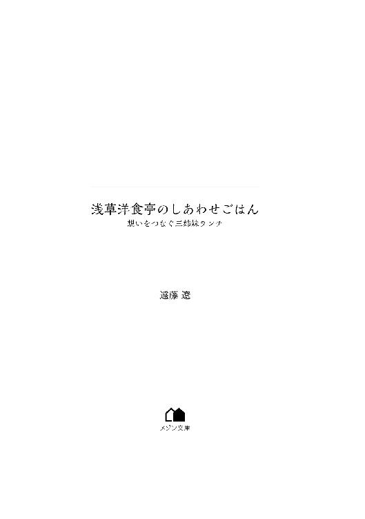

| 浅草洋食亭のしあわせごはん 想いをつなぐ三姉妹ランチ (メゾン文庫) | |
| 遠藤 遼 | |
| 一迅社 (2018) | |

スマートフォンがアラームを鳴らした。
もう朝なの？ でも、身体が動かない。
手探りでスマートフォンを掴まえて音を消す。
大丈夫。あと十分――。
仄明るい部屋の中で温かな眠りに再び落ちようとしていた長尾美咲を、別の音が呼び戻した。
今度はＬＩＮＥの通知音だ。
派遣先のリーダーからか、友達からだろうか。
「......なんだ、菜穂子姉ちゃんからか」
私の大切な二度寝の十分間を返してほしい。
『美咲、おはよー。朝だよー』
文面からほんわりした雰囲気が漂ってきそうで、かえって眠くなりそう。
「もう......。菜穂子姉ちゃんは、朝の仕込みがあるから早起きなんだろうけど」
あくびが出た。
こちらは慣れない事務仕事で疲れているのだから勘弁して欲しい。
でも、一応、礼儀として返事は書こうかな。
再び通知音がする。
『二度寝するなー。仕事を始めてすぐなのに遅刻するぞ』
見透かすような文面に、返事を書こうとした手が止まった。
「香織姉ぇも朝から元気だねえ」
ふたりの姉は浅草で洋食屋をやっている。
長女の菜穂子が調理を担当し、次女の香織が給仕として立ち回りながら経理を見ていた。
お店はランチタイムに始まり、休憩時間を挟んでディナーまであるのだが、ランチの仕込みで朝早く起きなければいけないのだと言っていた。
そのため、こんなふうに朝からＬＩＮＥが入ってきたりする。
おかげで二度寝が邪魔されるわけだが、裏を返せば寝坊防止にもなっていて、美咲としてはちょっと感謝している。内緒だけど。
再び、菜穂子姉ちゃんからのＬＩＮＥだ。
『ちゃんと食べてる？ たまにはうちのお店でご飯を一緒に食べようよ』
就職してひとり暮らしをしてからまだ数週間だというのに、そんなお母さん的なメッセージが来る。
三人姉妹のいちばん下という立場から、ひとり暮らしでやっと自由になれたのに、わざわざ姉たちのところに行かなくてもいいじゃないかと思う。
ため息をひとつ。途中まで書いた返事は消してしまって、既読無視。
どことなくざらついてしまった目覚めを、シャワーで洗い流そうとベッドから冷たいフローリングに降り立った。
アスファルトを慣れないヒールで小走りになりながら、最寄りの亀戸駅へ急ぐ。周りの人たちの足の速さにはまだついていけないでいた。
電車では身体が潰され、職場の最寄り駅のホームに吐き出される。
大通り沿いの大きなビルに美咲の勤め先があった。
正確には派遣先で、自分の会社ではない。
そのため、大学を出たばかりで社会人になりたての意識と相まって、すごく場違いな感じが拭えないでいた。
派遣先はこの大きなビルの五フロアを使っている。
そのうちのひとつの事務スペースに、カードキーでロックを開けて入る。カードキーというのが社会人らしくてかっこいいと思う。そこが美咲の配属先だ。
始業時間三十分前で、今日は事務方ではいちばん乗りだった。美咲はちょっとだけ姉たちのＬＩＮＥに感謝した。
給湯室でポットのお湯を替え、事務方のデスクを拭く。
そのうちに、派遣先の会社の正社員が徐々に出勤してきた。会社の仕事が保険会社で営業さんが多いからか、みなどこかみなぎった雰囲気がある。
「おはよう、美咲ちゃん」
なじみの営業さんが挨拶してきた。背の低い、小太りの気のいいおじさんだ。
「おはようございまーす」
笑顔を作って挨拶を返す。何はなくとも笑顔と挨拶だと、社会人一日目に同じ派遣のリーダーから教わった。
でも、ほんとうはこんなはずじゃなかったんだけどなあ、と思う。
大学で経済学を学んで、さらに英語も一生懸命磨いたのは、派遣になるためじゃない。美咲の父親のように商社に就職して、海外に行ってみたかったからだ。
ところが、就職活動では次から次へとお祈りメールばかり。
男子も女子も友人たちがどんどん就職先が決まっていくのを尻目に、黙々と就職活動を続けたけど、結局、商社には入れなかった。
それどころか、商社に拘ったせいで気がつけばどこも就活を締め切っていた。
自分が就職浪人になるなんて――。
大学で体育会系サークルをがんばれば良かったのか、学部が違っていたのか、大学だけではなく高校ももっと偏差値の高いところにすべきだったのか。
悩んだところでどうしようもないことばかり悩んだ。
だけど、とにかく仕事をしなければいけない。その一心で何とか派遣会社に登録し、保険会社の事務方の職を手に入れたのだった。
先ほど挨拶してきた営業さんが、営業らしく流れるように社交辞令を発する。
「今日も相変わらずきれいだね」
「そんなことないですよぉ」笑顔、笑顔。
こんなはずじゃ、なかったんだよなぁ。
洋食屋をやるために北千住の実家を出てしまったふたりの姉に代わって、自分くらいはきちんと商社勤めのお父さんが喜ぶような仕事に就きたかったのだ。
そうすれば、七年前にお母さんを亡くしてからどこか鬱屈しているお父さんを喜ばせてあげることができるだろうって思ったのに......。
美咲がデスクを拭いていると、営業さんが世間話から相談に変えてきた。
「ごめん、ちょっと書き間違えちゃってさ。この帳票ってすぐもらえる？」
金融機関である保険会社は膨大な帳票がある。良く似たものも多いので、気をつけないといけない。
美咲はその営業さんから帳票用紙を受け取り、じっくり見る。
「えっと、それは......」
たぶん、始業時間になって別フロアの統括事務センターに頼まないと再発行できないはずだが、どうだったかな......。
美咲が困っていると、出社してきた事務方の派遣リーダー格である仲村美津子が割って入ってきた。
「この申請用紙に必要事項をもう一度書いてください。急ぎなら、朝礼後に七階の統括事務センターに直接行ってください」
鞄を置いた仲村が営業の顔も見ないで説明するとデスクワゴンの鍵を開けて、申請用紙を取り出して営業さんに突き出した。
「ありがとありがと」
「次からは朝礼が終わってからにしてください。それがルールですし、こちらも朝の準備がありますので」
正論で押し切られた営業さんが、恐縮した顔をしてその場を去る。
「あ、仲村さん、ありがとうございました」
春物の薄いコートを脱ぎながら、ため息交じりの仲村の返事が返ってきた。
「長尾さんも、もう一カ月経つのだから、いい加減、帳票類については覚えてね」
「はい」
まだ三週間ですけど、とは言わない。
このやりとりの間、仲村は美咲の顔をチラリとも見ない。
「マニュアルや用紙の入っているワゴンの鍵も開いていなかったし」
「すみませんでした」
仲村の年齢はひと回り以上は年上で三十五歳くらいだったはずだ。あまり背は高くないが、きれいな顔立ちをしている。だが、どちらかというと冷たい感じの美人で、先ほどのようなきびきびした物言いにいつも胃が痛む思いがしていた。
仲村はこの保険会社に派遣されている事務職の中では最古参のひとりで、仕事はできるらしい。
この保険会社の統括事務センター長は派遣ではなく、れっきとした保険会社の役職者だが、仲村のことを信頼しているようだし。
「おはようございまーす」と挨拶しながら、他の事務メンバーふたりがやってくる。
ふたりとも美咲よりは年上だが、まだ二十代。いつもにこにこしているが、裏では結構、口が悪い。女は怖いのだ。
朝礼時間が近くなってきて、営業さんたちも揃ってくる。
それらの営業さんは、フロア内のいくつかの営業部に在籍していた。
彼らの取ってきた契約の事務処理から、彼らが営業活動で必要とする各種書類やパンフレットのストックに至るまで、美咲たちたった四人で行うのである。
美咲は語学で鍛えた記憶力には自信があったが、まるで世界が違っていた。
「ちょっと、この書類のサイン、間違ってる。誰？」
仲村の鋭い声が飛んでくる。美咲はぎょっとなって振り返った。
「あ、すみません......。私です」
「ここはあなたのサインじゃなくて私のサイン。訂正して」
美咲は目線だけで他の事務メンバーを窺う。自分にその処理のやり方を教えてくれた張本人は、助けを求める美咲の視線も、仲村の叱責も知らん顔をして自分の仕事をしていた。
それはないでしょ――。
午前中ばたばたしていて、お化粧を直している暇もない。
でも、メイクが崩れっぱなしでは、社会人の女性としていかがなものかと仲村から皮肉を言われる。どうしたらいいのさ。
昼休みになってやっとひと息。
だが、お昼は、食べに行ったり、お弁当を買ってきたり、その日の気分によるのだが、お付き合いもある。
今日は仲村以外の先輩ふたりと近くの中華料理店に入った。
案の定、食事の間中、ずっと営業さんたちと仲村の悪口。
事務スペースではほぼ無表情で仕事をしていることの反動だろうか。ふたりとも良くしゃべる。
「仲村さん、何であんなにいつもカリカリしているんだろうね」
「美咲ちゃん、さっきのごめんねー。仲村さんが怖くてさー。チョコ、あとであげるね」
「あ、いえ、大丈夫です。ありがとうございます」
あざといようなフォローなのに、まんまとうれしい自分もちょっと情けない。回鍋肉のキャベツがほろ苦い。
「仲村さん、仕事はできるんだけど、あの性格じゃね」
「若い頃はきれいだったんだろうけど、もう典型的なお局様」
美咲は曖昧に笑って聞いていた。
なにぶん、言葉には気をつけないといけない。
女同士の会話なんてどこでどう漏れるか分からないし、自分の場合は特に言葉は慎まなければいけないのだ。
「来週は今月の締め日があるから超忙しくなるよ」
「美咲ちゃん、締め日は初めてだもんね。ドリンク剤、毎日用意した方がいいよ」
「えー、そうなんですか」と、思わず笑顔も引きつった。
いまでさえ、慣れない仕事と新しい人間関係で疲れて、ひとり暮らしのアパートには寝に帰るだけなのに。
録り溜めている番組も見る暇がないし、改めて転職活動をする気力も湧いてこない。
人並みに出会いのチャンスを期待していたが、少なくともいまの勤め先の営業さんたちにそれを望む気にもなれず、かといってコンパに参加する元気もない。
夜の町で飲んでいる人々のパワフルさに感心してしまう。
定食についていた杏仁豆腐を食べながら、先輩ふたりはタバコを吸い始めた。
最初の頃こそ、タバコを吸わない美咲に断っていたが、この頃はそれもなくなった。
ふたりの女性が吐き出すタバコの煙に巻かれながら、自分も派遣を何年か続けたらこんなふうになっていくのかと思うと、妙に焦る気持ちになるのだった。
そんな毎日を五回繰り返せばどうにか一週間が終わる。
今日は金曜日。
今週も何とか生き抜いた。
土日は営業さんたちは契約に走り回るらしいが、事務方は休みである。
今日はさっさと帰ってゆっくりお風呂に入ろう。
お給料も出たし、みんなで夕飯に行こうという先輩のお誘いを、「今日、ちょっと実家の家族に用事があるので」と、とっても申し訳ない顔をして、お断りした。
「ああ、そっか。お父さんひとりだもんね。親孝行してあげるんだよ」と周りに言われ、何度も頭を下げて、美咲はオフィスをすり抜けた。
ひとりになって大きく息をついた。
都会の夜風が気持ちいい。
自由だ。
社会人になって初のお給料。自分へのご褒美で贅沢して何かおいしいものを食べて帰るのも悪くない。浅草の姉たちがやっている洋食屋以外の場所で、何かないかと信号待ちの間にグルメサイトを開く。
その美咲の背後から突然、女の人の声がした。
「こんばんは。あなたは帰るんですか」
赤い口紅と跳ねるような前髪、しっかりした肩のラインが印象的な若い女性だった。
「ええ、まあ......」と美咲が小声で呟くと、その女性はぱあっと笑った。
「私も何だかああいう食事会みたいなのは苦手で。私、井上知佳。違うフロアだと思うから初めましてだろうけど、あなたのことはときどき見かけて知ってたの」
「あ、そうでしたか。私、長尾美咲です」
信号が青に変わる。美咲に続いて井上も歩き出した。
「事務仕事って肩こるよねー」
首を左右にほぐしている井上を見ながら、美咲は行き先を決めた。横を歩いている井上に控えめに声をかける。
「これから浅草の洋食屋で食事して帰ろうと思うんですけど、一緒に来ますか」
「え？ ほんと？ もち行く。洋食って大好きなんだ」
うれしそうな井上を横目に見ながら反省する。どうしてこうなった。そうだ。さっき、「家族に用事がある」と言ってしまったのだった。嘘でも不用意な言葉は使うものじゃない。不本意ながら、その言葉が実現してしまったじゃないか。
地下鉄の中でも井上は、「仕事中、誰とも話さないでいると結構つらいんだよね」と、笑顔で話しかけてくる。よく見れば自分とあまり年は変わらなさそうだ。
銀座線浅草駅で下車する。
浅草は、観光地として有名な雷門の辺りも夜は意外と早い。そのかわり、うまいもの通りや六区の方の飲食店は遅くまでやっていた。
ライトアップされた東京スカイツリーがそびえるのを見ながら、美咲は迷うことなく道を歩き、仲見世通りから一本入った路地を選ぶ。
「井上さん、こっちこっち」
「あ、ちょっと待って」
井上がサラリーマンにぶつかって頭を下げていた。相手は無視していたけど。
美咲は通りの奥にある建物の前で止まった。外観は昭和初期に建てられた由緒正しい飲食店といった建物。おいしそうなデミグラスソースの匂いが漂っている。
「ここです」
「へー。洋食屋『うさぎのしっぽ』。かわいい名前ね」
美咲もそう思う。これが実の姉ふたりのお店でなければ。
古くてちょっと重いドアを美咲が引くと、ドアベルが澄んだ音を立てた。
空いた皿を片付けていた店員が美咲に気づいた。
「いらっしゃいませー。......って、美咲じゃん」
ショートヘアでメガネをかけたエプロン姿の女性、二番目の姉の香織が笑顔になった。その反応に、何人かのお客さんが美咲に注目する。恥ずかしいのでやめてほしい。
「どうしたの、香織」
「菜穂子姉さん、美咲が来たよ」
「あらあら。じゃあ、手を洗って早速手伝って」
厨房から声だけがした。おっとりしているけど菜穂子の方が危険なのだ。
「今日はお客さんだよ」
ホール担当の香織が案内しようとする席をさりげなく断って、美咲は奥の席に座った。井上も続き、美咲は指を二本立てた。ふたりですよ。
香織が少し目をすぼめるようにしたが、メニューとお水をすぐに置いてくれた。口に含むとかすかにレモンの香りがする。冷えた水が喉に心地いい。
「美咲ちゃん、美咲ちゃん。ここってひょっとして知り合いのお店？」
「元は祖母のお店でした。祖母が亡くなって私の姉ふたりでやってるんです」
途端に井上の目が輝いた。
「えー、じゃあさっきの女の人も厨房の人も、美咲ちゃんのお姉さん？ イケてる」
「そんなこともないんだけど......」
向こうでは香織が、少し不思議そうな顔をしていた。
「ひょっとしてお休みの日とかはお店を手伝ったりするの？」
「よくお誘いは受けるけど、事務仕事だけでくたくたなんで断っています。休みの日は寝ていたいです」と、姉たちに聞かれないように美咲はちょっと声を落とした。
そうしないと姉たちが、そんなつらい仕事ならやめてしまって、この「うさぎのしっぽ」で働かないかと熱心に誘ってくる。家族として気遣ってくれるのはうれしいのだが、いまのところ洋食屋で働く気がない美咲にとっては、ありがた迷惑なのだ。
でもそれは、洋食屋の労働条件が良くないということではなく、あくまでも商社の仕事に拘っている自分の気持ちの問題で、つまりはわがまま。
だから、姉たちが誘ってくれるたびに断る心苦しさが嫌だったのだ。
香織が営業スマイルで美咲の顔を覗き込むようにした。
「お客様、ご注文は？」
ひょっとしたら美咲の気持ちなど、姉たちにはとうにお見通しなのかもしれない。自分も姉たちも、普通の人より、いろいろなことがよく分かる力を持っているから。
井上がいそいそとメニューを覗き込む。
「オムライスにトンカツ、ポークジンジャー、ハンバーグ。どれもいいなあ」
「どれもおいしいですよ。ランチだともっと安いですけど、今日はお給料日だから」
美咲の言葉を聞きつけて、またしても香織が家族としての笑顔になった。
「初めてのお給料！ がんばったね、美咲」
そしてちょっと声を潜めて付け加える。
「ちょっとおまけしてあげる」
美咲が礼を言うよりも先に井上が快哉を上げた。
「私も一緒におまけしてもらえるかな。ビーフシチューがいい」
さっきから思っていたが、結構ぐいぐい来る。美咲は苦笑して注文した。
「ビーフシチューを、二人前」
「それと赤ワイン」と井上が口を挟み、美咲がワインを追加する。香織はちょっと目を丸くしたがそのまま注文を聞いて帰った。
ほどなくしてサービスでサラダとパンが運ばれてくる。
パンは温めてあり、小麦の香りがした。
サラダは新鮮なレタスにスライスした白い玉ねぎ、くし切りの赤いトマトにオリジナルのドレッシングがかかっている。
さらにワイングラスがひとつ用意され、赤ワインが注がれた。
「やっぱりワインは赤よね。秋のボジョレー・ヌーボーのイベントで赤ワインが好きになったの。美咲ちゃんは飲まないの？」
「私は、あんまり強くないし」
「そう。じゃあ、お言葉に甘えて。あら、このお店、飲食店なのに真っ白いうさぎを飼ってるの？ かわいい。だから『うさぎのしっぽ』なの？」
サラダをつついていた美咲が手を止めた。
「そのうさぎ、かわいいでしょ。玉兎さんって言うの」
井上の足元にいる、体長三十センチくらいの真っ白いふわふわが玉兎さんだった。鼻をヒクヒクさせながらこちらを見て、小さく首をかしげる。綿毛のような尻尾がとてもいい。いつ見ても、大変かわいいと思う。
料理を待っている間、ワインと雰囲気に酔ったのか、井上はだんだん仕事の愚痴を言い始めた。職場の上司の気にくわないところ、お局様の嫌がらせ、給湯室での女同士の噂話のあれこれ。美咲としても身につまされる内容ばかりで、すぐに打ち解け、ふたりでけらけら笑いながら互いの仕事の話をし合った。
「あははは。井上さん、ものまねうますぎです」
「そう？ それにしても誰かにこんなに話ができたのはいつくらいぶりかなあ」
美咲は目の端の涙を拭った。
「井上さんのお話も面白いです」
「そう言ってもらえるとうれしいな。これからもずっと一緒にお友達でいてくれる？」
美咲は曖昧に微笑んで、サラダの残りを食べた。
「お待たせしました。ビーフシチューです」
ビーフシチューが運ばれてくる。
ブラウン色のシチューから白い湯気が立ち上っていた。
大きな牛肉がいくつも入っていた。
肉はフォークで触れればほろほろと崩れるほど柔らかく煮込まれていた。シャトー切りされたにんじんが彩りを添えている。
ひと口食べると、身体に染みるようだ。
「相変わらず、菜穂子姉ちゃんのビーフシチューは絶品だ」
もうひと口、とスプーンを動かしたところで、菜穂子が厨房から出てきた。
「そう？ ありがとう」
菜穂子は長い髪を料理の邪魔にならないように後ろで縛っている。その美しさは妹の美咲としては自慢でもあり、うらやましくもあり。自分だって二十二歳だし、身長も菜穂子とそれほど変わらないのに、いろいろ負けている......。
周りのお客さんがチラリと菜穂子を見たが、すぐにそれぞれの食事に戻っていく。
「美咲ちゃんのお姉さんですか。ありがとうございます」
「美咲がお世話になっています。姉の長尾菜穂子です」
「会社帰りに一緒になって。こちら、井上知佳さん」
美咲に紹介された井上が頭を下げる。
「熱々のシチュー、すごくおいしいです」
「そうですか。ありがとうございます」
「うちのお母さんもときどき、ビーフシチューを作ってくれたんです。普段は普通のクリームシチューなんだけど、お誕生日とか、テストでがんばったときとか。へへ」
井上が先ほどまでの会社の愚痴とは違った雰囲気になった。
「一度だけ、私が付き合っていた彼にフラれた日に、お母さんがビーフシチューを作ってくれたことがあって。いつもはいいことあった日がビーフシチューだったから、今日、全然違うじゃんって思って。でも、食べてたら何だか泣けてきちゃって」
語りながら井上が涙をぽろぽろこぼしていた。その姿がひどく頼りなげに見える。美咲はじっと井上を見ていた。
「でもね、何でかな。お母さん、最近、私を無視するの。まるで私なんていないみたいに。お母さん、ぼけちゃったのかな。へへへ」
井上が天井を見上げるようにしながら涙を隠している。美咲はその背中をさすった。
「......お母さんのシチューが食べたいのに、なんで食べられないんだろう」
美咲は菜穂子を見上げた。菜穂子が小さく頷く。
向こうでは香織も心配そうな顔をしていた。
美咲は大きく深呼吸をして、井上の心に語りかけるように呼びかける。
「ほんとはそろそろ、気づいてるんですよね？」
「え」
ちょっとさみしい気持ちで美咲は微笑むと、テーブルを改めて示した。
美咲の側には食べかけのビーフシチューとパンが置かれている。
それに対して、井上の前に用意されたビーフシチューは温かそうな湯気を漂わせているが、ひと口も減っていなかった。シチューどころか、サラダもパンも赤ワインも、運ばれてきたときのまま置かれている。
井上がその料理やワインを見て顔を強張らせた。
「あなたは――食べたり飲んだりしてたつもりかもしれないけど、気分だけ。いいえ。そもそも私と菜穂子姉ちゃん以外と言葉を交わせていない」
美咲の指摘に井上の顔色が青を通り越して真っ白になる。
菜穂子が優しく付け加えた。
「服装やお化粧の感じだと、きっともう二十年以上前に亡くなっていらっしゃるのではないかしら」
井上がくっきりした化粧の目を大きく見開いた。
「嘘――」
相変わらず背中を撫でながら――といっても、それはこの世の肉体ではないから、慎重にしないと手がすり抜けてしまうのだが、美咲は静かに語りかけた。
「さっき、うさぎの玉兎さんが見えたのも、そのせいなんです。玉兎さんは私たち以外には助けが必要な人にしか見えないうさぎだから。ほら、玉兎さんがお店の中をうろうろしていても誰も気にかけないでしょ」
「あなたたちは、一体――」
「私や菜穂子姉さんはそういう不思議な力を持っているの。香織姉ぇは、私たちよりちょっと力が鈍いから、お店に来たとき、あなたのことははっきり見えていなかった」
いまはもう何となく見えているみたいだ。香織が小さく頭を下げている。
しかし、井上には自分の身の現実を受け入れることで精一杯の様子だった。
「私、やっぱり死んじゃってたんだ......」
「自覚はあったんですね。病気だったんですか？ それとも事故？」
美咲が尋ねると、青白い顔の井上が自嘲したように答えた。
「さっき聞いてもらってたみたいに、毎日の仕事がつらくて。誰にも言えなくて」
膨大な量の仕事に追われ、無理を重ねて心と体を壊した。
薬を飲みながら仕事を続け、お酒とディスコでストレスをごまかし続けた。
周りの結婚退職を尻目に、目の下のクマを濃い化粧で隠してお金を稼いできたのだ。
「誰かに――、それこそお母さんに相談しなかったんですか」
「私のお父さん、私が大学を卒業する直前に死んじゃったんだ。だから私ががんばらないとお母さん、食べていけないから」
だが、そんな日々も長く持たせられなかった。
「どうやって死んだかは......ごめん、あんまり覚えていない」
弱々しく笑っている井上に、美咲が何度も頷いた。
「話したくないことは、話さなくていいんですよ」
美咲の顔を振り返った井上の表情がぐしゃぐしゃにゆがんだ。ごまかすことも、てらうことも、もうない。身体を折り曲げ、大きな声を上げて、井上が泣き声を発した。
その井上の背中を相変わらず撫でながら、美咲が菜穂子に軽く目配せする。
菜穂子は玉兎さんを呼び寄せ、うさぎの小さな鼻を自分の額に当てた。
玉兎さんは軽やかに跳ねて井上の傍らに降りる。
井上がそれに気づくと、玉兎さんは彼女の周りをぐるぐると跳ね回った。
やがてそれは井上の身体を包む光の輪になっていく。
「これは――」
不思議な出来事に泣くのも忘れてしまった井上が問いかける。
「井上さん、短い間でしたがいろいろおしゃべりできて楽しかったです。あちらの世界で幸せに暮らしてください」
美咲の言葉に井上が、ああ、そうなのかといった顔で頷いた。
「――私こそ、最後に話を聞いてもらえてうれしかった。ありがとう」
井上の顔に安らぎが戻るのを見て、美咲が呟いた。
「――玉兎さん、あとはお願い」
玉兎さんから発される光の輪が大きくなり、井上の全身を包み込む。
やがてその光と共に、井上の魂はあの世へ旅立っていった。
――「浅草の祓い屋さん」と呼ばれた、美咲たちの祖母が始めたこの洋食屋。
困ったときには「うさぎのおばあちゃん」に頼めばきっとうまくいく。ときにはこんな、死んでしまった人のことであっても。
「うさぎのおばあちゃん」が「うさぎの姉妹」となったいまでも、それは変わらない。祖母の不思議な力をこの三姉妹も引き継いでいるのだった。
井上を無事に見送ったと美咲が報告すると、菜穂子と香織が口々に言い出した。
「やっぱりお姉ちゃん、美咲ちゃんにお店を手伝って欲しいな」
「あたしも、それがいいと思う」
しかし、美咲は首を横に振る。
「さっきの井上さんだって、菜穂子姉さんと玉兎さんのおかげだし」
香織が何か言いたそうな顔をしていたが、菜穂子が止めた。
振り返れば玉兎さんはもうどこかに消えている。
玉兎さんの正体は祖母にもよく分からなかったらしい。
ただ、あるときから祖母からつかず離れず一緒に暮らし、祖母とお店とお客さんを守ってきた。
美咲には白や金色の光に包まれた神聖なあやかしのようにも見えるから、やっぱり何かしらの守り神か神様のお使いなんだろうと思っている。
美咲が食べかけのビーフシチューをお腹に収める頃には、ほとんどのお客さんはもう帰っていた。井上の分の食事は姉たちの賄いになるだろうが、ワインだけはテーブルに残しておいてもらった。
菜穂子が明日のランチのカレーのための玉ねぎの皮むきを始め、香織がレジを締め始める。
姉たちの姿を見ながら、美咲の頭の中ではいろいろなことが渦を巻いていた。
井上のこと、派遣のリーダーの仲村のこと、他の派遣の仲間のこと。
自分の将来は、まるですっかり暗くなった公園から急いで家に帰る小学生のような不安でいっぱいになる。無力な少女に夜の闇は暗すぎる。
だが、その気持ちは自分の中にしまって、美咲は井上が残していった赤ワインの残りをあおるように飲み干すのだった。
浅草の路地は細かく入り組んでいる。
そんな浅草の仲見世通りから一本入ったところにある洋食屋「うさぎのしっぽ」の建物は、昭和初期のような懐かしさと重厚感のある石造りの建物だった。
一階が店舗で、二階が住居になっている。
菜穂子は朝の澄んだ空気の中、店の前を掃除してこの建物を見上げるのが好きだった。
もともと祖母・弓削たえ子がやっていた洋食屋で、菜穂子も手伝っていたが、五年前に祖母が亡くなってから正式に引き継いだ。
オーナーシェフと言えば格好はいいが、要するにひとりで厨房に立っているのだ。
上の妹の香織も手伝ってくれるし、何よりお客様が離れないでくださったのがありがたい。
祖母の味を一生懸命追っていたのだが、やっと安定してきたように思う。
そしてここだけの話、常連さんの間では、祖母の代から変わらず不思議な力がもらえるとこっそり評判のパワースポット的なお店なのだ。
掃除を終えた菜穂子が店に戻ると、厨房で玉子の焼けるいい匂いがした。
「美咲ー、朝ご飯できるよー」
朝ご飯を厨房で作るのは香織の仕事だった。余り物の野菜で作ったスープとハムエッグにコールスロー。ご飯も昨夜の残りだ。
「香織、ありがとう」
香織が朝ご飯を作るのは毎日のことだが、菜穂子は必ず感謝を口に出すようにしていた。その方が気持ちがいいからだ。
感謝された香織がにっこり笑う。
下の妹の美咲は、香織が口うるさくて厳しい性格だと文句を言ってるが、こんなかわいい笑顔を見ればそんなことないと思うのだけど。
「美咲ー」
香織がもう一度声を上げたところで、不規則に階段のきしむ音が聞こえたあと、昨夜珍しくこの家に泊まっていった美咲が下りてきた。
「あんま大きな声出さないで......。頭に響く」
「情けない。赤ワイン一杯で二日酔いになるなんて、どんだけお酒に弱いのよ」
「飲み方間違えただけ」
美咲がおぼつかない足取りで厨房の椅子に座る。美咲の身体が斜めになっていた。
菜穂子は冷たい水をコップについで美咲の前に置いた。
「ありがとう。やっぱ菜穂子姉ちゃんは優しい」
死んだ表情のまま美咲がこくこくとお水を飲む。ちょっとかわいい。
「お水、おかわり。ご飯はいらないかも」
香織が食事を並べながら眉をひそめる。
「美咲、食べられるならスープだけでも食べなさい」
菜穂子は席に着きながら、ふたりの妹たちのやり取りを微笑ましく見ていた。
普段ならわざわざ作らない野菜スープを香織が作ったのは、美咲が二日酔いでご飯が食べられない可能性を察知してのこと。でも、そんなことを言えば、香織は否定するだろうし、美咲も食べにくいだろうから、菜穂子は何も言わない。
三人揃って両手を合わせた。
「いただきます」
菜穂子は小さく目玉焼きの白身を箸で切って食べ、香織はいきなりご飯に乗せてハムエッグ丼にしている。
美咲が相変わらずの表情でスープを少しだけ啜った。
菜穂子もスープを飲む。
野菜の香りや甘味がコンソメに溶け出していて、朝の目覚めにはもってこいだ。菜穂子も香織のスープが大好きだった。
「たぶん美咲ちゃんは、昨日の井上さんの霊がかわいそうになっちゃったのよね」
さっと美咲の顔が紅潮する。
昔から隠しごとができない子なのだ。
もりもりとハムエッグ丼を食べていた香織の動きが止まる。
「まあ、あたしにははっきり見えたり聞こえるほどの力がないからふたりに任せっきりだったけど、そんなかわいそうな人だったの？」
「かわいそうっていうか、なんかこう、ずーんと来た」
外で働いている美咲になら自分のことを分かってくれるだろうと思って、一緒に来たのだろう。
井上と同じようなことを美咲も悩んでいるのかもしれない。だから、井上の霊と波長が合って、見えてしまったのだろうと思う。
きっとそのことは、同じような力を持っている美咲自身も分かっているはずだ。
「いい、美咲。あんたはお酒が強くないんだから。飲み方間違えたら、たった一杯でこんなになっちゃうの。女の子なんだから、外で飲むときは注意しなさいよ」
わざとお姉さんぶった言い方をしている香織も、香織なりに美咲を気遣っているのだ。お姉ちゃんから見るとふたりのやりとりは大変微笑ましい。
玉兎さんが美咲のそばで丸くなっていた。
「分かりました。反省しています。だからスープ、おつゆだけもう少し頂戴」
この様子なら美咲は大丈夫だろう。これは不思議な力ではなく、姉の勘。
「うさぎのしっぽ」で出す料理は、祖母の代から基本的には変えていない。それだけお客様に親しまれた味だからだ。特に今日のランチに出すカレーライスは昔から人気で、サラダやドリンクと一緒にしたランチセットはいつも売り切れ必至だった。
お客様だけではない。菜穂子たちもこのカレーライスが大好きで、母親の作るカレーライスよりも好きだった。
そんな準備の手伝いにテーブルを拭いていた美咲が、相変わらずぐったりしていた。
「はあ、二日酔いの不始末のお詫びに手伝おうと思ったのに......」
本気で料理の腕が壊滅的な美咲は、味つけなどではなく、月桂樹の葉をたこ糸で縛ってカレーの寸胴に入れるミッションを菜穂子から授かったのだ。
菜穂子立ち会いでその任務はこなせたのだが、浮いている月桂樹の葉が気になった美咲が、手近にあったレードル、つまりおたまでぐりぐりと月桂樹を沈めた。そのため、月桂樹の葉が寸胴の中で真っ二つになって行方不明になってしまったのだ。
香織の作った失せ物探しのお守りの力もあって、月桂樹は見つかったのだが......。
「かえって仕事を増やしただけだったって？ あんた、調理場に立ったことないんだから仕方ないよ」
と、同じくテーブルを拭いている香織が苦笑した。
お詫びにお詫びが重なって、開店時間まで手伝いが延長している。
美咲としてはちょっとだけ手伝ってさっさとアパートに帰るつもりだったのだろうが、普通に働いてしまっていた。菜穂子にはちょっとうれしいけど。
香織が手早く、そしてきれいにテーブルを拭き、一輪挿しを調えていく。
「テーブル拭きも、香織姉ぇの方が早いし」
「あはは。そりゃそうだ。プロだもの。菜穂子姉さんだって、月桂樹の葉っぱが見つかんなかったら寸胴の中身をぜんぶひっくり返しただろうね。お客さんのカレーに月桂樹の葉を入れるわけにいかないから」
香織がごく当然という言い方をしたが、自分のしでかしたことの意味を知ったからか美咲の顔色が青くなった。
「そうだよね......」
「まあ、あたしのお守りがあれば、だいたい見つかるけど」
「相変わらず香織姉ぇのお守りの効果はすごいね」
「あんたや菜穂子姉さんみたいに霊が見えたり声が聞こえたりする強い力はないけど、お守りやお札を作るのはおばあちゃんからお墨付きだからね。これもプロの業」
またため息をつきそうになった美咲を、菜穂子が厨房から制した。
「その席に美咲ちゃんのため息の気が残っちゃうから、ため息禁止」
テーブルを拭いても、拭いた者の心の念いがそこに残ってしまう。
透明な心であればその場の気の汚れも落ちるが、疲れたり汚れたりした心ではかえって濁った気が残ってしまう。汚れたぞうきんではかえって掃除にならないのと同じ理屈であり、霊的な力のある者としてはごく初歩的なことだ。
「あっ......」
さっと顔を赤らめた美咲が目を閉じて何度か深呼吸をした。
すっきりした表情に変わっている。
菜穂子から見ても、美咲のそういう心の統御はさすがだった。
開店時間まであともう少し。
テーブルを拭くのを美咲に任せた香織が店先に出す立て看板型の黒板に、今日のランチメニューやオススメを書いている。
すると、お店の勝手口を叩く音がした。時計を確認するが、まだ開店前だ。
「はいよー、毎度ありー」という男性の声がする。
「うさぎのしっぽ」に出入りしている八百屋さんや肉屋さんが注文した品を持ってきてくれたのだ。
「おや、珍しい。美咲ちゃんじゃねえか」
「美咲ちゃん、おいちゃんのこと覚えてる？ きれいになったねえ」
威勢のいい声に半ば押されるようになりながらも、美咲もやり返していた。
「お久しぶりです。きれいになったなんて嘘ですよ。そんなこと言う余裕があるなら、お安くしてください」
「相変わらず美咲ちゃんは厳しいなあ」
「いい商売人になるよ。うちに嫁に来てよ」
「えー、嫌です」
美咲も小さい頃から祖母がやっていたこのお店に遊びに来ていたのだ。
いちばん下の孫娘だから祖母のたえ子もかわいがったが、常連さんにも顔は知られているし、出入りの業者さんには小さい頃から気安く話す。
ひょっとしたら姉の自分たちと話すときより肩の力は抜けているかもしれない。
はたして妹は、いまの職場でも砕けて話せる人間関係を作れているのかしら。末っ子はのびのびしているのが似合っていると思う。
業者さんたちに混じって、ちょっときれいな女性が勝手口から声をかけてきた。
「開店前にごめんなさーい。菜穂子ちゃん、香織ちゃん、また舞台やるからチラシとポスターをお店にお願い」
この浅草近くの劇団で舞台女優をやっている女性だ。「利恵さん」と呼んでいる。
こういうご近所づきあいも菜穂子は大好きだった。
「ええ、もちろんいいですよ。利恵さんの舞台、楽しみにしてます」
「じゃあ、これ、お願いします。あとチケットも。――あれ？ 美咲ちゃん!?」
「あ、こんにちは――」
「やだ、美咲ちゃんがいるなんて珍しいっ。私、今度の舞台で準ヒロインやるの。チケット特別にあげるから、見に来て」
「い、いえ、買います。ちゃんとお給料もらってますから」
「いやー、美咲ちゃんがもうお給料稼ぐ年になったのねぇ」
利恵が美咲の頭を撫で回さんばかりに喜んでいる。さすがに美咲が困ったようにしていた。
おかげで美咲が帰る暇もなく、開店時間になった。
他にも挨拶に行くという利恵と入れ替わるように、開店早々、高齢のお客さんが何人か入ってくる。
特に、ランチがカレーライスの日は、だいたい分かっている常連さんも多い。
早くも半分くらいの席が埋まっていた。ありがたいことだと思う。
菜穂子は厨房で慌ただしく動き出した。
ドアベルが鳴り、またひとり、常連の石崎徹が入ってくる。
七十代くらいなのだが髪を黒くしているので若く見えた。小柄ながらきちっと三つ揃えの紺スーツを着ていて、革靴も光るほどに磨き込まれている。レンズの大きな古いメガネの奥で、細い目が見えなくなるほどにこにことして店に入ってきた。
「空いてる？」
石崎のいつもの入店の声かけだ。
「はい、いらっしゃいませ」
給仕担当の香織が快闊に答える。
店に入った石崎が美咲に気づいたようで、メガネをずらしてまじまじと見つめると、大仰な声を上げた。
「あれっ、どこのカワイ子ちゃんかと思ったら、美咲ちゃんじゃねえか、珍しい。おじちゃんのこと覚えてる？」
訛りをまるで隠そうとしない石崎のしゃべり口は、声も大きいのにあったかく感じる。この界隈で生まれ育って、いわゆる田舎がない菜穂子にはなおさらだった。
「覚えてますよ、石崎さん。いつも食べに来ていただいてありがとうございます」
石崎が、そばの香織にうれしそうに声をかける。
「何、とうとう、美咲ちゃんも働くようになったの？」
「だといいんですけどね」と香織が肩をすくめてみせると、石崎は皺の刻まれた顔をくしゃくしゃにして嘆いた。
「何だよ、美咲ちゃんもこのお店にいれば俺、毎日だって食いに来るよ？ いま何してんの？」
「いまは普通に事務の仕事をしています。今日はたまたま」
美咲と話せる席に座った石崎がますます顔をしかめた。美咲は座らない。
「美咲ちゃんもここで働けばいいんだよ。そんな、外でへーこら頭下げるような仕事しないでさ。ここだってよっぽど立派な仕事なんだから」
「ええ、まあ......」
美咲が曖昧に答えた。
菜穂子は厨房から様子を覗いながら、料理を作っていた。
「ここはみんなにとって懐かしくってさ、俺たちのことを救ってくれる洋食屋さんなんだからさ」
いかにも人のいい年配の方という雰囲気で石崎が美咲に言う。
香織が石崎にお冷やとおしぼりを持ってきたタイミングで、美咲が頭を下げる。
「このあと用事があるので、そろそろ失礼します。どうぞ、ごゆっくり」
美咲がそそくさと退散するように菜穂子たちに暇乞いした。
「うん。またね」と、まるで自分のお店のように、石崎は美咲の姿を見送っていた。
注文を取りに来た香織に、石崎はおどけた顔をして見せた。
「うまくいかねぇもんだね」
「美咲のことですか？ 気を遣わせてしまってすみません」
「だいじだよ。注文はいつものでね」
石崎の田舎の栃木の方では「大丈夫」を「だいじ」と言うそうだ。
石崎がランチで食べるのはポークジンジャー。生姜多め。
もうかれこれ何十年も変わらない注文であり、味だった。
調理の煙が染みついてかすかにクリーム色になっている白い壁、橙色を帯びた店内のランプ、そのどれもが石崎には古い友人のようだった。
「はい。かしこまりました」
二十代半ばの、いかにも若い女性らしいきびきびした声で香織が答える。
そんな香織を見ながらも、やっぱり三姉妹が揃って欲しいなと石崎は思ってしまうのだ。
「せっかくの三人姉妹なんだからさ、仲良くお店を切り盛りしてほしいなんて、俺なんかは考えんだけどさ、そういうのはやっぱりもう古いのかね。ははは」
他の常連客からも声が上がる。
「菜穂子ちゃんも香織ちゃんも美人だけど、ここに美咲ちゃんが来たら、美人三姉妹の洋食屋ってことでもっと客が来るよな」
「そうそう。若い人とか外国人とか。石崎さんや俺みたいなじいさん客はもう入れなくなっちゃったりしてな」
「何言ってんだよ。俺はまだまだ若いよ？」
石崎が言い返し、客同士で思わず笑い声が起きる。
でも、店を出たら、みんな知り合いでも商売上の関係があるわけでもない。
この店の一皿が結んだ不思議な縁なのだ。
だから、この店はずっと続いて欲しいんだよな、そう石崎はずっと思っている。
石崎が初めて「うさぎのしっぽ」に来たのは、もう四十年も前のことだった。
四十年前のあの日、石崎はこの店に出会い、当時、店を切り盛りしていたたえ子さんに出会い、この味に出合ったのだ。
たぶんその日のことは死ぬまで忘れないだろう。
それだけ人生最悪のときだったからだ。
事の発端は、石崎の親友の会社の倒産だった。
その日は朝から胃の辺りが重くて、嫌な予感がしていたのだ。
その会社は、当時、石崎が勤めていた食品関連の会社の取引先のひとつでもあり、会社に損失が出た。
そして、それ以上に石崎自身には痛手になった。
苦しくなった親友の会社の資金繰りを助けるために、石崎個人の名義で連帯保証人になっていたからだった。
石崎の家は栃木の地元では有名な名家で、家屋敷は御殿と呼ばれていた。
勤め先も食品業界では全国的にそれと知られた会社で、若くして会社の重役を務めていた。
いろんな会社と取引をして、業界を回しているという自負もあった。
その実績のおかげで、石崎が一筆書けばどの銀行も融資してくれたのであった。
「どうしても金が必要なんだ。この通りだ――」
石崎に借金のお願いをしてきた相手は、小さい頃から一緒に遊んできた親友である。
根が坊ちゃん育ちで人がいい石崎は、一も二もなく連帯保証人になった。
その幼なじみの会社が倒産したのは、わずか、その半年後のことだった。
社長だった親友は消息を絶ち、すべての借金が石崎の肩にのしかかってくる。
石崎は勤めていた会社を辞めざるを得なくなり、御殿と呼ばれた家屋敷も財産も失った。
代々名家で通っていた家を、自分の代で潰し、人手に渡してしまったのだ。
家財を売り払っても、借金はまだ当時のお金で三千万円も残っていた。
その悔しさ、やるせなさ。
「ご近所さんに恥ずかしくて表を歩けない」とは、まさにこのときの自分だった。
昨日までは地元の名士、今日からは日陰者。
妻子は妻の実家の福岡に帰した。
以来、親友だった男とは一度も連絡が取れていない。どこでどうしているのか......。
とにかく石崎は、栃木から逃げるように東京へ出てきた。
浅草に辿り着いたのは、闇雲に乗った電車の終点だったからだった。
浅草駅で公衆電話を探し、手持ちの名刺を手繰って電話しながら勤め先を探した。
「ああ、石崎さん。聞きましたよ、会社辞めたって」
どの人も石崎の身に起こったことを知っていた。
業界は意外と狭いものなのだ。
桜の散りかけたのどかな日射しの中で、石崎はひとり浅草の街角の公衆電話で、恥ずかしさに耐えながら電話をかけ続けた。
何とか雇ってくれるところを見つけたものの、慣れ親しんだ食品業界とは関係がない、プラスチックの使い捨て食器の会社だった。
営業に行っても、「もう少し商品内容が説明できる奴を連れてこい」と言われる。
しかも、田舎訛りもある。
地元ではそれが親近感を与えていたのが、それもいまは逆効果だった。
社内でも、商品知識も業界のルールも知らない石崎への風当たりは強い。
すっかり気持ちがくじけてしまって、退社時間には会社から逃げ出す毎日。
営業もうまくいかず、社内にも居場所がない。浅草寺にお参りでもすれば厄が落ちるだろうか――。
初夏の夕暮れにうらぶれながら、そんなことを考えて歩いていたときだった。
ふと仲見世通りに、白いうさぎが跳ねているのが見えた。
うさぎなんているわけない。相当疲れてんだな、どっかで休もう。
そのときに目に飛び込んできたのが「うさぎのしっぽ」という看板だった。
ひと息つければいい。
そんな軽い気持ちで入ると、奥の厨房から女の人の声がした。
「いらっしゃいませ」
温かな出迎えの声だった。
こんな温かさを感じたのはいつ以来だろう。
食べ物屋だと分かっているのに、目頭が熱くなった。
店は混んでいた。調理場からいい匂いがする。
人が生きている熱気があった。
カウンターの端が空いていたのでそこに座ろう。
客席をぬって歩くときに、自分がすっかり痩せてしまったことに気づいた。
席に着くとエプロン姿で三角巾をした中年の女性がお冷やとおしぼりを置いてくれた。化粧っ気のない顔だったが、笑顔が輝いていた。
「はい、お冷やとおしぼりとメニュー」
「あ、はい」
「初めてですよね。ありがとうございます。ごめんなさいね。今日はバイトが風邪引いちゃって。私ひとりだから、ちょっとお時間いただきますけど、大丈夫ですか」
「はい」
時間なんていくらでもある。やっと借りた四畳一間のボロアパートにはテレビはおろか、ラジオもないのだし。
熱いおしぼりに我慢できず、メガネを外して顔をごしごしと拭いた。
思わず財布の中身が心配になったが、メニューに書かれた良心的な値段に胸を撫で下ろした。一部お高い料理もあるけれど。
奥の厨房で肉の焼ける強い音がした。
真剣な眼差しでフライパンを握るおかみさん。
まるで他にも目が付いているかのように、他のフライパンやソースパンや鍋を小刻みに揺らしたり、中身を確認している。
その料理する姿はとてもかっこよかった。
うまいものが食べられそうだと思った。
メニューに目を落とす。
ハンバーグ、オムライス、カレーにハヤシライス、トンカツ、エビフライ、ビフテキ、ビーフシチュー、シーフードフライミックス――。
そのなかで、なぜか石崎の目を引いたものがあった。
ひとりで切り盛りしている女性が料理をしている最中なのに、我慢できなくて注文の声を発する。
「すみません。ポークジンジャーください」
女性が、揚げ上がったエビフライを盛り付けながらこちらを向いた。
「はい。ポークジンジャーひとつ。少々お待ちください」
石崎は何をするでもなく、ぼんやりと彼女の調理姿を眺めていた。
厨房の中でまったく無駄な動きがない。
それでいて機械的な冷たさはなく、まるで舞踊か何かのようだった。
冷蔵庫から肉を取り出す。
広げながらフライパンに入れた。
肉が焼ける音がまた厨房に満ちる。
ポークジンジャーのつけだれの香ばしい匂いがして、いまさらのように石崎は自分が心底空腹だったことに気づいた。
「お待たせしました。ポークジンジャーです」
白い皿の中で焼きたての豚肉が四枚、玉ねぎと生姜の香りのする茶色いソースとともに盛りつけられていた。
付け合わせはキャベツの千切りと白いポテトサラダ。
添えられたパセリの緑が目に染みる。
それに味噌汁と白い湯気を上げる熱々のご飯。
ご飯は山盛りだった。
「このご飯大盛りはサービスです」
空腹を見透かされているようで恥ずかしくもあり、とてもありがたくもあった。
割り箸を割って、味噌汁を啜る。
なんの変哲もない豆腐とわかめの味噌汁のはずなのに、出汁が身体中に染み渡るようだった。
白ご飯は甘く、温かい。
ポークジンジャーはとても柔らかく、前歯でプツリと切れた。
豚の脂の甘みとソースの味が口の中に広がり、同時に生姜の風味が入り込んで引き締める。
ご飯が進む。
ポテトサラダも、マヨネーズの風味は強くなく、むしろジャガイモの食感が残っていて手作りの味がした。
再びポークジンジャーをかじろうとして、肉を一度ご飯の上に乗せて薄切りの肉でご飯を包むようにして食べてみた。
肉巻きにされたご飯は、ポークジンジャーの旨味が染みて別物のようだ。キャベツもソースが染みていてうまかった。
このポークジンジャーのうまかったこと――。
気がつけばご飯も味噌汁もポークジンジャーも、あっという間になくなっていた。
普段は残すパセリも、もったいなくて食べてしまった。
お腹だけではなく気力まで満たされていた。
「お下げしますね」
「ごちそうさまでした」
おかみさんがお皿を下げながら、石崎の目を見つめた。
「あなたひょっとして、うちのお店のそばで白いうさぎを見かけた？」
きれいなおかみさんに急に話しかけられ、石崎はどきりとした。間近で見るとその目は子供のようにきれいだった。
「あ、はい。ここで飼ってるんですか」
「まあ、そんなものですね。名前は玉兎さんっていうんだけど」
「そ、そうなんですか」
ずいぶん変わった名前だなと思ったのを覚えている。
おかみさんはというと、石崎の返事を受けて表情を改めた。
子供のようなきれいな目に真剣な光を浮かべ、小首をかしげて、石崎の目をじっと見つめる。
石崎は気恥ずかしくて目を逸らしたいのだが、なぜか動けない。
彼女は石崎の目を見たり、頭の上辺りを見たりしたが、やがて笑顔に戻った。
しかし、その言葉に石崎は心臓が止まるかと思った。
「あなた、やっぱり食べ物関係の仕事が向いてるんじゃないの？」
おかみさんの言葉に思わずむせながら、自分の身なりや持ち物を確認する。
いまの会社の名前やロゴが付いたものは見せていないし、ましてや食品関連である前職の会社が分かるものなど何ひとつ身につけていない。
「『浅草の祓い屋さん』、たえ子さんの言うことは聞いといた方がいいよ」
そばにいた他の客から声をかけられる。お冷やを飲んでやっと収まったのにまた咳き込みそうになった。「祓い屋さん」？ 何だそれは。怪しい店だったのか。
「『祓い屋』なんて言わないでよ。ねえ？」と、まるで石崎の気持ちを見透かすようにおかみさん――たえ子が苦笑する。
「私はただの洋食屋のおばさん」
自分が手を伸ばせる人になら、何かしてあげたいだけのお節介よと、たえ子が言う。
「おばさんなんて年じゃないよ」と別の客が言うのを、たえ子がけらけら笑いながら手を振って否定する。
「小学生の娘がいるんだもの。年だって四十過ぎだし、もう十分おばさんよ」
たえ子が自分より十くらい年上らしいと驚く一方、石崎は心がチクリと痛んだ。
ふと離れて暮らしている自分の娘の姿が目に浮かぶ。
小学校か......。
俺はランドセルを買ってやれるだろうか......。
思わず大きく息をつくと、たえ子がまたさっきの笑顔で石崎に話しかけてきた。
「自分を生かせる環境をあなたは知ってるはずよね。いい人だからいろいろと気を配ってしまうんだろうけど、感情じゃなくて理性でさっぱり考えていかないとがんじがらめになっちゃいますよ？ 大丈夫。お天道様は見ててくれるから」
そう言って席を離れていく。
そのあともお客さんが出入りをし、たえ子はお皿を下げて洗い物をしたり、接客をしていたが、その合間合間にまるであられのようにぽんぽんと石崎に話しかけてきた。
そのひとつひとつはあくまでも軽やかなのに、石崎のすべてをお見通しのようで、ポークジンジャーと同じように腹から力が湧いてきた。
これが「うさぎのしっぽ」の先代である弓削たえ子――菜穂子たちの祖母――との出会いだった。
しばらくして、石崎はたえ子の言った通り、食品の世界に戻れた。
結果として、たえ子のアドバイス通りになってしまったと内心おかしかった。
「石崎さん、うちの会社はまだまだ小さいけどみんなで一緒に大きくしていきたいんですよ。営業の仕方とか、若い連中にも教えてあげてください」
そう言って、新しい会社の社長が頭を下げてくれたのは、ほんとうにうれしかった。
期待に応えようと、頭の中にすべて記憶されている食品業界の地図とそれぞれの分野のキーマンをいろいろと探ってみるが、いまは中小企業の一営業である。
頼りになると思っていた相手から、挨拶もそこそこに電話を切られたりもした。
反対に、付き合いにくいと思っていた人が親身になって取引を考えてくれたり。
故郷を出てからこっち、人の裏側、本心をよくよく教えてもらったものだ。
売り方が分かっている業界だから、実績の出し方は分かっていて、石崎は基本通りにこつこつと仕事を積み上げていけばいいと考えていたのだが......。
ところが、この会社にも長くいられなかった。
営業でコンテナ単位の取引を決めて意気揚々と帰ってきた石崎を、社長が別室に呼んだ。
そこで社長が申し訳なさそうに切り出したのは、石崎の予想通り、彼の抱えている借金についてだった。
金貸しに関する法律がまだまだ未整備だった時代である。借金取りが会社に直接電話をかけるのは珍しくなく、ましてやその電話がときに罵声と恫喝に満ちたものであるのも普通の時代だった。
自分の借金で他の人に迷惑はかけられない。
最終的には石崎から退職を切り出した。
「石崎さん、うちを辞めてどうするんですか」と、社長は最後まで慰留してくれたが、他の社員に迷惑をかけて新参者の自分が居残るのはどうにも申し訳なかった。
「しょうがないから、自分で会社を作ります」
社長を安心させようとそう言ってはみたものの、会社を立ち上げたことはない。
しかし、口に出してみれば悪くもない考えに思えた。
他の業界に行ってもダメ、食品業界に戻っても借金の催促がついて回るというのなら、自分ひとりで生きていく覚悟を決めるしかない――。
石崎にできそうなのは食品の問屋くらいだった。
独立資金には、親父の形見の腕時計を質に入れよう。スイスのメーカーのオーダーメイドで、家財一切を手放すときに、どうしてもこれだけは手元に置いておきたくてうまいこと隠したものだ。
余談だが、取引の第一号にもこの社長がなってくれた。
「石崎さんがうちの会社にいたときに決めてくれた取引、あのあとも継続してくれてて、うちの主要取引先様に育ってくれそうなんですよ。そのお礼です」
短い間とはいえ、手を抜かないでこの会社で真剣に働いたことの見返りが、期せずして石崎に戻ってきたのだった。
その日食べた「うさぎのしっぽ」のポークジンジャーは格別に染みた。
栃木を出て数年。ここからやっと運命が回り始めたのだった。
しかし、借金取りが静かになるにはもう少し時間がかかった。
そのため、福岡の実家に帰した妻子とは一度も会っていないし、籍も抜いたまま。
一緒にいては借金取りが何をするか分からなかったし、借金にイライラして夫婦喧嘩するのも嫌だった。いまの自分の姿を見られるのも嫌だった。
ひとり、四畳のボロアパートに戻って妻子の写真を見つめては、申し訳なくて何度も手を合わせて泣いた。
笑顔で映っている妻と子の写真はすっかり手垢で茶色くなってしまっていた。
その写真と共に石崎を支えてくれたのが、週に一度の「うさぎのしっぽ」だった。
だいたい、ランチ客が一巡して落ち着いた頃に、いつものポークジンジャーをゆっくりと噛みしめる。
生き返る気持ちだった。
「毎度毎度、ポークジンジャーばっかで悪ぃね」
「いいえ。ありがとうございます。ご飯、大盛りですよね？」
いつも変わらない笑顔で出迎えてくれるたえ子は、料理を食べ終わる頃に必ず石崎に話しかけてくれた。
ときに優しく、ときに厳しく。まるで親戚のお姉さんのようだった。
そのポークジンジャーを、いまではたえ子さんの孫の菜穂子が作っている。
菜穂子が初めて店に来たときは、お母さん、つまりたえ子さんの娘に抱っこされたほんの赤ちゃんだったのに。自分も年を取るはずだ。
改めて見れば、自分の手も、すっかり皺だらけの老人の手になってしまった。
石崎の携帯が鳴った。スマートフォンは使い方がよく分からないので、いわゆるガラケーを使っている。息子の勤め先が大手通信会社なので、そこのものだ。
「はい、石崎です。専務お久しぶり。こないださ、専務が欲しがってたハムさ、何とかなりそうだよ。サンプル持ってそっち行きたいんだけど、専務、いつなら空いてる？」
大きな手帳を鞄から取り出し、ボールペンで予定を書き込む。
「うん。だいじだよー。一応、ワンコンテナ押さえてあるけど、気にくわなければ言ってくれればいいから。他に回す先もあるんで。じゃ、よろしくー」
独立するときにお世話になったあの社長から仕入れたハムだ。品質は折り紙付である。いまでもこうしてあの社長と仕事ができることに、不思議な縁を感じた。
携帯を切ると、菜穂子が石崎のところへ来ていた。
「相変わらず、お忙しそうですね」
たえ子の味を作っているせいか、昔のたえ子に雰囲気が似てきたかもしれない。
「無茶な要求ばっかで参っちゃうよ。それよりさ、菜穂ちゃん、また腕上げたんじゃないの？ たえ子さんよりうまいかも知んね。はっはっはっ」
「そんなこと言ったら、五年前に死んだおばあちゃんに怒られちゃいますよ。でも、ポークジンジャーは石崎さんがいつも注文されるんで、うまくなったのかもですね」
菜穂子はそんなふうに言うが、お世辞抜きで大した腕だった。
今日もパセリまで残っていない石崎の皿がその証拠だ。
「ははは。ランチのカレー注文しねぇで、悪ぃね」
「とんでもないです。お皿、下げましょうね」
素早く、しかし、音を立てないで菜穂子が皿をまとめる。
小さい頃からこの店で手伝いをしていて、たえ子に厳しく仕込まれてきた立ち居振る舞いの賜だった。
「昔さ、この店にうさぎいたでしょ？ 真っ白い小さいうさぎ。かわいらしい顔しててさ。そのうさぎがひょこっと顔出す日に限ってさ、たえ子さんが普段のおしゃべりとは違って何かいい言葉を言ってくれるんだ」
「おばあちゃん、どんな話をしていたんですか？」
四十年の歳月の中でいろんな言葉をもらってきた。ときには耳に痛い言葉もあったが、さすがに菜穂子には聞かせられない。
もう七十を過ぎても男のプライドというヤツが石崎に残っているのだ。まったく馬鹿馬鹿しいけれど。
だけれども、その馬鹿馬鹿しいプライドでひとつにすがって、借金を背負っていても生き抜いてきたのである。
「そうだなぁ......」
たしか独立してしばらくしたときだった。
そう言えばあのとき、石崎のためにお守りを作ってくれたんだったか......。
「ええ」と菜穂子が先を促した。
「『これは受け売りだけど、経営者で成功するには、大病をしていること、借金で苦しんだことがあること、刑務所に入ったことがあること、なんだって。石崎さん、絶対成功するよ』って。うまいこと言うもんだよね」
そのお守りはいまもスーツの内ポケットに入れている。
独立三年後には仕事は軌道に乗り、借金返済も滞ることがなくなってきた。
そしてついに石崎は、機会を見計らって、妻と子供を東京に呼んだ。
妻は写真よりも白髪が増え、小さかった息子はすっかり少年の顔になっていた。
そのふたりを、お詫びとお礼をかねて真っ先に連れていったのも「うさぎのしっぽ」だった。
浅草で、いや東京でいちばんうまい洋食を食べさせたかったのだ。
「いらっしゃいませー」
いつも通りのたえ子の気立てのいい声がする。
この日ばかりは、石崎は気恥ずかしくて、お店の中に顔を突っ込んで、客の入りを確認してしまった。
「空いてる？」
「もちろん大丈夫ですよ。ランチはもう売り切れちゃいましたけど、ポークジンジャーですもんね。――どうしたんですか、そんなに恥ずかしがって」
「今日は俺ひとりじゃなくってさ」
石崎は気持ち、声を張った。
「三人なんだ」
人数を言ったとき、思わず石崎は目頭が熱くなった。
そして何かを察したのか、たえ子の顔が強張ったように見えた。
石崎の妻と子供を見たたえ子は、大慌てで厨房から飛び出してきた。
初めての東京、初めての浅草の知らないお店で緊張気味の妻と、洋食の匂いに期待している子供の手を代わる代わる握りしめ――、たえ子はぼろぼろと涙を流していた。
「奥さん、つらかったでしょ。がんばりましたね。よかったですね」
最初は驚いていた妻もたえ子さんの気持ちが伝わったのか、堰を切ったように泣き出した。石崎は黙っている息子の、まだ小さい手を強く握っていた。
いままで一度も会ったことがない赤の他人の妻子の苦労を、心底から泣いてくれる人が世の中にいるんだ――。
ああ、俺はこのお店をずっと守っていかなきゃ、恩返しできねえ。
たえ子のその涙を見たときに、理屈なしに思った。
その日は、石崎の人生でいちばんうれしいポークジンジャーだった。
たえ子の涙といえば、もう一度だけ、石崎は見たことがあった。
いまから七年前のことだ。
十日ほど店が臨時休業になったことがあった。石崎が通い始めてからこんな長期の臨時休業は初めてだった。
やっと開いたお店に、散々お預けを食らって餌にありついた飼い犬のように、よだれを垂らして尻尾を振る思いでドアをくぐった。
「いらっしゃいませ」
いつも通りのたえ子の笑顔、なのだが。
何だか空気が違った。
何が、と聞かれても困るのだが、とにかく違っていた。
その頃はすでに、三姉妹の長女の菜穂子は二十一歳。バイトとして働いていた。
「いらっしゃいませ。ご注文はいつものですか」
お水を持ってきたまだ学生の菜穂子に、臨時休業の理由を聞いても「祖母が風邪を引いてしまって」くらいしか答えない。
その受け答えがぎこちなかった。
会社の方は相変わらずひとり社長で仕事をしているから時間の融通が利く。石崎は久々のポークジンジャーをゆっくり食べながら、他の客が引けるのを待った。
「たえ子さん、今日もうまかったよ」
「いつもありがとうございます」
「風邪だったんだって？」
「ええ、さすがに年で。すっかり寝込んじゃいました」
わずかにたえ子は目を逸らした。
石崎はその答えを聞いてかえって確信した。
「何かあったんじゃねぇの？」
「..................」
たえ子はかすかに微笑んで、石崎の追求を逃れようとしたようだった。
しかし、石崎がじっと黙ってたえ子を見ていると、たえ子の方から折れた。
「......娘が、亡くなったんです」
「あっ、そりゃあ――」
ご愁傷様ですという言葉が口の中で消えた。
そうせざるを得ないくらいに、たえ子の顔から微笑みが砂のように落ちて、沈鬱な面持ちになっていた。
何十年も通っていて、初めて見る表情だった。
娘の死を口にしたことで力が抜けてしまったのかもしれない。たえ子さんが近くの椅子に座り込んだ。これも初めてのことだった。
たえ子さんの娘はこの店で働いていたわけではないので、石崎にはあまり記憶がない。覚えているのは三姉妹の母として、みんなでこの店に来たお客さんとしての姿ばかりだった。
「俺、そんなに会ったことないけど、身体、そんなに悪かったのかい」
「あの子もこのお店で働くって言ってくれたんだけど、あんまり丈夫じゃないからやめときなさいって断っていたんですよ」
「そっか......」
やっとのことで石崎は「ご愁傷様でした」と頭を下げた。
子を持つ親として、子供に先に死なれることのつらさは、想像するだけで背筋が凍る思いがした。どう声をかけていいか分からない......。
「知ってたんですよ」と、たえ子が呟いた。
それはあまりにも低い声で苦しげで、別人の声に思えた。
「知ってた？」
たえ子がポケットから白いハンカチを取り出して目元を拭った。
「......私が不思議な力を持っているのは石崎さんも知ってるでしょ」
「うん」
詳しいことは分からないが、たしかにたえ子には不思議な力があって、「浅草の祓い屋」とか、最近では「うさぎのおばあちゃん」と呼ばれることは知っている。
「その力は私だけじゃなくて、娘にも三人の孫たちにもあって。娘が病にかかって死ぬかもしれないってことは、私も孫たちも娘自身も、ずいぶん前から分かっていたんです。でも、私たちの力では分かってても、救えなかったんです――」
石崎は押し黙って聞いていた。
ドアのそばでは菜穂子が椅子に腰を下ろしてうなだれている。準備中の札を出したようだ。
たえ子は、ただ悲しいだけではないのだ。
娘が、人生の途中で自分の目の前から消えていくことが分かっていたのに何にもしてあげられなかったと、自分自身が許せないで悲しんでいるのだ。
その不思議な力というものがどういうものか分からない石崎には、たえ子の気持ちを理解しきることはできないかもしれない。
でも、伝えたい言葉は、あった。
「難しいこと、俺には分かんねえけどさ――俺は救ってもらったよ？」
「え？」
と、たえ子がふと顔を上げた。
思えば、面と向かって「あなたに助けていただきました」と頭を下げたことはなかった。
だからこそ、いま伝えたいと思った。
「たえ子さんのポークジンジャーとさ、飯食ったあとのアドバイスとかさ、お守りとかさ、俺、すっごくありがたかったよ？」
「..................っ」
借金に追われた殺伐とした毎日、妻とも子とも離れ離れの孤独の中で、いつも温かなご飯を食べさせてくれたのは、たえ子と「うさぎのしっぽ」だった。
「俺だけじゃないよ？ ここに来る連中はみんな、たえ子さんに感謝してるよ」
「石崎さん――」
向こうで菜穂子が鼻を啜っていた。石崎は不思議と照れくさい気持ちはなかった。
「俺もさ、何かお返ししたくて、でも何お返ししたらいいか分かんなくてさ、またもう一回食べに来んだ。たぶんみんなもそう。売上くらいしか貢献できるところが思いつかなくってさ。ははは。馬鹿だね、俺たち」
「そんなこと――そんなことないです」
「そしたら、店に来たらさ、たえ子さんが優しくってさ、また助けてもらっちゃうんだ。俺たちの方こそ、何にもしてやれなくって、いつもごめんね」
ドアの前に座っていた菜穂子が近くのテーブルに顔を伏せ、声を上げて泣き出した。
たえ子の娘、三姉妹の母が亡くなったあと、しばらくして次女の香織も「うさぎのしっぽ」で働くようになった。
「今日からバイトで働きます。長尾香織です。よろしくお願いします！」
十八歳で大学生になったばかりの香織がバイトし始めたのは、たえ子さんを励ますためだったのかもしれない。
頭の回転が早くて利発な香織を、石崎はすぐに気に入った。
立ち居振る舞いもきびきびしていて他の常連にもすぐ受け入れられていた。
商売人としての才能みたいなものはきっと香織がいちばんあるのだろう。
だが、そこはまだ学生である。
ふとした折に見せる表情は幼いし、母を亡くした悲しみを、互いに身を寄せ合うことで何とか乗り越えようとしているようにも見えた。
不思議な力云々ではなしにごく普通の家族の姿を見て、石崎は少しだけ安心すると共に、この悲しみを何とか乗り越えて欲しいと祈る想いだった。
そんな日々の中で、石崎の心に強く残ったことがあった。
それは三女の美咲の姿だった。
美咲はまだ中学生だったから仕事を手伝ってはいなかったが、母を亡くした直後の一時期、毎日のようにこの店に出入りしていた。
店に来たところで宿題をやる程度しかやることがないのだが、姉ふたりがこの店に来てしまったから、ひとりで家にいることがつらかったのかもしれない。
制服のままよくここに来ていた。
菜穂子も香織も、ふとしたときに悲しげな表情を見せる時期だった。
ところが、美咲だけは、悲しげな表情をこれっぽっちも見せなかったのだ。
美咲は、次女の香織に輪をかけて折り目正しい少女ではあった。
しかし、中学生といういちばん多感な時期だったはずなのに、「お客様に心配されては申し訳ない」と言わんばかりに気丈だった。
かすかに微笑みさえ浮かべて常連に頭を下げる姿は、かえって胸を締め付けられたものだ。
ドアベルが鳴って、また新しいお客さんが入ってきた。
「おばあちゃんの話、ありがとうございました。どうぞ、ごゆっくり。――いらっしゃいませ」
菜穂子が柔らかく微笑んで厨房に戻っていった。石崎は軽く手を上げて見送る。
五年前、たえ子は亡くなる前日までお店に立っていた。大往生だったと思う。
あのたえ子なしで、この「うさぎのしっぽ」がどうなってしまうかは、常連や近所の人々の間ではちょっとした話題になったのだが、ごく当然のように孫娘の菜穂子と香織が受け継いでくれた――。
たえ子は亡くなる数カ月前から、孫娘たちのことを頼むといろいろな常連たちにほのめかしていたものだった。
水くさいし、縁起でもないと真に受けなかったが、思えばそれは、たえ子の遺言だったのかもしれない。
椅子をちょっとずらして店内をぐるりと見回す。
長女の菜穂子の腕はほんとうに立派なものだ。たえ子の生き写しのように厨房で立ち回る。下手な芝居見物より、菜穂子を見ていた方がよっぽどいい。
味もいい。
彼女の作るポークジンジャーを石崎が「うまい、うまい」と食べているのはお世辞ではない。
普通のポークジンジャーよりも、石崎向けにやや生姜を増やしているのだが、その塩梅がまさにたえ子の料理とまったく一緒で、絶妙なのだ。
祓い屋としての腕もたえ子に近づいてきたと聞いていた。
レジを預かる香織もてきぱきとしている。
「ありがとうございました」
しっかり者の香織はやっぱり商才があると思う。細かなところまで気配り目配り心配りができている。
菜穂子が長女特有の大らかさなのか、どこか子供っぽいところを残しているのを、香織がうまく支えてくれている。たえ子直伝だというお守り作りも、ひょっとしたらたえ子より効くかもしれないと評判だ。
ところが、である。
気になるのは、さっきまで石崎と話していた美咲だ。
母親の死を微笑みに閉じ込めていたあの少女は、何だって俺たちの守ってやれない外の社会に出ていったのだろう。
さっき来た常連の節子が、他の女性客に尋ねる。
「美咲ちゃんによく似た女の人を見かけたんだけど」
「それ、美咲ちゃん本人じゃない？ 節子ちゃんが来るちょっと前までいたの」
「あら珍しい。知ってたら早く来たのに。大学出て一段ときれいになったねぇ」
美咲が末っ子だったから、たえ子もいちばん気にかけていたように思う。菜穂子や香織にもよく美咲の様子を聞いていたものだ。
おかげで、美咲にそんなに会っていない客も妙な親近感を覚えている。浅草という土地柄が持つ人情味かもしれない。
それはきっと、石崎にはもう戻れない故郷の匂いと一緒なのだ。
温かくも、ときにちょっとだけお節介にも感じるその温度が集まって、この「うさぎのしっぽ」の味わいになっているのだと思う。
節子たちの会話に石崎も口を挟む。
「孫娘ってのはさ、気になるもんだよね」
やや飛躍したような言い方だったが、それで通じる。年齢的に美咲は、年を取った常連客みんなにとっても孫みたいなものなのだ。
「そういえば、石崎さんもお孫さん、女の子だったわよね」
「だめだめ。反抗期で、俺の娘も母親なのにどうしていいか分かんねって」
年寄りの押しつけかもしれないが、困ったことがあったら何でも言って欲しいと思う。それを言えないことが若さの証なのかもしれないが。
この浅草の土地と「うさぎのしっぽ」にあるような温かみは人生でかけがえのない宝物なのだと気づく日が、必ず来るだろう。
できれば、人生に傷ついてからその温かさに目覚めることがないようにと、石崎は自分の孫娘にも、気丈な中学生だったあの日の美咲にも思うのだ。
カレーを食べていた節子たちがタバコで枯れた声を潜めた。
「そういえば、いまの美咲ちゃんもそうだけど、あの子たちの死んだお母さんもたえ子さんの娘なのに、このお店を手伝わなかったっけねえ」
石崎の笑顔が強張る。
たえ子の娘の身体が弱かったことは、たえ子は石崎以外にはしゃべっていないようだった。石崎自身も誰にも話していない。
「なんかさ、死んだ娘さんの旦那さんがいいとこの坊ちゃんらしくて、忙しいばかりの客商売なんてさせたくないって反対してたみたいよ？」
「じゃあ、なんで菜穂子ちゃんたちがお店やってるのよ」
「分かんないわよ。でも、美咲ちゃんはお店やってないじゃない。きっとお父さんが反対なのよ。そのうち菜穂子ちゃんもお店を畳むって言い出すかもしれないわよ」
そんなわけはない。
菜穂子も香織もそんな中途半端な気持ちでこの「うさぎのしっぽ」をやっているんじゃない。
この店の料理を食ってみれば分かるじゃないか。
このポークジンジャーを、カレーを作るのに、本気で魂込めているのが分からないなら、料理がかわいそうだ。節子はこの店に十年通ってるくせに何を食べてきたんだ。
また何か言おうとした節子より先に、石崎は口を挟んだ。
「ここのカレーはさ、たえ子さんが考案して菜穂子ちゃんが受け継いだ味だからよ。他じゃ食えねえ味だよ。節子ちゃんもそう思うだろ？」
だから、この店がなくなりっこないんだ、という想いを込める。
ほんとうは面と向かって、そんなくだらねえ噂話なんかするもんじゃないよと、文句を言ってやりたいが、たえ子のお店の雰囲気を悪くするのは、本意ではなかった。
「そうね。このカレーの味、真似できそうなんだけど、家では絶対できないのよね」
「ああ、俺がこの店に来だした四十年前から同じ味だよ。節子ちゃんがこの店来るようになるずっと前からなんだからさ」
「そう考えるとすごいよねえ」
「俺さ、その頃いろいろあって金がなくってさ。ランチでライスの大盛りと味噌汁のおかわりタダにしてもらっちゃった。ははは」
石崎がおどけて言う。
そうさ。
あの頃はいろいろあったんだ。
そんな俺をさりげなく支えるように、たえ子がサービスを作ってくれた。
そんな人が、誰が言ったかも分からないような噂のような理由で仕事の邪魔をする馬鹿な男に、大切な娘を嫁がせるものか。
「あらやだ。それからずっとみんなにもタダにしてるの？ 菜穂子ちゃん、大丈夫なの？ 最近、お米も安くないわよ？」
厨房で菜穂子が手を動かしながら笑顔で答えた。
「ええ、大丈夫ですよ。どんどん召し上がってくださいね」
「お店のこと考えるならよ、もっとたくさん食べに来てどんどん注文すればいいのさ」
石崎の提案に、節子たちがげらげらと笑っている。
「そうだそうだ、それがいちばんだわ」
「みんな俺のおかげでいま腹一杯食えてんだからさ、俺にも感謝してもらわなくっちゃ。はっはっはっ」
石崎の軽口に他の常連たちも笑い声を上げた。
和やかな笑顔で場を収め、石崎はお冷やのおかわりをもらった。
食べ終わった節子たち他の常連たちが出ていった隙を見計らって、次女の香織を笑顔で手招きした。
「お店、順調？」
「おかげさまで。石崎さんの会社からいただいているお米がとてもおいしいので。ランチは大盛りにされる方が多いですけど、いつも特別価格で売ってもらってるので助かっています。ありがとうございます」
笑顔でそう言われると、それこそ孫娘に喜んでもらえたみたいでうれしくなる。
「安く回してるのは内緒だかんね」
「はい。分かっています」
ふたりで人差し指を口の前に当て、しーっと笑い合う。
「またさ、お米は足りなくなったらいつでも言ってくれれば送るからさ」
「ありがとうございます」
「他にも食材で欲しいもんがあったら、俺が何でも探してきてやるから」
たえ子がくれたいろんなものに比べればまだまだちっぽけだなとは思うけど、これが石崎のせめてもの恩返しでもあった。
この「うさぎのしっぽ」がここにあって、昨日も今日も明日も、うまい洋食を出してくれればそれがいちばんなんだ。
また借金背負って悩んでる誰かが、ここのポークジンジャーを食ってもう一度立ち上がるかもしれない。かつての俺みたいに――。
支払いを終えて、菜穂子と香織の「ありがとうございました」と言う声を背に受けながら、ドアをくぐる。
少し背を逸らすようにして身体を伸ばす。
連帯保証人になって故郷を追われ、爾来、幾星霜。
どの会社にもいられなくなって仕方なく始めた小さな食品卸会社のひとり社長だったが、この仕事は続いてくれた。借金は数年前に自力でやっと完済した。
この仕事を始めてから生まれた娘も含めて、ふたりの子供たちはそれぞれ名のある企業や公務員に就職できたが、親の意地で借金返済は手伝わせなかった。
「さて。うまいポークジンジャー食った分、今日もがんばらねえとな」
携帯を耳に当て、仲見世通りの人混みに逆らうように取引先に向けて歩き出す。
たえ子さん、あんたの孫娘たちは今日もがんばってるよ。
俺さ、やっと借金返し切ったよと、たえ子さんが生きているうちに言えなかったのが、ただひとつの心残りだった。
洋食屋「うさぎのしっぽ」は、ランチのお客さんが帰ったあと、夕方の営業再開まで若干の休憩時間がある。
その時間に足りない食材を買ってきた香織は、店の前でつんのめりそうになった。
お店の前に不審者がいたからだった。
「すっごーい......。こんなかわいい建物があるんだ。洋食屋さんにぴったり」
と、感心している不審者の正体は、制服姿の女子高生だった。
まるでカメラマンがグラビアアイドルを褒めそやしながらシャッターを切るように、「うさぎのしっぽ」の外観をスマートフォンで撮りまくっている。
浅草は、雷門から仲見世を経ての浅草寺本堂や五重塔など歴史を感じさせる建築物が多い。
飲食店もいわゆる老舗が多いから古くからの建物が至るところにある。
それらと共存するように、最近の建造物も顔を覗かせているのだが、「うさぎのしっぽ」は昭和初期を思わせる堂々とした石造りで、雰囲気があって香織も大好きだ。ちょっと路地を入らないと目に入らない立地条件も味がある。
それはそれとして。
悪い子ではないということは、匂いで分かった。
それが香織の持つ力だった。
とは言うものの、このまま店の前にいられても困ってしまう。
「あ、あのー......」
「はいっ」
相手の女の子の声が裏返っていた。
「あの、あたし、ここのお店のものなんだけど......。何か？」
香織が覗き込むようにしながら尋ねると、女子高生は姿勢を正した。
「すみません。このお店の建物がすごく気に入っちゃって」
スマートフォンを慌てて隠したりしない。何より目がきれいだ。香織の見立て通り、やましいことをしていたわけではないようだ。
「そう言ってもらえるとちょっとうれしいかも。あたしもうちのお店の外観、気に入っているし」
香織がそう言うと、女子高生は小さな花のように顔をほころばせた。
「素敵なお店ですね。お店の中にいるうさぎがかわいくって。飼ってるんですか」
「うさぎ......」
「小さい白うさぎがいて、ああ、だからお店の名前が『うさぎのしっぽ』っていうんだなって、納得でした」
女子高生はごく自然に話している。誰かからの受け売りではない。つまり、目の前の女子高生は玉兎さんが見えたのだ。
「内装もスマホに撮りたいんじゃない？」と、香織は女子高生を店内に案内した。玉兎さんが姿を現したのならば、出会った縁を普通以上に大切にしなければいけない。
香織がその女子高生、唐沢多香子を連れて店に入ると、菜穂子が仕込みの手を休めて厨房から顔を出す。
「こんなお店で良ければいくらでもどうぞ。外観ほど中は珍しくないかもだけど」
「いいえ。照明とか柱とか、カウンターの角のところとか上着をかけるフックとか、すごくいい感じです」
ずいぶんマニアックな視点だ。だが、彼女が香織の不思議な力の読みの通りであれば、それと何か関係があるのかもしれない。
「匂いで何となく分かっちゃったけど......。ほんとは美咲の方がいいかもなんだけど」
菜穂子と多香子の会話を見ながら、香織は独り言を呟いた。
不思議な力と一口に言っても、いろいろな種類がある。
あやかしや霊魂のような目に見えない存在が見える霊視や、その声が聞こえる霊聴、衣類などからその持ち主の記憶などを読み取る精神測定現象などがあるが、香織の場合は霊嗅とでも言うべきもので、匂いからさまざまな情報を読み取ることができる。
いま、店の中を喜々として撮影している多香子から嗅ぎ取った匂いは、さまざまあるが、その中でも特に気になったのがインクやトーンの匂い。
漫画家か、それを目指している姿が二重写しで見えてくる。気をつけてみれば右手にはペンだこがあるのが分かった。
それならば、「うさぎのしっぽ」のような古き良き洋食屋の建築物は、デザイン的に興味を引くだろう。それで熱心に写真を撮っていたのだろう。
「姉さん、姉さん」
「はいはい」
「たぶん、匂いから察するに――」
手早く小声で状況を報告すると菜穂子は何度か頷いた。
「了解。お米洗っといて」
「はい」
菜穂子がチェンジしたときには、多香子は帰るタイミングをそろそろ窺っていた。
「多香子ちゃんだったよね。私、長尾菜穂子。お店の厨房担当です。甘いものは好き？」
菜穂子が、腰を浮かせていた多香子をにこにこ顔のひと言ですんなり座り直させた。
「あ、はい――」
「ちょっと待ってて。準備中だから飲み物くらいしか用意できないけど」
菜穂子がパタパタと足音を立てて厨房に戻る。
グラスを用意して飲み物を用意する。
「あの、私――」
多香子がどうしていいかと迷っているうちに、菜穂子がトレイにエメラルドグリーンに輝く飲み物をふたつ載せてきた。
「はい。クリームソーダー。私からの奢り」
目の前に置かれた縦長のグラスには緑色にきらめくメロンソーダーが注がれ、小さな炭酸の粒がビーズのネックレスのように途切れることなく底から上に伸びている。
そのメロンソーダーの上にはほんのり淡く黄色いバニラアイスが乗っていた。
その横にはサクランボがひとつ、赤い宝玉のように色を添えている。
「うわぁ......。クリームソーダー」
「炭酸、嫌いじゃないよね？」
「あ、はい。大丈夫です」
「ね。一緒に飲みましょ」
菜穂子が先にストローを差し、細長い銀のスプーンでアイスクリームを食べた。
多香子が安心して手を付けやすいように配慮したのかもしれないが、単純に自分も食べたかっただけかもしれない。
多香子もスプーンでアイスを小さくすくって食べ、ストローをくわえて緑色の炭酸を飲んだ。多香子の表情が和らぐ。
「クリームソーダーなんて、いつくらいぶりだろう。すごくおいしい」
「私も小さい頃から大好き。結構、うちのお店の売れ筋メニューなんだよ。ひょっとしたら、大人でも小さい頃を思い出せる懐かしさが受けてるのかもね」
おいしい物を一緒に食べれば、自然と笑顔になる。
特に女子同士であれば、甘い物を一緒に食べるのは心の距離を縮めてくれると思う。
「このお店は私のおばあちゃんがやっていたの。学生の頃から私も、妹の香織も手伝っていて。おばあちゃんが亡くなってからは私たちで受け継いだんだ」
「あ、あの方、妹さんなんですか」
「あの子は髪が短いしメガネもかけてるから雰囲気違うけど、結構似ているんだよ」
多香子が厨房の方を向いたので、香織は笑顔で小さく手を振っておいた。
「姉妹でお店をやってるなんて、何かいいですね」
多香子がサクランボを口に入れた。
「私が調理担当で、香織が給仕とか経理とかをやっていて。お客様が多いときは香織も厨房に入ってくれるの」
「へえー」
決してお世辞といった様子ではなく、多香子は菜穂子の話に興味を持っているようだった。店の外観を撮っていたときと顔つきが似ている。
「衛生管理が大事だから爪はいつも短く。ネイルなんか全然できないけどね。多香子ちゃんの手はきれいね」
促されて加奈子が自分の手を出したので、菜穂子がその手を取って比べてみる。
菜穂子が多香子の右手の指を見て、ちょっと驚いたような声を上げた。
「あら、何かここ、膨らんでる」
「あ、それは――」
「ひょっとして、ペンだこ？ 漫画か何か描くのかな？」
多香子が少しぽかんとした顔をした。
たぶん、何で分かるのだろうと思っているだろう。
でも実はこれは、不思議な力ではないし、香織が耳打ちしたからだけでもない。
「うちのいちばん下の妹も、中学生の一時期すごく漫画を書いてて、同じようなペンだこを作ってたから分かるのよ」
「下の妹さん、ですか」
「私たち、ほんとは三人姉妹なの。いちばん下の美咲は、会社勤めをしているんだけど、中学生のときに部屋にこもってるから何してるかと思ったら漫画を描いてて」
「すごい。どんなの描いてたんですか」
多香子がまっすぐ顔を向けた。
「当時の、いわゆる少女漫画ね。お姉ちゃんたちにも読ませてくれなかったけど」
「ひょっとして投稿とかされてたんですかね」
「どうだったかな......。あ、どこかに応募してたよね」
菜穂子が香織を振り返る。
厨房から出てきた香織が頷いていた。
「うん、何回か投稿していたと思うよ」
「美咲ちゃん、上手だったよね。一度、何か賞をもらわなかったっけ？」
「審査員奨励賞。賞金も少しもらってお父さんもお母さんもびっくりしてた」
「そうそう。何でもお見通しのお母さんがひとつも気づかなかったって言ってたっけ」
菜穂子と香織が懐かしげに話しているそばで、多香子が頬を紅潮させていた。その目がきらきらと光っていく。
「すごいですっ。ひょっとしてプロの方なんですか!?」
大きな声で多香子が食いついてきた。表情が生き生きと躍っている。
妹のことなのだが、そんなふうに尊敬の眼差しをされると香織もうれしくなった。
「プロじゃないよ。当時、中学二年生くらいだったから、賞をもらったら急に恥ずかしくなっちゃって、編集さんからの電話を断っちゃったのよ」
「もったいないー」
多香子が心底残念そうな声だ。
啜ったクリームソーダーがずずっと音を立てて、多香子はちょっと恥ずかしそうな顔をした。
そろそろ休憩時間の終わりが近づいてきた。
「多香子ちゃんも賞に応募しているの？」
「あ、え、いや......。賞なんてとても――」
顔を赤くしたまま歯切れ悪く答える多香子に菜穂子が提案する。
「美咲、呼ぼうか」
「えっ」
分かりやすく多香子の頬が緩んだ。
「今日はちょっと無理だと思うけど、あの子、週末ならお店に来られると思うから。どうやったら賞がとれるかとか、聞いてみる？」
「えー......」
と言いながらも、多香子からはうれしそうな笑みがこぼれている。
「どう？」
少し迷って、多香子が勢いよく頭を下げた。
「――お願いします！」
クリームソーダーの氷が、からりと音を立てた。
『というわけで、今度の土曜日、お店に来てね』
珍しく菜穂子から電話だと思って取ったら、美咲の予想を遥かに超えた要望が降ってきて激しく咳き込んだ。
のんびりテレビを見ていただけなのに――。
「ごほっ、ごほっ――」
『大丈夫？』
「菜穂子姉ちゃん、何で人の黒歴史を勝手に話しちゃうかな」
発作から立ち直った美咲の抗議は、菜穂子には通じなかった。
『黒歴史なんかじゃないよ。お姉ちゃん、すごく立派なことだと思うよ』
「......ありがと」
『来なかったら、美咲ちゃんの当時の原稿、私が代わりにその子に見せるから』
「ちょっとちょっと！」
そんな馬鹿な。ひとり暮らしで引っ越す際に、その手の危険物は入念に処分したはずなのに。
いや、しかし、あの菜穂子姉ちゃんならひょっとして――。
姉、恐るべしである。
『お店に来てくれたら、その日の分の食事代はお姉ちゃんが出すから』
ひとり暮らしの美咲には、温かくてきちんとした食事というのはとても魅力的だった。
ましてや、「うさぎのしっぽ」の洋食である。面と向かっては言えないけど、美咲の中でおいしい物ランキングで屈指の料理ではあるのだ。
「分かりました。行きます行きます」
おいしい物につられたと思われないように、なるべくビジネスライクな声にした。
しかし、菜穂子には見抜かれているかもしれない。姉、恐るべしだから。
それにしても、だった。
漫画。
漫画家。
遠い昔に追いかけた夢の名残り。
賞をもらったときにはびっくりして逃げてしまったが、あのとき編集者の声に乗っていたら、漫画家デビューしていただろうか。
そんなことをいまでもたまに考えたりする。
就職活動を始めたときに、好きなことを仕事にしろという人もいれば、好きなことは仕事にするなという人もいた。
好きなことを仕事にしろというのは分かる。好きなことの中に強みもあるし、仕事でつらくなったときにも耐えられるように思う。
しかし、好きなことを仕事にするな、というのは美咲の感覚とズレていて、そのせいで心に引っかかった。
曰く、仕事をしていればつらいことが必ずある。好きだけでは乗り越えられない。仕事にしてしまったら好きなことを嫌いになってしまうかもしれない。などなど。
あの頃の自分は漫画が好きで、それがこうじて漫画を書いていただけだった。
だからきっと、デビューのチャンスが目の前にあったのに、怖くなってその手を握れなかったのだと思う。
では、いまだったらどうなのだろう――。
「やっぱり、好きなことを仕事にできる方が幸せなんじゃないかな」
独り言を呟いて、北千住の実家から亀戸のアパートに持ってきた古い少女漫画を引っ張り出す。
中学生の頃、夢中になって読んだ漫画。
この漫画が、自分に少ないお小遣いを貯めて画材を買い集めて投稿するまでさせたのだ。
茶色く変色した手触りの粗い紙をめくる。
いま読んでもやっぱり面白い。
そして、いま読んでも、やっぱり心がうずく。
週末に会うという女の子も、こんな気持ちに突き動かされて、ペンを握ったのだろうか。
まるでかつての自分自身に会うようで、緊張と楽しみな気持ちを美咲は早くも味わっているのだった。
土曜日の浅草は人出が多い。
観光客を探す人力車に三回も声をかけられながら、美咲は件の女子高生との待ち合わせ時間よりちょっと早めにお店に入った。
人を待たせるのがどうにも苦手なのだ。
「いらっしゃいませー」
二番目の姉の香織の声が出迎えてくれた。
美咲と知ってすぐに声のトーンが変わる。
「今日はありがとね。多香子ちゃん、もう来ているわよ」
思わず時計を確かめる。予定より三十分早いのに。
美咲は一気に緊張した。
考えれば、今日は身内以外知らない自分の過去の創作が絡んでいるわけで、常連さんがこのことを知ったらどうしようと、急にどきどきしてきた。
香織が指し示した奥の席には、後ろ姿からして美咲以上にがちがちに緊張している女の子が座っていた。
「多香子ちゃん、来たわよ」
と香織が声をかけると、少女は慌てて立ち上がろうとして椅子に引っかかった。
「は、初めまして、唐沢多香子です。今日はお忙しいところ、お時間をいただき、まことにありがとうございますっ」
店内のお客さんの何人かが何事かと振り返った。
いまにも泣き出してしまいそうなくらいに緊張している多香子を見たら、かえって落ち着いてきた。
「長尾美咲です。私、そんなにたいそうな存在じゃないので、もっとリラックスして」
「はい、長尾先生っ」
「......その『先生』っていうのはやめてね」
何だかんだと昨夜寝られなかったので、ほんとうなら少し早めに着いて簡単な物をお腹に入れて少し休んで、それから多香子がやってきて......、というのが美咲の算段だったのだが、まったく外れてしまった。
香織が持ってきたお冷やで唇を湿らせて、ふと目の前の多香子のグラスのお水がまるで減っていないことに気づいた。おかわりをもらった可能性もあるが、おしぼりも使っていないところを見ると、何かを注文したということもなさそうだ。
多香子も昨夜緊張してあまり寝られていないのではないか......。
「ひょっとして注文まだ？」
「は、はい」
「お腹空いてる？ 私、昨夜緊張してあんまり寝られなくて、今朝も食べてないんだ。一緒に食べよ？」
「えっと、私は......」
美咲がメニューを眺め始めたところ、お腹が鳴る音がした。
美咲ではない。顔を上げると多香子が赤い顔でうつむいていた。
「お金なら大丈夫だよ。今日は菜穂子姉ちゃんが奢ってくれるらしいし」
「そんな。今日は私、原稿を見てもらえればそれだけで」
「あ、原稿を見せてもらえるんだ。だったらランチのカレーとかが万一垂れちゃったりしたら嫌だよね」
「いや、そういう意味じゃなくて......」
「とりあえずふたりでサンドイッチ頼もうか」
手早く注文して、美咲はお冷やを飲んでひと息ついた。
「ありがとうございます......」
「ううん。うちの姉たちがどんなふうに言ったか分からないけど、ほんと、昔の話だからあまり期待しないでね。それ、原稿ね？」
「あ、お願いします」
茶色の封筒に入った紙束を受け取る。その厚み、重みが美咲には無性に懐かしく感じられた。
中身を美咲が見ようとすると、多香子がにこにこし始めた。美咲だったら人に原稿を見てもらうなんて相当な緊張なのだけれども。
「結構、自信作だったりする？」
「あ、それもそうなんですけど。やっぱりみなさん、姉妹なんだなって」
「え？」
「お店の周りをたまたま写真撮っていただけの見ず知らずの他人なのに、香織さんは声をかけてくれて店に入れてくれたし、菜穂子さんはクリームソーダーを奢ってくれたし、美咲さんは原稿を見てくれる。なのに、押しつけがましいところもないし、雰囲気がそっくりっていうか」
彼女の言わんとすることが何となく分かって、美咲はちょっと苦笑いした。
「そういうのはたぶん、祖母や母が、自分には厳しく他人には優しくしなさいって私たちにずっと教えてたからかも」
「おばあさんがこのお店をされてたんですよね」
「そう。お料理のレシピもぜんぶ祖母が残していったんだ」
「お母さんは――？」
「私が多香子ちゃんと同じくらいの頃に死んじゃった」
「あ、ごめんなさい。変なこと聞いちゃいました」
「全然。ああ、でもちょうどその頃かな、漫画を書くのをやめちゃったのも。別に母の死が関係しているわけじゃないんだけど、受験とかで忙しくなっちゃって。多香子ちゃんこそ、進路とかは？」
美咲は努めて明るくしゃべってみせた。
「ほんとは漫画家になれたら最高ですけど、親にも話していないし。一応、推薦で大学に行ければいいなって思ってるんですけど、美術がすごくできるわけでもないから、進学するなら普通の大学だし。むしろ漫画家になるなら専門学校に通った方がいいのかなって思ったりもしてて」
「すごくよく分かる。私も美術は好きだったけど美大受験を考えるほど得意じゃなかったから。ちなみに私が卒業したのは普通の四大の経済学部」
「わ～、かっこいいですね」
香織がサンドイッチを運んできた。
玉子サンド、トマトとキュウリのサンド、ハムとキュウリのサンドの三種類を一口大に山型に切って盛り付けてある。
「多香子ちゃんも食べてね。その間に私は原稿を見させてもらうから」
美咲はそう言って、多香子が遠慮せずに食べやすいように手を合わせていただきますと言ってから玉子サンドをひとつ取って食べた。
ふわりとしたパンの食感と玉子の甘味が口の中に広がる。
噛んでいくうちに甘味が増して、すっと消えた。
生まれたときから食べてきた懐かしい味だ。
おしぼりできちんと手を拭き、さらに手の水気が気になったのでハンカチでそれも拭った。これから目の前にいる人の大切な原稿を見させてもらうのだ。万が一にも汚してしまったりしては申し訳ない。
用紙はきちんとした漫画原稿用紙を使っていた。
さすがにデジタルで描くのは高校生には高額すぎるからかもしれない。
内容はラフではなく、きちんとペン入れがされている。
使いやすい丸ペンだけではなく、難しいＧペンも使いこなせていた。
今日のために最近の漫画雑誌をいくつか立ち読みしてきたが、多香子の画力は結構高い。
肝心のストーリーも、少女漫画の恋愛物としてはありきたりかもしれないが、コマ割りも丁寧だし、悪くない印象だった。
多香子は迷った挙げ句、サンドイッチをひとつ食べていた。
もっと食べていいのに。
原稿見てもらっている最中、そうぱくぱくは食べられないか。
最後のページになったら、待ちきれない様子で尋ねてきた。
「どう、ですか――」
「うん。いいと思うよ。私は好き」
にっこり笑ってそう言うと多香子が心から安堵した顔になって、手近なサンドイッチをかじった。
「よかった......」
「これ、どこかに投稿したりしたの？」
「いえ、まだです」
「出してみたら？」
「ええっ!?」
驚きと喜びの混じった声を上げ、びっくりした他のお客さんがこちらを見た。
「少し直した方がいいところはあるかもしれないけど、投稿なり持ち込みなりしてみるといいと思う。うまくすれば編集さんからコメントがもらえるだろうし、もっとうまくいけばデビューできるかもしれない」
「ほんとですか!?」
ますます多香子の声が大きくなった。
「私は編集さんでもプロでもないからデビューの保証はできないよ？ でも、手書きの原稿だったらネットにそのまま載せるわけにも行かないし、賞に出すか持ち込みでもしない限り、基本的には編集さんに見てもらえないから」
「えっと、美咲さんから見て、直した方がいいところって、どこですか？」
多香子の顔が輝いている。この原稿は誰にも内緒でこつこつ書いてきたのだろう。
創作は孤独なものだ。
自分がどのくらいの場所にいるか、実力がどの程度か、自分ひとりではなかなか分かるものではない。
少し前を歩いている人と出会うことは稀で、いまの自分に必要なアドバイスもあまりもらえないし、それ以上に創作の原動力になる褒め言葉にはなかなか出合えない。
だから、褒め言葉に飢えているのだ。
美咲はかつての自分をそのまま見ているみたいでちょっとこそばゆかった。
「もうずいぶん描いていないし、多香子ちゃんの方が上手だと思うけど」
美咲はまず多香子の優れているところを丁寧に褒めた。
社会人の美咲も褒め言葉をあまりもらったことがないから、せめて自分だけでも褒め言葉を使おうと、最近思っていたこともある。
多香子は美咲の話をうれしそうに、そして照れくさそうに聞いていた。
直すべきところについての指摘は、正直自信がなかった。
強いて言えば、と前置きして指摘したのは、ストーリーについてだった。
「お話、つまんないかぁ」
と多香子が苦い顔をする。
「そんなことないんだけど、登場人物がみんないい人ばっかりなんだよね。そういう作品もありだと思うけど、ライバルとかピンチとかがないと、ストーリーにメリハリが付かないって言うか」
多香子がうなだれて苦笑していた。
「私、悪人キャラを作るの、苦手なんですよね......」
素直な子だなと美咲は思う。だから、美咲も素直に言った。
「私も、悪い人を書くのは苦手」
それから、ふたりであれこれと多香子の作品について話をした。
どうすればこの作品をもっと面白くできるか一緒に考える感じだった。
「何か、こういうふうに話せるのってすごくいいです」
こんなふうに創作について話せることは多香子にはやはり初めてらしい。
話はいつのまにか脱線し、それぞれの好きな漫画の話になっていた。美咲が中高生の頃に読んでいた漫画についても、多香子は読んだり研究したりしていた。
「多香子ちゃん、結構、古い漫画も読むんだね」
「そうですか？ 名作って古くならないじゃないですか」
長いこと話し込み、なんだかんだと多香子は上機嫌で帰っていった。
またすぐお店に遊びに来ますと元気に言う多香子を笑顔で見送ったあと、手が空いた菜穂子がコーヒーを奢ってくれた。
「美咲ちゃん、お疲れ様」
菜穂子が美咲の髪を撫でてきた。菜穂子には子供扱いをされても不思議と嫌ではない。
「最近の子はすごいね。私が教えてあげられたことなんて、トーンの上手な貼り方とか作業上の小技くらいだったよ」
「でも、多香子ちゃん、すごく喜んでたじゃない」
「まあね――」
他には創作を語る相手もいないとのことだったが、それ以前に読んだ漫画の感想について言い合う相手もあまりいないのかもしれない。
そんなことを、かいつまんで話す。菜穂子がにこにこと聞いている。
「美咲ちゃんの場合はバドミントン部なんていう体育会系の仮面を被っていたものね。あの子もバレないようにしているのかしら？」
「どうかな。あの子、体育会系の部活にいそうな感じじゃないし。別に友達がいないって訳じゃないとは思う。でも、こういうところまで見せる人間関係はないかも」
菜穂子が美咲の言わんとすることを理解し、徐々に深刻な表情になった。
「玉兎さんが心配しているのはそういうところなのかしら」
「それもあるかも。だから、このお店でときどき会うのがいいかなって」
もうひとつ、菜穂子には話していない別の理由もあった。
多香子が書いた漫画が、きれいすぎたのだ。
それ自体は悪いことではない。
だが、それがある種の精神的潔癖だったら、逆に悪意につけ込まれることもある。そんな理想主義的な危うさのようなものを漫画から感じたのだ。
予感が外れてくれればいいのだが、と思わず願ってしまう。
しかし、美咲もまた「浅草の祓い屋さん」の孫なのだ。
多香子は高揚感に包まれたまま、休みを過ごした。
賞をとった人と初めて話をしてしまった。
しかも賞をとったのが中学生のときなんて、すごい。かっこいい。
美咲はあのお店のふたりの妹さんだけど、ふたりより都会らしい雰囲気がした。
いまでは漫画を描いていないと言っていたけど、もったいないと思う。
美咲さんが勧めてくれた。応募して賞を目指せ、って――。
これまで少しは考えたことはあったけど、自分なんて無理だと心の中にしまっていたのに、美咲はいとも簡単にそのふたを叩き壊してくれた。
他の人ならいざ知らず、賞をとった人がそう勧めてくれたんだよ？
私、プロになったらどうしよう。
連載とかしちゃうのかな。
ヤバい。
思わず頬が緩む。
目の前に示された道はとても眩しくて。
だけど――、やっぱり無理かもしれない......。
美咲だってプロにならなかったのだ。「恥ずかしくなったから」なんて言っていたが、やっぱり両親に反対されたりしたのだろうか。
うちなら反対されるだろうな。ああ、そんな贅沢なことで悩みたい。
そういえば、ストーリーに悪人がいないことを指摘されたっけ。
悪いことを考えてる人の気持ちって、分かんないんだよなぁ......。
そんなことをあれこれ考えているうちに残りの休みは過ぎ去り、一週間が始まった。
学生の本分は勉強である。だが、いまはもっと漫画を描きたい。登校するやいなやだが、もう自分の部屋に帰りたかった。
自分のクラスに入ろうとしたとき、隣のクラスの秋山博彰が巨大なくせに機敏な動きで近づいてきて、無神経なまでに気さくに声をかけてきた。
「おっす。多香子、何か楽しそうじゃん。いいことあった？」
その気安い声に、多香子は急に現実に引き戻されて、思わず顔が引きつった。
幼なじみとはいえ、よくもいい気分のところに水を差してくれたものだ。
中学に入るまでは、身長なんて多香子の方が数センチ高いくらいだったくせに。
バスケットボールを始めてからは一気に成長し、いまでは百八十五センチくらいだと言っていたっけ。
身長を伸ばしてくれたバスケットボールは高校に入っても続けているとのことで、レギュラーらしい。
どうやら自慢したいらしく、頼んでもいないのにいちいち多香子に報告してきていたから間違いない。
「別に。あんたには関係ないでしょ」
「ひっで。朝からすげえ冷てえな。昔は一緒に遊んだじゃんか」
「いつの話よ」
「小学校」
この男は馬鹿だと思う。
小学校の頃はたしかに一緒に遊んだりもしたが、内容はかくれんぼやドロケーである。いまはもう高校生。もう少し距離感を考えてほしい。
いまは身長こそ秋山に抜かれたものの、成績では多香子の方が圧倒しているのだ。
親にあれこれ干渉されて漫画を描いていることがバレないように、勉強に抜かりはない。
だが、いつからかクラスの誰かには漫画のことがバレてしまっていた。
そのときは秋山がバラしたのではないかと思って、「嘘ついたらぶつからね」と厳しく尋問したが、真剣な顔で「俺じゃねえよ」と言っていた。
バカではあるが嘘はつかない奴なので信じている。
漫画を書いていることがクラスメイトに知られることは、ちょっと恥ずかしいくらいなのだが、ときどき面倒くさいこともあるのだった。
昼休み、多香子は同じ茶道部で、仲のいい女子と一緒にお弁当を食べていた。
「やった。からあげだ」
「多香子ちゃん、いいなあ。私のお弁当、ミニトマトが入ってる。苦手なのに」
「ミニトマトおいしいじゃん。食べてみなよ」
「えー、やだー」
お弁当を食べ終わる頃に、何人かの男子と女子がクラスの一角で派手な笑い声を上げているのが聞こえた。
男女ともどこかチャラチャラした感じがする。
特に女子の方は髪色をこっそり茶色にしているし、長い髪で隠れているが校則違反のピアス穴を何人か開けている。何考えてるんだろう。
いわゆる、クラスの主流派的な存在という人々だ。
一体誰が決めたのか、変なものだと思っている。
だが、敵対したりするのも面倒だ。
多香子はクラスの女子の中での、そういう主流派にはいない。
あの雰囲気がどうにも合わないし、それこそ派閥みたいなものが面倒くさい。
つかず離れずの立ち位置だった。
それでも、ときにはこちらに小石のようなちょっかいが投げつけられる。
「唐沢さん、描いてる漫画見せてよー」
女子派閥のリーダー格である鳥居順子だ。
背も高く顔立ちも悪くないのだが、どうも仲良くなりたいと思えない。
だから、いつも曖昧に逃げていた。
授業では蚊の鳴くような声の鳥居が、こういうときは大きな声が出るのだから不思議でならない。
普段の多香子なら、うつむきがちに「誰かに見せるようなものでもないし」と答えて、それに対して何がうれしいのか鳥居たちがにやにやと笑っておしまいになる。
そうすれば、多少気まずくても事は荒立たないし、自分も忘れてしまえばいいのだ。
だが、先日、美咲と会って話したことで多香子の中で小さな変化があった。
応募してみたらどうかと美咲に背中を押されたことが自信になっていたのだった。
「今度いいのが描けたらね」
にっこり笑顔でそう返したら、鳥居が目を丸くしてしまった。
だが、それは一瞬のことで、すぐにいつも以上の大きな声で「ウケる」と手を叩いて大笑いし始めたのだった。
思えば、それが合図だったのかもしれない。
翌日、学校に来たら机が落書きされていた。
バカとか死ねとか、油性マジックで机一杯に書いてある。
それを見た途端、考えるよりも先に吐き気がこみ上げてきた。
どうして、こんなこと――。
頭の中が真っ白になる。身体が震えた。
クラスにはすでに何人かが先に来ていたが、誰も多香子の机を見ようとしなかった。
いつの間にか登校してきた鳥居が、自分の友達と一緒になってくすくす笑っていた。
その笑い声を聞いたときに、犯人が誰かはすぐに分かった。
でも、証拠は何もない。
それよりも、ひたすら怖かった。
なのに、誰も助けてくれない。
昨日まで一緒にお弁当を食べていた友達も、手を貸してくれない。
何で？ どうして？
混乱する気持ちのまま、多香子は消しゴムで落書きをこすり続けた。
バカ。死ね。オタク。ブス。キモイ。
力任せに消しゴムでこすれば落書きは机の上から徐々に薄くなっていくが、逆に心の中で強くその言葉が反響しているように感じた。
授業中も視線を感じて見回せば、鳥居が周りの生徒と一緒に多香子を見ながら、無言でにやにやと笑い顔を貼りつけていた。
お昼のお弁当はひとりになった。
茶道部の友達は多香子と目を合わせないようにして、他の子と鳥居たちのそばの席でお弁当を食べ始めた。
ことさらに鳥居が笑い声を上げて、昼食を楽しんでいる。
ひとりなら、教室でお昼ご飯を食べる必要もない。
教室を出るときに誰かの笑い声が聞こえて、それが自分に向けられたものではないかと身体が強張ったが、顔を上げて確かめるのが怖かった。
たった半日しか経っていないのに、こんなに気持ちが小さくなっているなんて。
ピロティそばのベンチに座り、日に当たりながらお弁当を広げる。
ふたを開けるといつものお母さんのお弁当。
大好きな、お母さんのからあげを見たら、不意に視界がぐにゃりとゆがんだ。堪えていたものがこみ上げてきて、小さく泣き声を上げてしまった。
ここで音を上げちゃダメだと鼻を啜り、目をこすっていたら、いつもの脳天気な幼なじみの声が降ってきた。
「珍しいじゃん。こんなところで飯なんて......って、どうした!?」
不意打ちの声に顔を上げてしまった。
多香子の顔を見た秋山の顔からいつもの笑みが消える。
涙を見られたと思った。
「たまにはひなたぼっこしたかったんだよ」
声が震えているのは自分でも感じている。
バスケットボールを小脇に抱えていた秋山の顔が引きつった。
「何かあったのか」
「何にもないよ。ちょっと風邪気味なだけ」
乱暴にお弁当に箸を突き立てる。
何にもないなんて嘘だ。ありすぎた。
ほんとうは秋山の声を聞いて、死ぬほどうれしい。
でも、急にクラスでいじめられ始めたみたいなんて、口が裂けても言えなかった。
ぐずぐずしながらお弁当を口に運んだら、秋山もベンチに腰を下ろした。
「バスケは？」
「疲れたからいいや」
スマホが振動した。ＬＩＮＥの通知だ。仲がいいクラスの女子のグループだったのだが、いつの間にか鳥居たちが招待されていた。
『招待ありがとー。よろしくねー』
次々と書き込みが増えている。
簡単な挨拶のあとはほとんど鳥居たちの一方的な書き込みが増えていく。
『そういば唐沢多香子もこのグループいるんだっけ？』
『あー、いたかも』
『人が挨拶してるのに既読無視するってサイテー』
『唐沢っていつも人のことを上から見ているよね』
『成績がちょっといいからって性格悪いなあｗ』
『漫画描いてるんでしょ？ ヤバいよねｗ』
何が起こっているのだろう。
胸が痛い。鼓動が激しい。
どうして。何で――。
気持ちが、まったくついていかない。
『せっかくグループ一緒になったんだから、みんなで放課後カラオケいかない？』
『みんな来るよね？ 唐沢多香子以外ｗ』
さっき気合いで堪えた涙がじわりとにじむ。
「弁当」と不意に秋山に話しかけられた。
そうだ。秋山がそばにいたんだ。スマホはたぶん見られていないと思うし、覗き込む奴でもないけど、涙を見せてはいけない。
「お弁当が、何？」
「うまいか」
「おいしいよ。お母さんの......からあげだもん」
もうこれ以上しゃべったら、ごまかせない。お願い、どっか行って。
急いでお弁当を食べようとするが、もう箸が動かない。
食べられたひと口も味がしない......。
校庭の賑わいが遠くに聞こえる。誰かがボールを蹴る音がした。
「......おまえさ、何かあったんだったら、ちゃんと言えよな。あと、ちゃんと食えよ」
「なにそれ」と、多香子は秋山に憎まれ口を叩いておいた。
そのときは、きっと何かの間違いなのだと多香子はまだ期待していたのだ――。
しかし、翌日も机は油性マジックで悪口が書かれ、ひとりで消していた。
クラスでは誰も手伝ってくれない。
誰も声をかけてくれない。
投げかけられるのはくすくすという笑い声だけ。
教室でも廊下でもトイレでも、くすくすという音がついてくる。
最初こそ、胸を張っていようとしていたが、笑い声の形を取った悪意に囲まれているうちに、徐々にそんな気持ちが吸い取られていった。
そして、一度目を逸らしてしまったら、もう顔を上げられなかった。
ＬＩＮＥでも多香子はいないものにされたまま。
でも、グループから退出はさせない。
多香子自身も一縷の期待を込めてグループから抜ける決断をできずにいた。
流れる会話のやり取りには一定の間隔で、まるでそうすることがグループ内の友情の確認のように多香子への悪口が入っていたが、黙って既読にするしかない。まるで幽霊になったみたいだと思った。
お弁当の時間にピロティに行くと、また秋山がいる。
バスケもしないで、黙って、少しだけ間を空けて隣に座っていた。
今日もお弁当はひと口しか食べられない。
お母さんの作ってくれたお弁当は下校途中に中身を捨てた。
その次の日も次の日も、終わりのない憎悪に周囲を囲まれながら過ごした。
昼休み、ピロティに行けば秋山がすでにいたので、気づかれる前に引き返す。
どのみち、食事は喉を通らないのだから、どうでもいい。
どんどん心がぐちゃぐちゃになっていく。
たったひとつの救いは、多香子には学校とは別の世界が残されていることだ。
家に帰れば、自分の部屋にこもれば、創作の世界が自分を待っている。
だが、自分の部屋にいても、ＬＩＮＥを通して鳥居たちの害意が忍び寄ってくる。
家での食事も、あまり食べられなくなってきた。
両親にはダイエットだとごまかしている。
だが、家で口にした物もすぐにトイレで戻してしまう。
罪悪感だけが身体の深いところに残るばかりだった。
十日くらい経ったある日、身を苛むような悪意から逃れたい一心で、気がつけば美咲に今度の週末にまた会ってくれないかとＬＩＮＥを打っていた。
美咲からはすぐに了解の返事が来た。
了解という返事の内容よりも、返事がすぐに返ってきたことがうれしくて、声を噛み殺して多香子は泣いた。
美咲との約束の日の朝、多香子は、まるで逃げこむように浅草の「うさぎのしっぽ」にやってきた。
「あ、多香子ちゃんじゃない」
と出迎えてくれたメガネ姿の香織の笑顔にさえ怯んでしまった自分が、情けなかった。
通された席で注文もせずにぼんやりしていると、お店のドアベルが鳴ってはお客さんが続々と入ってくる。
香織が機敏に立ち回り、お客さんを捌いていた。
注文がどんどん入る。メニューも見ず、勝手に席に座りながら注文をする人もいるが、香織の笑顔は崩れない。
次々と調理をこなす菜穂子も、香織に注文の品を渡すときには笑顔を添えている。
その笑顔が乗った料理が、笑顔の香織を介してお客さんに届けられ、お客さんも笑顔になっていた。
笑顔って伝染するんだなと多香子は思った。
いまの私とはまったく逆だと思う。
たぶん、あれは鳥居ひとりから始まった悪意だったろう。
それが鳥居の周りの人やさらにクラス中を巻き込んで、伝播している。
いつか私もその悪意に染まりきって、私自身が悪意の発信源になってしまうこともあるのだろうか。
そんな自分になりたくはない――。
氷が溶けてグラスの周りに露がついたお冷やを手に取ろうとしたら、何か白くて丸いものに触れた。
「あ、うさぎ――」
真っ白くて、たんぽぽの綿毛のように柔らかい毛をしたうさぎ。
手のひらにのりそうなくらいの小ささだからまだ子うさぎだろうか。
このお店を見つけたきっかけも、このうさぎだった。
その白いうさぎは小さく震えるように身を震わすと、多香子の手に頬の辺りをこすりつけてくる。
「あなた、名前はなんて言うの？」
うさぎは動きを止めると多香子の顔を見上げた。「ぼく、しゃべれないよ？」とでも言うように首を小さく傾けている。
多香子はそのうさぎの頭を撫でながら、まるで自分の方が誰かに頭を優しく撫でられているような癒やされる感覚を覚えた。
どのくらいそうしていたのだろうか。気がつけば美咲がやってきていた。
「多香子ちゃん、ごめんね。だいぶ待った？」
美咲の顔を見たら泣いてしまうのではないかと思っていたが、笑顔が出せた。うさぎさんのおかげだろうな。
「いえ。お店のうさぎさんに遊んでもらっていたんで。あれ、さっきまでここにいたんですけど......」
手にはうさぎの柔らかな毛の温かい感触が残っているのに、肝心の白いうさぎがどこにもいなかった。
その代わり、美咲がずいぶん真剣な様子で多香子を見つめていた。
「多香子ちゃん、そんなにはっきり見えたんだ。これはかなり――」
「美咲さん？」
「あのうさぎはね、玉兎さんっていって、このお店の守り神みたいなものなんだ」
「守り神......」
そんなものがいるなら助けて欲しい。
思わず涙が出そうになって、うつむく。
改めて美咲がメニューを開いて注文を決めようとしてくれたのだが、多香子は申し訳ない気持ちで言った。
「すみません。ちょっと食欲がなくて」
「そう。でも、疲れたような顔してるし、何か食べた方がいいよ？ ちょっと痩せた？」
そうかもしれない。
体重計に乗るのも怖くて乗っていないのだが。でも、ここで心配かけたくない。
「そんなこと、ないですよ」
「うーん」と美咲が小首をかしげ、決めた。
「よし、こういうときは甘い物で元気を出そう」
そう言って美咲が注文したのはエメラルドグリーンに輝くクリームソーダーだった。
「私ね、小さい頃、ここでクリームソーダーを飲ませてもらうのがすごくうれしかったんだ」
クリームソーダーのアイスを大切そうに食べながら、美咲が教えてくれた。
そう話しているいまも、とてもうれしそうで、洗練された大人の女性と言うよりかわいらしいお姉さんみたいだった。
注文が届く前に見ていてもらったネームはちょっとおやすみだ。
「クリームソーダー、おいしいですよね」
「おいしいよね。最初にお店に来たときに、菜穂子姉ちゃんがクリームソーダーを奢ったって聞いたから、無難なところでこれにしてみたんだけど」
最近は、ほとんど何もお腹に入れていない。
いまも何も口にしたくはなかったのだが、せっかく美咲が頼んでくれたのだ。
手を付けないのも申し訳ないと、ストローを口にくわえた。
軽い力を込めて、グラスの液体を吸う。
炭酸の刺激とメロンの香りが、多香子の内部に強く染み込んでくる。
その深さは先日の比ではなかった。
身体は糖分を欲していたようだ。
「あ、おいしい......」
アイスクリームをスプーンでひと口食べる。
舌に広がる甘味が心地よい。
頭がしゃっきりするようだった。
「子供の飲み物だと思ってても、ううん、子供の飲み物だからこそ、おいしいのかもしれないね」
そう言って美咲が急に思い出し笑いをした。
「どうしたんですか」
クラスで笑われている光景がフラッシュバックして、ちょっと心がゆがむ。
「ごめんね。ふふふ。ちょっと昔のことを思い出しちゃって」
「昔、ですか」
「多香子ちゃん、このクリームソーダーの色、何色に見える？」
美咲がストローでグラスの中の氷をくるりと回した。うっすら溶けたアイスクリームが澄んだソーダーと混ざり合い、ほのかな濁りを含んだ緑色になっている。
「緑色、ですよね。ちょっと濁っちゃったけど」
それ以外に何か表現するような言葉があっただろうか。
「そうよね。でも、私たち姉妹はこの色のことを『夢色』って呼んでたの」
「夢色......。何かかわいいですね」
ちょっと恥ずかしいようにも感じる。美咲もそうなのか、少しはにかんでいた。
「子供の頃、私の父が炭酸は身体に悪いからダメって言うから、父親抜きでこのお店に母や姉と遊びに来たときしか飲ませてもらえなかったの。ふふふ。あの頃に飲んだクリームソーダーはほんとうに夢みたいにおいしい味がしたんだ」
「だから、夢色、ですか」
「そう。それと、滅多に飲まない味でしょ。何だか気持ちがうきうきしてきて、どんな夢でもかなっちゃうような気持ちになるねって、上の姉といつも言ってたんだ」
ちらっと厨房を見ると、真剣な表情で調理をしている菜穂子の姿があった。このお店を切り盛りする立派な大人の女性に見えるが、そんなあどけない子供の頃もあったのかと思うと、少し楽しかった。ひとりっ子の自分にはない感覚だ。
「いいですね。そういうの」
「食べ物って、それにまつわる思い出も一緒に食べるみたいなところあるよね」
多香子もストローでグラスの中身を回し、アイスクリームの少し溶けた部分とソーダーが混ざるようにした。
そうしてできた夢色のソーダーをひと口飲もうとストローをくわえる。先ほどより、少し多めに口に含んだ。
メロンソーダーの炭酸の味が、溶けたアイスクリームのせいで少しぼやけてしまった。美咲の手前、いいですねと言ってみたが、微妙だった。
やっぱり緑色にきっぱりしていた方がいい。それが正しい。
正しいことはいいことだ。食べ物も人間も。
美咲はアイスクリームを八割方食べて、残りをストローでくるくる回して夢色のソーダーを作りながら、多香子が書いてきたネームを読んでいた。
「恋愛物だけど、前回とずいぶん違うお話を作ったんだね。邪魔するサブヒロインがすごく嫌な子になってる」
美咲が苦笑したので、多香子は少し居心地が悪くなる。主人公の恋路を邪魔するキャラクターは鳥居がモデルだった。
「あの、美咲さんって、どんな高校生だったんですか。やっぱり漫画家になりたかったんですか」
わざわざネームを見てもらっているのに、話をネームからずらしたくなった。
ほんとうのことを言えば、ネームを見てもらうよりも、このお店に来て美咲に会いたかっただけなのだ。
そんな多香子の気持ちを知ってか知らずか、美咲は白みを帯びた緑色のクリームソーダーを飲んでから、質問に答えてくれた。
「私が漫画をいちばん書いていたのは中学のときで、例の、編集さんのお誘いを断っちゃってからは少し力を抜いてたかも。高校のときには何になりたかったかなあ。うん。あんまり考えていなかったな。部活のバドミントン部で結構忙しかったから」
「――ちょっと意外です」
「漫画研究会もあったから、入部は考えたね。でも、漫画を書いているのはあくまで秘密にしておきたかったから、それを隠したくてバドミントン部を選んだんだけど」
美咲の答えに、多香子は少し裏切られたような気持ちがした。
「やっぱり、漫画なんて描いていると......、変って思われるんですか」
声が自分でも分かるほど低くなった。
オタク。キモイ。毎朝、机に書かれた落書きが頭をよぎった。
暗い気持ちになった多香子に、美咲はふと優しい笑顔になった。
「......多香子ちゃんは、変だと思って自分の漫画を描いているの？」
その言葉に多香子ははっとなった。
自分が描いた登場人物たちはどのキャラも多香子のお気に入りだ。鳥居をモデルにした悪役だって。変で恥ずかしいキャラだなんて思って創作してはいない。
「......いいえ。そんなこと、ないです」
自分は心がねじれて、いじけてしまっていると思った。何の罪もないキャラクターたちにまでその心を押しつけて、卑下しようとしていた。
学校でひどい目に遭ったことを八つ当たりして、作者である自分が漫画のキャラたちを侮辱したのだ。情けない気持ちに涙がこみ上げてきて、必死になってごまかした。
「確かに創作は、人に見られるとちょっと恥ずかしいけど、でも、多香子ちゃんは私よりずっと上手だよ」
そんな優しい声に、せっかく堪えた涙がまた湧いてきそうになる。
「でも、がんばっても、プロになるのは厳しいんですよね」
自分の気持ちに素直になるなら、多香子はプロになりたいと思っている。その矜恃があればこそ、鳥居たちのひどい仕打ちにも耐えているのだ。
だが、美咲はやや抽象的な答え方をした。
「がんばってもなれないかもしれないけど、がんばらなきゃなれないものだよ。それに、ちゃんとがんばっているところを見てくれる人はいる」
「......美咲さんは見ていてくれますか――？」
美咲はすぐに「もちろん」と言ってくれた。うれしかった。
そこでふと美咲が肩の力を抜くように軽く息を吐いた。
ドアベルを鳴らして近くの席にいたお客さんが帰っていくのが見える。
少し迷ったような素振りを見せて、美咲が自嘲するように微笑んだ。
「私がバドミントン部に入ったのは、漫画を描いているのを隠そうとしただけじゃないんだ。もうひとつ、祖母や母から受け継いだ――」
美咲の話の途中に、突然、香織の悲鳴が聞こえた。
「ありがとうござい――、きゃっ。何、なに？ きみは何!?」
その声に、美咲がドアの前を窺う。多香子も首を伸ばした。
「何かあったんですかね？」
「お店の前に変な人でもいたのかな。ちょっと見てくるね」
大人しく待っていようとした多香子だったが、外から聞こえてくる聞き覚えのある男子の声に思わず立ち上がった。
「きみ、そこで何してるの？ うちのお店を覗いていたみたいだけど」
「違うんです。たまたま通りかかったというか、待ち合わせをしているというか」
顔を見なくても分かる。秋山博彰だ。思わず顔が熱くなった。
美咲の横からその様子を見れば、私服姿の秋山が馬鹿みたいに突っ立っている。
「あんた、何やってんの？」
悲鳴のような声になってしまった。
せっかく美咲といろいろおしゃべりしていたのに何でこいつがこんなところにいるのか。それも不審者として。
「あ、多香子」
「え？」
「この男の子、多香子ちゃんの知り合い？」
助けを求める秋山の情けない顔と、糸を引くような香織と美咲の視線にさらされて、さっきと違う意味で多香子は泣きたくなってきた。
それからしばらくして。
多香子の横には秋山が大きな身体を小さくして座っていた。
目の前の美咲が笑っている。笑われている。さっきまでと違う意味でつらかった。
「とりあえず、秋山くんは多香子ちゃんのお友達で、多香子ちゃんのことが心配であとを付けてきた、ということでいいのかな」
「はい。なんかこいつ、ふらふら歩いてたみたいだったんで」
変に礼儀正しく秋山が頷いた。これが体育会系の礼節なのだろうか。
「――ストーカーしないでよ」
思ったことがそのまま口に出てしまった。
「ちげーよ」
「香織さんにも迷惑かけて」
「それは......すみませんでした」
美咲が吹き出す。また笑われた。つらい。
「で、多香子ちゃんは何をしたのかな」
「え」
急に血の気が引くような思いがした。
秋山自身がどこまで知ってるかは知らない。でも、異性の知り合いが心配するほどのことが自分の身に起こっていると美咲さんにバレてしまったのではないか――。
「ご両親に漫画のことが見つかって怒られちゃったとか」
「いいえ、違います」
答えてしまってから、しまったと思った。ここで、そうですと答えていれば、それ以上を追求されなくて済んだはずなのに。
追求されても、いじめに遭ってますなんて言えないのに。
「......そっか」
じっと見つめる美咲の目が、こちらの心を読み取ろうとしているようで怖かった。
しばらくすると、美咲は「ちょっと待ってて」と言って席を立つと、わずかに手が空いた香織の手を引いて店の奥へ入っていった。
香織はすぐに戻ってきて接客をしていたが、美咲は戻ってこない。
多香子が秋山を見ずにまっすぐ前を向いて待っていると、秋山が不意に謝ってきた。
「ごめんな、多香子」
「――別にいいよ」
「なあ、おまえ、クラスでヤバいことになってるんじゃないのか」
「ヤバいって、何が」
幼なじみにも黙っているのはつらかったけど、自分で自分をいじめられ認定するのはもっとつらかった。
「あー......」と秋山が言葉を探しているのを見て、ぜんぶ知っているなと直感した。
「何......？」尋ね返す声が小さくなる。
「机とかいろいろ嫌がらせとか、そういうの――」
改めて言われると、顔が熱くなった。今までにない重圧が心にのしかかる。
ああ、自分は秋山にだけはいじめられてると知られたくなかったんだ――。
まだ少し残っていたクリームソーダーは、アイスも氷も溶けてしまっていた。
美咲が手に何かを持って戻ってきた。
「ごめんね。待たせちゃって。はい、これ、多香子ちゃんに」
そう言って美咲がくれたのは赤を主とした錦地の小さくて薄い袋だった。
上の方を細い紐で縛ってある。片手に収まるほどのそれは手のひらに載せてみるとなぜかかすかに熱を発しているように感じた。
「これは、お守りですか」
多香子の言葉に美咲が少しだけ申し訳なさそうな顔をした。
「うん。ほんとうは香織姉ぇのほうが上手に作れるんだけど、お守りをあげる相手に対して念いが強い人の方が効くって香織姉ぇが言うから、私がいま作ってきた」
「美咲さんが作ったんですか」
思わず大きな声になってしまった。周りのお客さんがこちらを見る。恥ずかしい。
しかし、よく見ると店内のお客さんの反応が少しおかしい。
「美咲ちゃんがお守りを作ったってよ」
「へえ、珍しい。香織ちゃんじゃないの」
「やっぱりたえ子さんの孫だねえ」
意味が分からず美咲に目線を戻すと、美咲は苦笑しながら頬を掻いていた。
「たしかに香織姉ぇが作るお守りは効果絶大だけど、私も『浅草の祓い屋さん』と言われた祖母からいろいろ教わっているから、効力は安心して」
「は、はあ......」
いま変な言葉が出なかったか。拝み屋？ 祓い屋？ 漫画の設定みたいだ。
多香子の顔に浮かんだ疑問符を見て取ったのか、美咲がますます苦笑いした。
「これが、漫画を描いていたこと以外に、私がバドミントン部に入って高校の頃に隠したかったこと。祖母や母から受け継いだ不思議な力を持っているのよ」
「不思議な力......」
隣の秋山を振り返るが、秋山も首をかしげるばかりである。
だが、こちらを見ている他のお客さんの反応は違っていた。
不思議そうな顔はなく、むしろ好奇心を含んだ笑顔でこちらを見ている。その眼差しが語っていることはみな同じだった。よかったね、もう安心だよ――。
「まあ、人よりちょっとだけいろんなことが分かるだけなんだけど。ね、玉兎さん」
美咲がそう言うと、彼女の肩の上に白くて丸い小さなうさぎが乗っていた。
「あ、その白うさぎ――」
玉兎さんを指さした多香子を、秋山がぎょっとしたような顔で見た。
「何言ってんだ、おまえ。まさか、とうとう幻覚が......」
「秋山こそ何言ってんの？ 美咲さんの肩の上にうさぎがいるじゃない」
「いないよ、そんなの」
秋山があまりに真剣に言うので、美咲を振り返る。ちょうど美咲は肩の上の玉兎さんを両手にふわりと持ったところだった。
「玉兎さん、いますよね」
美咲がちょっと微笑んだ。
「さっきも言った通り、玉兎さんはこのお店の守り神。必要なときに必要な人にだけ見える小さな神様なの。いま玉兎さんのことを見えているのは、私たち姉妹以外では多香子ちゃん、あなただけ」
「嘘――」
秋山を見ると、ふるふると首を横に振っている。ほんとうに美咲が言う通り、玉兎さんが見えていないのか。テーブルに下ろされた玉兎さんは、平和に頭を掻いたりしているのに。
やわらかな美咲の手が自分の手に触れた。先ほどの錦地のお守りを持った多香子の手を美咲は両手で優しく包み込んだ。びっくりするほど温かかった。
「多香子ちゃん、私たちに話せていないことがあるでしょ？」
優しくて悲しい美咲の声だった。
「美咲さん......」
言いたい。言ってしまいたい。でも――言えない。
多香子の手を包んでいた自分の手を解き、美咲は多香子の頭を撫でる。
「言いたくないことは誰にだってあるから。このお守りは、良い縁を守り育て、悪い縁を転換させるお守り。きっと役に立つ。ほんとうにどうしようもなくなったときには、必ず助けてあげる」
多香子はじっと自分の手の中にあるお守りを見つめた。
美咲の手のひらの温もりが、まだ多香子の心を包んでくれているようだ。
不思議な力とかお守りとかよく分からないけど、美咲がくれた物が何であっても、この温もりはいまの多香子の大きな心の支えになってくれると思った。
登校前に美咲のお守りを握りしめて祈ってみたものの、月曜日の朝は、先週までと変わらなかった。
むしろ、悪化していた。
朝早めに来て、下駄箱で上履きに履き替えようとしたら、上履きがマジックでいたずら書きをされている。先週はそこまでされていなかったのに。
バカ、死ね、オタク。
他に履く物もない。筆箱にあった水性サインペンで文字を塗り潰すだけした。
教室に行けば、油性マジックで机に書かれた悪口の数々が多香子を出迎えた。
キモイ、死ね、汚物、消えろ。
マジックを消すための洗剤を鞄から取り出す。使わずに済めばうれしかったのだけれども、ダメだった。
やがてＬＩＮＥがまた文字を吐き始める。ことさらに多香子を無視した挨拶が続く。
その中で、鳥居の言葉に目が点になった。
『私、隣のクラスの秋山と付き合ってんだけど、唐沢が色目使ってんだよね』
「は？ 何それ？」
つい声が出てしまう。秋山と鳥居が付き合っている？ そんな馬鹿な。
『昨日浅草で目撃情報ありｗ 人の彼に手を出すなんてまじヤバいよね』
そうか。昨日、「うさぎのしっぽ」から帰るところを誰かに見られたのか。
色目なんて使ってない。でも、当然そんな反論を聞いてもらえるわけもない。
恋愛がらみの噂に、鳥居の近くにいた男子たちも興味を持ったようで、下品な笑いが響き始める。「もうヤったの？」と大声で聞かれたときには、屈辱と嫌悪感で気を失いそうになった。
これまで、鳥居たちのいじめに完全に沈黙を守っていた女性担任も、悪化の一途を辿る状況にやっと反応した。しかし、その指導対象は多香子だった。
放課後に呼び出されると、「唐沢さんの方からみんなと仲良くなる努力をしなさい」といい、挙げ句の果てには、「火のないところに煙は立たないとも言うのだから気をつけなさい」と、暗に多香子が悪事を働いているかのような言い方をした。
もう何も話したくなかった。まだ若い女性の担任はため息をつきながら退室する多香子に一方的に言った。
「大学の推薦とか狙っているなら、変な問題は起こさないようにね」
生徒指導室を出た多香子はふらふらと廊下をうつむいて歩いた。
下を向けば落書きで真っ黒にされた自分の上履きが目に飛び込んでくる。
もう疲れた。今日はもう家に帰ろう。途中で上履きを売っている店に寄ろう。そのくらいのお金は画材を買うのを少し我慢すれば何とかなる――。
翌日も、その次の日も、多香子は耐えた。
美咲のお守りを握りしめていると、ふと、秋山の顔が浮かんだ。
昼休みにピロティに行けばきっと秋山には会えるだろう。それどころか休み時間に隣の教室に行くだけで会えるに違いない。
いまからでもぜんぶを話してしまおうか。
でも......、それはできない。
すでに悪い噂に秋山を巻き込んでしまっているのだ。これ以上、迷惑かけられない。
それに仮に相談できたとして、どう解決できるというのだ。
それに万が一、秋山がほんとうに鳥居と付き合っていたとしたら、私は――。
そんな八方塞がりの中、木曜日の放課後、それは起きた。
帰り支度をして下校の前に女子トイレに入ろうとしたところで、後ろから急に強い力で押された。
誰かに蹴られた、と思ったときには、冷たいタイルの床に顔から倒れていた。
「あ、ごめーん。誰かいたんだぁ。あたし、足長いからぶつかっちゃった」
鳥居がけらけらと笑う声が上からする。
振り返れば鳥居と数人の女子が女子トイレに入ってきていた。
冷たくよどんだ空気の女子トイレに、嘲り笑う声が響く。鳥居がタバコを踏み消すように多香子を踏みにじっていた。その顔は弱い者をいたぶることを喜ぶような、醜い笑みを浮かべている。
立ち上がろうとしたところ、上着のポケットに両手を突っ込んだままの鳥居に腹を踏みつけられた。
「痛っ」
「ごめんね。そんなところにいたなんて見えなくてさ」
鳥居の冷たい笑いがトイレを満たす。その声を聞いて、背筋がぞっとした。逃げなきゃ。それでもお腹に足が乗せられていて、起き上がれない。
いつの間にか多香子の鞄を持っている。
鳥居はその鞄を逆さまにして、中身を多香子の顔めがけてぶちまけた。
多香子が両手で顔を守っていると、さらに鳥居の声が多香子の心に土足で入りこむ。
「へー、これがあんたが描いてる漫画の原稿？」
鳥居の手に先日、美咲に見てもらったものやそのあと描いたネームが握られていた。
奪い返そうと起き上がろうとして、今度は顔を蹴られた。唇が熱い。血の味がした。
そのとき、周りの女子たちが少し引いたように顔をゆがめた。
「ちょっとやりすぎじゃない？」
見かねたひとりがそう言うと、鳥居がその女子を睨みつけた。
鳥居が小さく舌打ちして、こちらに向き直る。
鳥居と目が合った。
その目に暗くて残酷な喜びがよぎる。
「これ、トイレに落として汚くしちゃったから、もう使えないよね」
そう言って鳥居は原稿を持つ両手に力を込めた。
「やめてっ!!」
何をしようとしたかを察して多香子が叫ぶ。
起き上がって鳥居に飛びかかる。鳥居がその原稿を掴んだまま身をよじり、暴れた。
取り返そうと手を伸ばす。鳥居が原稿を渡すまいと暴れる。
「何すんだよっ!!」
「返してっ!!」
鳥居が思い切り原稿を引っ張る。
嫌な音がした瞬間、原稿がふたつに破れてしまった。
ショックで思わず動きが止まる。
鳥居が一瞬引きつった顔をしたが、すぐに破れた原稿を次々と破っていった。
命を吹き込んでいた大切なキャラクターたちが、彼らが生きていた物語世界が、目の前で引き裂かれ、千切られ、ただの紙屑と化していく。
原稿が破られるたびに、多香子の心も引き裂かれていくみたいだった。
「あんたが引っ張ったのが悪いんだからね？」
鳥居がバラバラの紙片を多香子の足元に放り投げた。
夢なら覚めてほしい。本気で多香子は願った。
もう、気持ちが追いつかない。もう、ダメ。
「秋山とイチャイチャして、ムカつくのよ」
どこで準備したのか、鳥居の手にハサミが握られていた。
「ねえ順子、それはマズいっしょ」
「ヤバいって」
周りの女子たちの焦ったような声に、鳥居がイライラした声を発する。
「うっさいっ!! もう秋山の周りうろつかないで。――その髪、切ってやる」
怖い。怖い――。
多香子は左手を上着のポケットに忍ばせた。そこには美咲のお守りがある。多香子はそのお守りを強く握りしめた。
銀色の刃が冷たくまっすぐ、美咲の目の前に近づいてくる。
身体が動かない。
髪を切られる。怖い。
でも、どうしようもない。
あきらめて身体の力を抜こうとしたときに、美咲の声が聞こえた気がした。
『ほんとうにどうしようもなくなったときには、必ず助けてあげる』
助けて。
助けて。
助けて、美咲さん。
助けて、博彰。
誰か、誰か助けて――。
手の中のお守りが白熱したような感覚があった。
いきなり、女子トイレの入り口を誰かが蹴飛ばすような音がした。
「おい、鳥居、おまえらいるんだろ？ ちょっと開けろ」
ガンガンと蹴り続けながら中に叫んでいるその声は、秋山のものだった。
「何考えてんの、ここ女子トイレよ？」
「そう言うなら今すぐ出てこい！ 出てこないならこっちから行くぞ」
秋山の一方的な最後通牒に鳥居たちは慌てだした。
「どうすんの」
「ヤバいって言ったじゃん」
「大丈夫だよ。あいつだってさすがに女子トイレに入ってこないでしょ」
鳥居たちの慌てる姿を見て、多香子の硬直が解ける。
喉を励まして叫んだ。
「秋山、助けてっ」
突然の多香子の絶叫に、鳥居が目を白黒させる。
鳥居に口を押さえられそうになったそのとき、女子トイレの外が急に騒がしくなったような気がした。
突如、女子トイレの入り口のドアが開く。
「多香子ちゃん！」
外の世界の空気がさっと入り、女子トイレ内の陰鬱な匂いの空気が切り裂かれた。
ドアを開け放った女性を見て、多香子は目を丸くする。この場にいるはずのない女性がそこに立っていたからだった。
「美咲さんっ!?」
それは、「うさぎのしっぽ」で、にこにことおしゃべりしていた美咲ではなかった。
美しい眉と切れ長のまなじりをつり上げて、かんかんに怒っている。元がきれいなだけに身震いするほど怖かった。
「あんたたち、ここで何してるのっ!?」
美咲が一喝すると、鳥居たちは金縛りにでも遭ったようにその場に立ちすくんだ。
硬い音がして、鳥居のはさみが床に落ちた。
それから数日経った夕方。「うさぎのしっぽ」で多香子、秋山、美咲の三人がひとつのテーブルを囲んでいた。
オーナーシェフである菜穂子の判断で、今日はこの三人で貸し切りである。
「ほんとうにご迷惑おかけしました。ありがとうございました」
多香子が頭を下げた。
「そんなことないよ。多香子ちゃん、ほんとうにつらかったね」
美咲がまた涙を目に浮かべてぐすぐす始めた。
あのとき、鳥居たちを厳しく叱責して多香子を救ってくれた美咲は、多香子の有り様を見てショックを受けてしまった。多香子自身よりも大泣きしながら、「ごめんね、遅くなってごめんね」と何度も謝って、強く強く抱きしめてくれた。
不思議な人だ。何でこんな人が普通に事務仕事なんてしているんだろう。
「少しは落ち着いたかな」
香織が料理を運びながら微笑みかけた。
多香子にはグラタン。秋山がポークカツレツで、美咲はオムライスだった。
おいしそうな料理を前に、多香子が小さく頬を崩した。
厨房から出てきた菜穂子が、自分と香織の分のハヤシライスを持ってきた。ランチの余りだそうだ。
「とにかく、無事でよかったわ」
あの日、どうして来てくれたのか改めて聞いてみた。
最大の幸運は、美咲が多香子のためにお守りを作っていたことかもしれない。
そこで普通の人間関係以上に不思議な縁ができていたのだろうと、美咲は言う。
あの木曜日の明け方、美咲の夢に多香子が出てきた。ただ出てきただけではない。泣きながら破かれた原稿を手に逃げ惑っていた。
起きてからあまりにも胸騒ぎがした美咲がこの夢は無視してはいけないと判断すると、教えてもらっていた秋山の連絡先に電話し、学校での美咲の様子を聞き出した。
心配でいても立ってもいられなくなった美咲が放課後の学校に着いたときだった。
美咲に、多香子の心の叫びが聞こえたという。
すぐさま美咲は、秋山のスマートフォンに電話した。
「多香子ちゃんが危ないの。女子しか入れないどこか、トイレとか更衣室とか、とにかく探して！」
あとは多香子が実際に体験した通りだった。
現在、鳥居たちは警察で事情聴取を受け、自宅で大人しくしているらしい。
当然、多香子の両親も飛んできた。さすがに担任だけではなく、校長や教頭も重い腰を上げてくれた。
オムライスをすくいながら美咲が言った。
「校長先生の話だと、きっかけは何となくだったって。ちょっと気にくわなかったから少しいじめてやろうくらいの軽い気持ち。それが秋山くんと浅草を歩いているのを見てどうしようもなくムカついたって」
秋山が少し困ったような顔をしていた。
「最初は軽い気持ちでも、だんだん自分でも歯止めがきかなくなる。鬼に取り憑かれたようになっちゃって犯罪行為まで行っちゃうのが、最近のいじめなのよね」
菜穂子がみんなにお冷やを注ぎながら言う。
「......あいつらきっと、うらやましかったんじゃないかな」
秋山がいきなりそんなことを言ったので、多香子は怪訝な顔をした。
「どういう意味？」
「おまえさ、最近生き生きしてたんだよ。何か、夢を追ってる感じ？」
このお店で美咲に原稿を見てもらってから、ずっとワクワクしていた。
秋山の言う通り、鳥居は自分のことがうらやましかったのだろうか――。
スープを飲んでいた香織が思い出したように尋ねてきた。
「クラスの他の女の子たち、多香子ちゃんに謝ってきたんだって？」
「はい」
「それで、多香子ちゃんは......？」
思わず多香子は隣の秋山と顔を見合わせた。
「みんな、鳥居さんが怖くて従ってただけみたいだったし、止められなくてごめんとは言ってくれたんですけど、まだちょっと気持ちの整理がつかなくって......」
気持ちの整理がついてないのは、クラスメイトたちに対してだけではない。
いままで通りに接しようとするクラスメイトの姿を見て、多香子は気づいてしまったのだ。
自分も鳥居にすごまれたら、同じふうにしていたに違いない、と――。
「俺だったら、そいつらぶん殴ってる」
「私は秋山みたいに乱暴者じゃないし」
「ひっで。ってか俺、助けたんだけど」
秋山が多香子の心を明るくさせようとおどける。
「......ありがと」
秋山と鳥居は付き合ってはいなかった。たぶん、鳥居が秋山に一方的な好意を寄せていたのだろう。
まあ、背が高くて顔も悪くないし、あのときの秋山はかっこよかったと思う。本人には言わないけど。
そういえば、「うさぎのしっぽ」でしっかり食べるのは初めてだったかもしれない。
「グラタン、おいしいです」
美咲がぱっと笑顔になった。
「でしょ？ 私とお店でおしゃべりするときにもっと注文していいんだよ」
「え、これからもまた原稿見てもらったりしていいんですか」
「もちろん」
ハヤシライスを食べていた菜穂子がその様子を見ながらふんわりと言葉をかけた。
「せっかく見つけた受賞者なんだから縁を大事にしないとね。『逢うべき人には必ず逢える、しかも一瞬早すぎもせず、一瞬遅すぎもせず』って言うじゃない」
いい言葉だなと、多香子も思った。
だから、グラタンを食べる手を休めて美咲にこう言った。
「いろんなこと言われて心がつらかったし、髪を切られそうなのもすごく嫌だったけど、原稿が破られたのがいちばんつらかった。だって、あの原稿は私の分身みたいな物だったから」
「多香子ちゃん」と、また美咲の目がじんわりしていた。
「『ちゃんとがんばっているところを見てくれる人はいる』っていう美咲さんの言葉まで踏みつけにされたみたいで、すごく苦しかった」
話しているうちに多香子自身の目も熱くなってきた。
「うん、うん......」と美咲がハンカチで目尻を拭っている。
「でも、お守りに祈ったら美咲さんが助けに来てくれて......。すごくうれしかったです。このお守り、ずっと持ってていいですか」
食事のあと、多香子と美咲は当然のようにクリームソーダーを頼んだ。
すっきりしたエメラルドグリーンの炭酸を味わい、アイスクリームの甘さを楽しんだあと、ふたりはストローでグラスの中をかき混ぜて夢色のクリームソーダーを作る。
これってやっぱり、クリームソーダーの食べ方としては失敗なんだろうな。
メロンソーダーのしゃっきりした炭酸とアイスクリームのおいしさをひとつひとつ白黒つけて味わうことだけが目的なら、失敗なんだと思う。
だけど、混ざってしまったクリームソーダーみたいに、現実は鮮やかな緑色のソーダーだけじゃないかもしれない。
だからこそ。
これが夢色のクリームソーダー。
アイスクリームの乳白色とメロンソーダーの緑色が入り交じってちょっと濁り、味がぼやけたその飲み物を、いつか自分も夢色と心から言えたらいいと思う。
自分には漫画というもうひとつの世界がある。
いまの自分に答えが出せなくても、私には、漫画のキャラクターたちがいる。
美咲さんや秋山たちもいる。
みんなと一緒に考えていけば、きっと何かが掴めるのではないか。少し時間はかかるかもしれないけど。
私はこれからも漫画を描くだろう。
だって、私は女の子の夢をかなえてくれる素敵な魔法の飲み物を飲んでしまったのだから、夢をかなえるしかないじゃないか。
同じく夢色のクリームソーダーを啜っている美咲と目が合い、どちらからともなく笑みがこぼれた。
最初はそんなにおいしいと思わなかった夢色クリームソーダーが、いまの多香子にはちょっぴりおいしく感じられた。
その日、珍しく美咲は、せっかくの休みなのにひとり暮らしのアパートから浅草へ直行した。
目的地は洋食屋「うさぎのしっぽ」である。
姉ふたりがやっている「うさぎのしっぽ」は実家の延長線のようで、普段なら気恥ずかしさが勝ってしまい近づきにくい。
しかし、今日は姉ふたりに用があったのだ。
だから、開店前だというのに身内特権で入店し、飲食を要求した。
「あのー、お客様？ 当店はまだ営業時間前なのでございますが......」
「存じておりますっ。でさ、その仲村さんの言い方もひどいのよっ」
美咲は今日のランチのハンバーグを一人前失敬している。
慇懃に接客してきた二番目の姉の香織を勢いで押し切り、仕事先での愚痴をまくし立てた。
ひと口大に切ったハンバーグに乱暴にフォークを突き立て、思い切り頬ばる。
当然、他にお客さんはいない。
開店前の忙しいところ、申し訳ないとは思うのだけど、こっちも限界なのだ。
無駄話で時間を奪う中年の営業マンたちや表裏の激しい派遣の同僚への愚痴も多かったが、美咲が最も文句を言っている対象はリーダーの仲村に対してだった。
「長尾さん、このくらい小学生でも覚えられるわよ」
「長尾さんは最初に教えたことは忘れるようにできているのね」
「長尾さん、あなたには考えるための頭はないの？」と仲村の物の言い方を真似ながら、美咲は仲村の理不尽さを告発し続けた。
「自分だってさ、さっき言ったことと違う指示ばんばん出してくるくせにっ。その日の気分で人に文句言わないでほしいっつーのっ。ねえ、香織姉ぇ、聞いてる？」
ライスもハンバーグも思い切り口の中に詰めて、美咲の弾劾は続く。
香織は「うん」「まあ」と曖昧な相づちを打ちながら、この嵐が過ぎ去るのをただひたすら待っているようだった。
ランチの仕込みを終えて開店準備を調えた上の姉の菜穂子が、コーヒーを片手に厨房から出てきた。
「いままでずいぶん我慢してきたんだね」
隣に立った菜穂子の声に、美咲の愚痴がふと止まった。
口の中のものをごくんと飲み下す。
みるみるうちに眉毛が八の字になって、次の瞬間、美咲は菜穂子の腰に抱きついた。
「うわああああん。私のつらさを分かってくれるのは、菜穂子姉ちゃんだけだよー」
「ちょっと！ いままで散々あんたの愚痴を聞いてやってたのはあたしじゃない」
「香織姉ぇの対応は心がこもっていない」
美咲が菜穂子の腰にしがみついたまま、香織に文句を言った。
香織が何か言いたそうにしていたが、ただ頬をひくつかせている。
「まったく。菜穂子姉さんに任せていいかな？ 美咲もそんなに愚痴が溜まるまで我慢しなくてもいいのに」
「だって、他のところで言葉にしたら、何が現実になっちゃうか分かんないから」
菜穂子が美咲の腕を外して、美咲の隣に座った。
「そうね。ここなら香織が作る清めの塩で祓えるものね。香織、準備しといて」
香織が「はいはい」と厨房の奥に消える。
「美咲ちゃんも、そんなに嫌ならその仕事をやめればいいのに。いつでも大歓迎だよ」
毎度の如く菜穂子がリクルートしてきたので、いつものように答える。
「私は商社に入りたいの」
「はいはい。美咲ちゃんは昔からお父さんっ子だったから、気持ちは分かるけど、商社みたいな激しい職場、美咲ちゃんに耐えられるの？」
「だからいま、仲村さんっていう理不尽の見本みたいな人の下でがんばってんじゃん」
「そんなにひどいんだ。全然見当違いのことばかり指示するの？」
にこにことおっとりした菜穂子と話をしていると、こちらのペースもゆっくりになってくる。
そうして改めて聞かれてみると、仲村はただただ理不尽なだけではないような気もしてくる。
「......たまには正しいことも、言う。......いや、割と正しい、かも」
「そうなんだ。じゃあ、ほんとは頼りになる人なのね？」
「うん。まあ......」と歯切れ悪く美咲が頷く。
「でも、何か最近、彼氏ができたらしくて、ちょいちょいのろけが出るのが割と面倒くさい......」
薬包のような小さな紙をいくつか持った香織が戻ってきた。
「はい。清めの塩」
「ありがと。帰りに私にかけて」
「はいはい。でも、その仲村さんに彼氏がいる段階で美咲は負け確定じゃん」
「うっ」と、美咲が心にダメージを受けた。
「そう言えば同じ漫画描きなのに、多香子ちゃんには秋山くんっていう幼なじみの男の子がいたよね。付き合ってないって否定してたけど」
塩を振られた青菜のように美咲がしおれた。
「私も、多香子ちゃんにあんな王道幼なじみがいるなんて聞いてなかったよ......。創作はひとり孤独にやるものじゃないの？」
「多香子ちゃん、美人だしね」
「どうせ私は美人じゃないよーだ」
「美咲ちゃんはかわいいわよ？」
「ありがとう、菜穂子姉ちゃん」
また美咲が菜穂子に甘え始め、香織がため息をついた。
「まあ、美咲は中学のときは漫画に夢中で男子なんて目に入らなかったしね。高校でも、なぜか男の子とは縁がなかったし」
「香織姉ぇ......」
ちょっと睨んでくる美咲の頭を香織がささやかに小突いた。
「そんな顔しないの。多香子ちゃんの前ではあんなにいいお姉さんだったのに」
「うっ。だって、多香子ちゃんに情けないところ見せられないじゃない」
ましてや、自分には彼氏がいないから動揺したなんて見せられるものか。まるでラブコメ漫画の当て馬キャラじゃないか。
コーヒーを飲みながら菜穂子が尋ねた。
「多香子ちゃんの恋愛話にはそんなふうに思えるのに、どうしてその仲村さんのことだとイライラするの？」
美咲がむくれる。
「だってさ、多香子ちゃんたちの方はまだ初々しいというか微笑ましい感じだけど、仲村さんの方は、すぐに結婚とかちらつかせるから妙に生々しいというか打算的というか」
「要するに、美咲はまだ恋に恋するお年頃のお子様だってことか。こりゃ当分、男できないわ」
と香織もコーヒーを用意して笑った。
「香織姉ぇ、うっさいっ」
「仲村さんは彼氏さんのことでどんなこと言っているの」と、菜穂子が先を促した。
「彼こそ運命の人だーとか、あなたたちもいい恋愛しなさいねーとか、いい男と出会うには女を磨くことよーとか」
「......まあ、うざいわね」と香織が初めて同意してくれた。
「あと、『自分はオニオングラタンスープが好きなんだけど、彼はコーンポタージュが好きなの。ちょっと子供っぽいなって思ったけど、そんなところも好き』とか報告してくれるんだけど、ほんとうにどうでもいいと思う」
「でも、仕事は？」
香織が楽しそうに茶化した。
美咲がハンバーグを頬ばって眉を八の字にした。
「悔しいけど仕事はできるのよ。統括事務センターと喧嘩できるのもあの人だけ。頭も切れるし。それは認めますっ。でも、ムカつくのっ」
香織がちょっと考える顔になった。
「昔も似たような話があったような......。あ、あたしたちが中学のとき！」と、香織が小さく手を叩いた。
「社会の先生に同じようなこと言ってなかった？」
ライスを口にせっせと運んでいた美咲は、香織の言葉に中学生のときの副担任だった社会科のおばあちゃん先生のことを思いだした。
「いたね。若山先生だったかな？」
「そうそう。美咲、よく名前まで覚えていたね。背が低くてパーマかけてて、顔にほくろとか結構あって。授業はめちゃくちゃ怖かったよね。男子も女子も、ちょっとやんちゃ系も情け容赦なく叱り飛ばして」
香織も美咲と同じ若山先生の授業を受けていたことがあるのだ。
「怖いんだけど、あの先生の授業をきちんと聞いていればちゃんとテストの点数は取れるようになってたし、私はいい先生だったと思うよ――。あ」
思わず香織の方を向く。
香織もほぼ同じことを考えていたのか、苦笑いで美咲の顔を見ていた。
「ひょっとして、仲村さんって若山先生タイプなのかな」
「そんな気がするよ、美咲」
「まじで!? たしかに厳しいけどタイプ全然違うよ!?」
「でも、その人、仕事は？」
「できる。あああー！ 同じだあ」と美咲が頭を抱えた。
「ってことは、美咲、内心では意外とその人のこと気に入ってるんじゃない？」
美咲がハンバーグの最後の一切れを口に入れた。
「やっぱそうなるのかな......」
「若山先生と同じだよ」
菜穂子は静かにコーヒーを飲みながらふたりをにこやかに眺めている。
悔しいが、香織の指摘は考えれば考えるほど、正しいような気がしてきた。
「仲村さんの仕事ぶりはいいにしてもさ、派遣の事務のみんなで昼のランチ会を週一でするのも、意外と面倒くさいんだよ」
「女同士の付き合いは無視すると怖いしね」
「そうなんだよねえ。でも、少ないお給料からやりくりして食べに行くのにいろいろ気を遣って馬鹿みたい。それにこのまえ食べたハンバーグなんか――」
急に美咲は言葉をふっと切った。
「どうしたの」と香織が尋ねたが、「何でもない」と美咲は答え、残っていたライスを口に運んだ。
このまえ食べたハンバーグなんかより、「うさぎのしっぽ」のこのハンバーグの方が絶対おいしい。
なぜか姉たちを前にするとそんな簡単なことが口に出せなくて。
白いご飯を噛みしめながら、美咲は自分の気持ちを持て余すのだった。
ハンバーグをがっつりと食べて、言いたい愚痴を言って、ランチが始まってすぐの時間に美咲は去っていった。
常連さんにあれこれ声をかけられるのが苦手なんだろう。
まったくいくつになっても人見知りの子供なんだからと、美咲の食べたあとの皿を片付けながら香織はおかしくなってひとりで笑ってしまう。
あの美咲が外の世界でひとりで働いているのだから、不思議なものだ。
あの子は学校を出たら絶対にお店を手伝うと思っていたのに。
でも、気持ちも分からないでもない。自分もときどき外の世界で自分を試してみたい気持ちにもなるし。
そうは言っても、そんなことは無理な相談だと香織は知っている。
子供の頃からこんなふうなのだ。
菜穂子は優しくて人柄もいいが、ちょっとほんわかしすぎているきらいがあるし、美咲は美咲で下の特有の甘えっぷりというか愛嬌みたいなものを振りまいている。
自分はどちらかと言えばそのふたりに挟まれてあれこれ気を揉んでばかり。
両親からは、香織は三人の中でいちばん真面目で努力家だと言われてきたけれど、あたしががんばらねば上下のふたりは危険だから心配なだけ。
真ん中の子供というのは、生まれながらの中間管理職なのだよ。悲しいね。
実際、ちょっとほんわりした菜穂子ひとりだったら「うさぎのしっぽ」の経営は難しかったろう。
香織が金庫番をやっているからこのお店はもっていると自負していた。
「ありがとうございました」
香織がドアを開けて、常連の女性を見送る。
七十歳過ぎの女性だ。
しばらく顔を見ないと思ったら胆のうの手術でしばらく入院していたのだとか。
「入院中、つらかったのはここのハンバーグが食べられなかったこと」と、ありがたくもおっしゃってくれた。
退院してすぐで大丈夫かと心配する香織を尻目に、ゆっくりではあったが一人前をぺろりと平らげて帰っていくところだった。
女性の後ろ姿に頭を下げながら、つくづくこのお店はお客様に恵まれていると思う。
やはり先代の祖母の遺徳のようなもののおかげなのだろう。
今日もよく晴れている。
日射しものどかで、人の流れもゆったりしていた。
浅草を散策するにはいちばんいい頃合いだった。
メガネを直しながら、このあともランチの売上げはだいぶ見込めるなと期待し、いろいろと計算した。何しろあたし、金庫番なので。
そのとき、入口のドアが開いて、強い男物の香水の匂いが入ってきた。
三姉妹の中でいちばん鼻がきく香織だからかもしれないが、香水そのものが来店したのかと思うくらい、その男性は匂いを纏っていた。
「いらっしゃいませ」
強烈な匂いに当てられ気味なことはおくびにも出さず、笑顔で出迎える。
やってきたのはひとりの男だった。年齢は三十代半ばくらいだろうが、すごく疲れている印象を受けた。
痩せぎすで、あまり日に当たっていないのか、ずいぶん色白だ。頭の良さそうな顔立ちなのだが、視線に力がない。髪型はあまりよい床屋に行っていないのか、まとまりが悪かった。スーツ姿にボストンバッグ。初めて来る客だった。
男は店内をあれこれ見回していた。香織と目が合うと反射的にうつむいた。
「おひとり様ですか」
「ああ、そうです」
香織の目を窺うような挙動をしながら、男が答えた。
香織が席を案内する間も男は落ち着きなく周りを見回していた。
銀行員か学校の先生で通りそうな容貌をしているのに、どこか不安そうな雰囲気がにじんでいる。
お冷やとおしぼりを出すときによく目をこらせば、玉兎さんがその男のそばにいた。
「ご注文決まりましたら、お呼びください」
「ありがとうございます」
ドアベルが鳴って他のお客さんが来店する。そのたびに男はドアの方を見ていた。
香織は新しいお客さんを案内する隙を突いて、厨房の菜穂子にひと言、男のことを伝えておく。菜穂子が男の方を見ないで小さく頷いた。
玉兎さんが心配するなら、こちらもそういう対応をしなければいけないだろう。
香織は注文を待ちながら自分の嗅覚に心を集めた。
そこからいろいろな情報を読み取る。
男のそばに、玉兎さんとは別の霞がかったような何かがいた。
その存在は香織に何事かを伝えようとしていた。
害意はないようだ。
そしてなぜか、心に伝わってくる目玉焼きのイメージ。
それに深い深い悔恨と懺悔の思い――。
こういうとき、美咲と同じくらいとは言わないが、せめて菜穂子くらいの霊視能力があればといつも思う。
香織の力ではぼんやりと光が見えたり、霞のようなものが見えたりする程度だから分からないところも多いのだ。
しかし、菜穂子もランチ調理中で忙しいから目に見えない存在をはっきり霊視するための精神統一をするのは厳しいだろう。
だから、自分の力で分かる範囲以上は、知恵を巡らせて想像しなければいけない。
男が香織の方を向いて手を上げた。
香織が一転して明るい声で接客に努める。
「ご注文、お決まりでしょうか」
下から香織の顔を見上げるような独特の仕草で、その男が注文する。
「......ハンバーグを」
「ランチセットですとミニサラダ、ご飯とお味噌汁またはパンとスープ、それに食後にコーヒーか紅茶が付きますが、お付けしますか」
「お願いします。えっと、ライスとお味噌汁で」
「ライス大盛り無料でできますが」
「じゃあ、大盛りでお願いします。食後はホットコーヒーで」
「かしこまりました。少々お待ちください」
香織はにっこり笑ってメニューを預かった。
「お待たせいたしました。ハンバーグです」
鉄板の上で焼ける音がするハンバーグを男の前に置いた。
ハンバーグは厚みがあるけれども、きちんと中まで火が通っている。
外側はしっかり焼き目があるが内側は柔らかく、肉汁は中に閉じ込めていた。
肉と玉ねぎと香辛料が調和した香ばしい匂いのハンバーグには、濃厚なデミグラスソース。
付け合わせはシャトー型のにんじんと、いまの季節はスナップエンドウとヤングコーンが添えられている。
ところが、目の前に置かれた皿を見て、男が驚いたような声を上げた。
「え、これ――」
「ライスとお味噌汁、すぐお持ちします」
続けて香織はライスと味噌汁を持っていく。
白いお皿に大盛りのよそったライスはつやつやと輝いて甘い匂いがした。
味噌汁の具は今日はワカメと豆腐と長ネギだ。
しかし、男はメニューを広げて指さした。
「私が頼んだのはこのハンバーグなんですけど」
「はい」
「これには、メニューの写真にない半熟目玉焼きが乗ってるんですけど――」
そう、男の言う通りだった。
ハンバーグの上に白と黄色のつやつやした半熟目玉焼きが乗っている。軽くコショウを振ってあった。
本来、「うさぎのしっぽ」で提供しているハンバーグには半熟目玉焼きはついてこない。
しかし、香織はにっこり笑った。
「あたしからお客様へのサービスです」
「サービス？」と男がますます怪訝な顔をした。
その男の匂いをもう一度読み取りながら、香織は自分の見立ての正しさをほとんど確信する。
「お客様はたぶん、こんな半熟目玉焼きに飢えてらっしゃるのではないかと」
予感は当たっていると思う。
しかし、これを受け取ってくれるか反発されるかは、五分五分だった。
しばらく目玉焼きをぼんやり見ていた男から、ふっと力が抜けたように見えた。
「......たしかに半熟の目玉焼きには、飢えていますね」
男が香織を見上げて、はにかむように微笑んだ。
思ったより目尻に皺が刻まれていて、見た目よりも苦労を重ねているみたいだった。
「種明かしをしますと、香水の匂いでごまかしてらっしゃいますが、全身から強く麦ご飯の匂いがしました」
と香織がもう少し突っ込んだ。
「え――？」と、男が目に見えてぎょっとした顔をした。
香織はそのまま続ける。
「他に、たとえば肉を焼いた匂いなどがすれば、牛タン屋さんのような同業の飲食店の方かなとも思うところでしたが、どうやらそういう匂いはない。服からは強いナフタレンの匂いもする。ひょっとしてですが」
と、香織は少しだけ声を潜めた。
目玉焼きよりデリケートで、核心に触れる内容だからだ。
「こうした食べ物を食べるのは久しぶりなのではありませんか？」
香織がまっすぐに男の目を見つめた。すると男は自嘲的な笑みを浮かべた。
「あなたは鼻がいいんですね。安物の香水ではダメか」
「いえいえ、安物なんてことないじゃないですか。それ、結構高い香水ですよね。ちゃんとしたメンズブランド」
慌てて香織がフォローすると、男はすっかり毒気を抜かれたような顔になって、ちょっと吹き出していた。
「そこまで分かるんですね。すごいです。たしかに私はデミグラスソースがたっぷりかかった熱々のハンバーグにも、半熟目玉焼きにも飢えています。この服はしばらく取り上げられて防虫剤漬けになってて匂うんで、香水を使いました」
ここまで話して、男はまた寂しそうな笑みを浮かべた。
「何しろ私は今日、刑務所から出所したばかりですから」
浅草という町は賑やかだ。
昔ながらの江戸っ子気質と下町の人情に溢れている。
火事と喧嘩は江戸の華。
三社祭の日なんかだと、一杯引っかけたちょっと威勢のいいお客さんだってやってくることがある。
だが、「今日、刑務所から出所したばかり」という人には初めて会った。
男をまじまじと見てしまうが、刑務所帰りという言葉から連想される風体とはずいぶん違っていた。
それが、匂いで見当は付いたけど、断定はできなかった理由でもあったのだ。
どう答えていいか分からないでいる香織に、男が続けた。
「今朝の出所まで、法律的には今日の午前〇時まで、私は称呼番号五七七番、佐藤周輔と呼ばれていたんですよ。ふふ。ああ、でも、こんな話をして、怖くないですか？ 怖いようでしたら、すぐに店を出ますけど」
「怖いなんて......。何て言うか、お疲れ様でした？」
周輔がまた吹き出した。
ほんとうにどう接していいか分からないだけなのだが、笑顔になってもらえたので、よしとしよう。
「あなた、いい人ですね」
率直な周輔の言葉に、香織も思わず笑みがこぼれた。
そこで、別のテーブルのお客さんが注文をするために香織を呼んだ。
「はーい。いまお伺いします。それでは冷めないうちに、お召し上がりください」と言って別の席に行こうとして、香織は思い出して振り返った。
「お客様のお名前を伺いましたので、あたしも。あたしは長尾香織と申します」
一礼してから香織は他のお客さんのところへ回った。注文を受け、厨房の菜穂子に伝える。それぞれのお客さんのところでランチセットのミニサラダを配膳し、ナイフフォーク類を用意した。
「お冷やのお代わりはいかがですか......。あ」
次の料理が仕上がるまでに、周輔のお冷やを注ごうと席に近づいた香織は驚いた。
ハンバーグも大盛りランチもお味噌汁も、すべて食べ終わっていたのだ。
しかも、文字通り舌で舐め回したかのように、どの器もきれいになっていた。
周輔が香織の視線に顔を赤くしていた。
「とても、おいしかったので――」
その言い方が、いたずらを見つかった子供のようで、思わず吹き出してしまった。
「ふふ。そう言っていただけるとうれしいです。あたしも、調理をしている姉も」
「ああ、お姉さんが調理しているのですか」
「はい。目玉焼きも気に入っていただけたみたいで」
周輔は、つと視線を逸らした。
そして、お代わりをもらったお冷やをさっそく飲み干す。
「昔は、もう少しゆっくり落ち着いてご飯を食べていたはずなんですけどね。あそこにいるとどうしても早くなるみたいです」
満腹になっているはずなのに、周輔は何か満たされていないようだった。
「あの、よかったら、少し、その、ご経験なさったことを聞かせてもらえませんか」
香織がもう一度お冷やを入れ直し、距離感を測りながら促した。
少し驚いた顔をしたあと、「面白い話ではないですよ」とことわって、周輔が話をしてくれた。
「あそこは飯の時間が短いんですよ。朝は飯のあとすぐに刑務作業ですし、平日は工場で食べる昼飯も建前はもう少し長いのですが、十分くらいで食べ終わっちゃいますね。部屋での夕食も、配膳係が早く仕事を終えたいのでやっぱり十分くらいで、からさげです」
「からさげ......」
「あー、残飯などの回収ですね。ムショ用語かもしれません」
周輔が苦笑した。
なるほどと香織が頷くと周輔がさらに説明を付け加える。
どうやら、ご飯の量も少ないらしい。
カロリー計算はしてあるというのだが、いま食べたハンバーグセットご飯大盛りの半分程度だという。
「そんなに少ないんですか」
香織も女性だからそんなに大食な方ではないと思うが、そんな量ではさすがにつらいと感じるだろう。
「だから、卑しいかもしれないけど、いつも次の食事が楽しみでね」
空腹だから、すごい勢いで食べてしまう。
もとから量が少ないから食事の時間がますます短くなる。
このサイクルの繰り返しだったそうだ。
香織は周輔の話を聞きながら、自分がまったく知らない世界があるのだということを改めて実感した。不謹慎かもしれないが、むくむくと好奇心が湧いてくる。
「食べ物の味は、どうなんですか」
周輔が大げさに顔をしかめた。
「拘置所の飯はとてもまずかった。世界中で食べられない人がたくさんいると分かっていても、一部を除いてほんとうにまずかった。朝ご飯が、麦ご飯と味のしない味噌汁、大量の桜でんぶと小女子数匹とかね」
「......すごいですね」
としか言いようがないと香織は思った。
拘置所は判決が出る前の人がいる場所だから、週に二回は自分でお菓子などの食べ物を注文したり、指定業者を通じて差入れもできるらしく、文句があるならそれで何とかしろということかもしれない。
あるいは逆に、これから先、「懲役を食らったときのために娑婆の味覚を壊すことを目的としていたのかもしれない」と周輔は述懐していた。
「刑務所に行ったら、こんなにうまいものを食わしてもらえるのかと感激しました。ごくたまにとは言え、市販のプリンとかも出ましたから。あの味はうまかった」
「甘いものはいいですよね」
「刑務所ではなぜか知らないけど、ものすごく甘い物が欲しくなったんですよね。拘置所で買ってあったお菓子は、懲役に落ちるときに全部廃棄させられたのですけど、それをどうにか持ち込めなかったのかと妄想したりとか、さっき話した桜でんぶがものすごく恋しかったり。ははは。いい年した男が月に一度、お菓子が支給される日を指折り待っているんですよ？」
食べ終わって会計をお願いする他のお客さんの声がする。
香織は「すぐ戻りますから、待っててくださいね」とことわってレジに向かった。
周輔も食べ終わっているのだから、このまま会計を済ませてお店を出ていっても何らおかしくないのだが、故意に食後のコーヒーを持っていくタイミングをずらして、もう少し話ができるように引き留めていたのだった。
会計を済ませて周輔の席に戻り、さっきこれもわざと下げなかった食べ終わった食器を下げて、食後のホットコーヒーを持っていった。
ちょっと考えて、ミルクと砂糖を多めに持っていく。
「ありがとう」
と周輔はお礼を言って、案の定、ミルクと砂糖をたっぷり入れてカフェオレにしていた。
たくさん入れた砂糖が溶けるようにスプーンで何度もコーヒーをかき混ぜながら、改めて周輔が言う。
「ほんとうにおいしかった。白いご飯ってこんなに甘いんですね。ハンバーグもコショウのかかった半熟目玉焼きの黄身もめちゃくちゃうまかった。衛生上の問題なのか生野菜や生卵は出ませんでしたから、久しぶりに食べて、すごくうまかったです」
「麦ご飯ばっかり、なんですよね」
「拘置所と刑務所で合わせて六年一月、毎日毎日、麦シャリ、いわゆる麦ご飯でした」
「麦シャリ......」
「麦ご飯なんていうと、とろろでも付けておいしそうに聞こえますけど、やっぱり牢屋の飯ですからね。麦シャリの方が雰囲気に合ってますよ」
香織が麦ご飯の匂いから刑務所を連想したのは、テレビで刑務所の食事の一般公開を見たことがあったから。
麦ご飯なら健康にもいいしおいしそうだし、下手なひとり暮らしよりよっぽどいいもの食べているなと思ったから覚えていたのだ。
でも、それは刑務所にいない自由な世界に生きているあたしが、自由に選んだ結果として食べるなら「いいもの」であるというだけなのだろうな。
自由を奪われた牢獄の中で一方的に与えられる食べ物では、おいしいわけない。
「私は基本的に四畳一間の独居房でひとりぼっちでしたから、うまくないですよ」
「そうですよね」
「いまこのハンバーグを食べて、いままで食べていたものは生きていく最低限の燃料であって、料理ではなかったことに気づきました。ははは。生き返りました」
そう言いながら、周輔は甘いカフェオレになったホットコーヒーを大事そうに飲んでいる。
香織は、とても一緒に笑えない気持ちになっていた。
反対に周輔は饒舌になっていく。
拘置所と刑務所で六年と一カ月の時間のほとんどを独居房で一人で過ごしてきたそうだから、人と話すこと自体にも飢えていたはずだ。
しかし、それだけではない匂いがする。
話すこと自体で長年の苦しみを吐き出しながらも、その苦しみを反芻して自分をわざと痛めつけているようにも感じるのだ。
刑務所という性質上、罪を犯した人がその罪を償う場として、法律の範囲で自由を拘束され、懲役に処せられることは仕方がないことだと思う。
しかし、周輔は刑務所で罪が償われたとは思っていないようだった。
そう。そもそも周輔からは、悪事の匂いがほとんどしないのだ。
相変わらずカフェオレをありがたそうに飲んでいる周輔に対して、香織は咳払いをして、思い切って尋ねた。
「ほんとうに、刑務所に受刑者としていらしたんですか」
そう問われた周輔が表情を複雑に変化させた。
つらそうにも見え、なぜか喜んでいるようにも見え、サディスティックな顔にも見えた。
「ええ、そうですけど」
何かを試すように周輔が答えた。
「とてもそんなふうには見えないです」
香織はまっすぐに返した。
周輔が、深く自嘲する笑みを浮かべた。
「そりゃ、そうでしょう。何しろ、無実の罪で服役していたんですから」
今度こそ香織は言葉を失ってしまった。
「それは......」
寂しげに笑ったままの周輔がゆっくりと話し始めた。
「逮捕される前の私は、ある大企業の財務部に勤めていました」
当時、ニュースで取り上げられたこともあるらしい。
上場に伴ってのインサイダー取引とそれを利用しての業務上背信や横領を罪に問われて、周輔は逮捕されたという。
「でもそれはまったくのでっち上げだったんですよ。私は誰がほんとうの犯人か知っていましたから」と、飄々とした口調で周輔は説明した。
「..................」
「手錠って重いんですよ。あの手首に食い込む感覚と冷たさで、初めてとんでもないことに巻き込まれたと知ったんです」と周輔はカフェオレを飲み干して続けた。
警察に連れていかれ、ネクタイとベルトを外された。両手のすべての指紋を採られ、持ち物をひとつひとつ調書に控えられて取り上げられる。
その日から取り調べと牢屋暮らしが始まった。
いちばんつらかったのは接見禁止、つまり弁護士以外の面会や手紙のやり取りが禁止されたことだったと暗い目つきで周輔は話す。
取り調べを受けるために留置所から出るたびに、何度も手錠をはめられるという。
「大学を出て名のある上場企業に勤めて、出世コースの財務部に所属して。私は自分がエリートだと思っていましたが、いきなり最下層に落とされてしまった感じでした」
夜は夜で、自殺やケンカなどを監視するために部屋の灯りは減らされても真っ暗にはならない。
慣れないと眠りにくいその環境は拘置所でも刑務所でも同じだったそうだ。
警察や地検での取り調べののち起訴。
起訴されたあとは第一回公判まで身柄を拘束するために拘置所へ移監される。
トイレも流しも含めての四畳の独居房。
ひとりになってほっとしたものの、将来への不安と孤独が押し寄せてきた。
「狭い場所に閉じ込められるだけで、人間、ものすごいストレスなんですよ。とにかく難しい本を差入れしてもらって、時間を潰していました」
そして判決。懲役四年の実刑判決が下された。
周輔は判決に不服であると控訴したが、高裁でも判決は覆らなかった。
最後の望みで最高裁に上告したが、時間がかかる。弁護士とも相談の上で、最終的には社会復帰の時間を優先して上告を取り下げ、刑に服することになったのだった。
実際に経験した周輔の言葉は、淡々と語っているが故に、かえって重い。香織は何度かつばを飲み下し、やっとのことで尋ねた。
「裁判所は無実の訴えを聞いてくれなかったんですか」
周輔は笑った。
「刑事事件は起訴されれば九十九・九パーセント有罪です。それを私は真っ向から否定した。無実を訴えたから、反省の色なしということで実刑を食らったんですよ」
香織はどう答えていいか、分からなくなってしまった。
よく見れば、玉兎さんが周輔をじっと見つめている。
香織はもう一歩、踏み込んだ質問をさせてもらうことにした。
「いちばん、つらかったのは何ですか？」
これまで饒舌だった周輔が、初めて少し言いよどむ。
「......逮捕される半年前に同僚の幸恵と結婚したばかりだったんです」
「それは......」
「その妻と会えなくなって。幸恵は私を信じてくれていましたが、裁判や報道の心労がたたって、去年亡くなってしまいました。最後に彼女の手を握ったのは逮捕の日の朝です。子供もまだだったのに。それがいちばん――」
唇を噛み、声を震わせた周輔に、香織は彼の悔しさが伝わってきた。
厨房で菜穂子が調理する音が、やけに大きく耳に聞こえる。
鼻を啜った周輔は顔を上げて、強引に話題を変えた。
「日本の刑事事件で刑を決めるのは裁判官の心証、つまり裁判官が思ったことであって、犯人かどうかは極論すれば関係ないんです。つまり、プロの裁判官が私を犯人だと思ったから私は懲役になった」
「そうなんですか」
周輔は頷いて続けた。
「なのに――長尾さんは今日会ったばかりの私の話を、それも無実の罪で収監されていたなんてドラマみたいな話を信じてくれる。なぜですか」
湿っぽくなってしまったことを隠すかのような理屈っぽい言い回しだった。
しかし、この答えこそ、香織にとっては至極単純なことだった。
「嘘をついているかどうか、匂いで分かります。私、鼻はいいですから」
周輔はきょとんとしたあと、声を上げて笑った。
香織なりに気を遣ってくれているのだと解釈したのかもしれない。
香織は、この力が普通は信じてもらえないだろうと思っている。
だからこそ、信じてもらえたらうれしいと分かる。
信じることに理由はないのだ。
「おいしいご飯でした。久しぶりに女性と話したのでどきどきしました。もし変な話をして気分を害していたとしたら、許してください」
この人は、冤罪や伴侶の死という自分の身の上をこれだけ赤裸々に語っているくせに、完全に他人事のように話す。
感情も精神も、まだ刑務所で鎖につながれてがんじがらめなのではないか。
もし、自分が同じ目に遭ったらどうだろう。
想像力を働かせれば働かせるほど、周輔の、一見すると鉄面皮のような態度が、実は崩れそうな心を取り繕っているつぎはぎだらけの仮面に思えてきた。
「これから、どうされるんですか」
その言葉に込めた香織の思いはどれだけ伝わったのか。
周輔は困ったような笑みを浮かべて「それなんですよね」と同意した。
「刑務所での刑務作業でもらえたお金は使わないでいましたけど、ぜんぶで十万円もないんですよ。とりあえず働かないといけないので、仕事を探さないと――」
「どこか、あてはあるんですか」
「やってみないと分かりませんね。財務にいたものの手に職があるわけでもないし。ましてや、私を陥れた連中のいる昔の会社に戻るわけにも行きませんからね。ははは」
一瞬、このお店で働いてもらおうかとも香織は考えたが、たぶん周輔のプライドが許さないだろう。
だから、香織は別のことを提案した。
「週に一度、必ずここにご飯を食べに来てください」
微笑みを絶やさないでいた周輔がびっくりして真顔になった。自分でも変に真剣な声になってしまったが、応援したいと思ったのだ。
そしてたぶん、周輔の横に寄り添っている霞のような目に見えない存在も同じことを考えているだろうと推測した。
しかし、周輔の答えは現実的だった。
「お金、あんまりないんですよ。貯金もほとんど底をついているし」
「出世払いでもいいです。せめて週に一回、しっかりしたご飯を食べて、体力を戻してください。ボストンバッグを持っても平気なくらいには元気になってください」
周輔が照れたように頭を掻いた。
「二日に一回の運動ではグラウンドを歩き回って体力維持を心がけましたけど、筋力は相当落ちてましてね」
周輔は立ち上がり、わざと重そうな顔をしてボストンバッグを持ち上げると、「今日の分はお金がありますから」と会計を済ませて出ていった。
「ありがとうございました」
周輔が軽く会釈してお店を出ていく。
周輔のそばでつかず離れず漂っていた霞のような霊体が少し店にとどまるような動きをして一緒に出ていった。
あんなふうに周輔の身を案じるような、そして周輔のそばでも気にかけている近親者は、今の話を聞いた限り、妻の幸恵の霊だろう。
香織が周輔の無実を信じたのは、匂いによるものだけではない。香織の嗅覚はそこまで万能ではない。
周輔のそばにずっと寄り添っている幸恵と思われる霊が、周輔の話の間じゅう、ずっと何かを強く強く訴えてきたからだった。
美咲か菜穂子姉さんなら、幸恵の声をきちんと聞くことができるはずなのに、自分にはそれができないのがもどかしい。
しかし、声を嗄らして夫の無実を訴える妻の気迫だけは伝わった。
だから、信じた。
奥さんの気持ちも汲んで、しっかり食べてくれともお願いした。
けれども、まだ、何かあの奥さんの霊は心配ごとがあるようにも思える。
自分の力では読み切れていない、周輔の何かを案じているようだった。
その次の週、周輔は浅草の「うさぎのしっぽ」の前まで来ていた。
出所して一週間、あまり良いことはなかった。
最良の出来事といえば、出所した日にこの店に立ち寄り、うまいハンバーグを食べさせてもらえたことだろう。
目玉焼きを乗せるなんていうサービスもうれしかった。
帰り際には、髪の短いメガネの女の子が、出世払いでもいいからうまいものを食べて体力をつけろと言ってもくれた。
ちょっと変わった子だったが、うれしかった。
だからこそ、この店にまた来るのは甘えのようで気がとがめたりもしたのだ。
だが、親しく話せる相手もいない周輔には、あのメガネの女の子と話せるかもしれないというのは魅力的なことでもあった。
下心があるわけではないが、受刑者や刑務官以外の人間と接することができるのはとてもうれしい。
それに浅草辺りまでならいい運動にもなるし、気晴らしにもなる。
人混みはちょっと怖いし、他の人とリズムが合わなくてぶつかったりもするが、これはいわゆる拘禁反応というものらしい。
そのリハビリもしなければいけないし。
だから、あの子に言われたからいそいそと出かけるわけではないのだ――。
何だかんだと理由を付けていたが、とどのつまり、もう一度、あのうまいハンバーグを食べたかったのだ。
店の前までうまそうな匂いが漂っている。
口の中がすでにハンバーグの味になっていた。
窓からこっそり覗くとランチの時間も終わりが近いから席も空いているようだ。
入り口のドアに手をかけて、力を込める。
「こ、こんにちは......」
自分でも予想よりも遥かに小さな声で、なおさら恥ずかしくなってしまった。
「いらっしゃいませ」
柔らかく温かい声が周輔を出迎えた。
しかしそれは、自分が期待していたあのメガネの女の子の声ではなく、厨房から出てきていたエプロン姿のシェフの女性のものだった。
「あ、今日は、長尾さんは――？」
恐る恐る尋ねると、その女性はにっこり微笑んだ。
「私も長尾ですけど......、お客様がお探しなのは妹の香織ですか」
周輔は耳まで熱くなった。
そういえば香織が、厨房は姉の菜穂子が担当していると言っていたではないか。
獄中でずっと経営書などを勉強していたから頭の冴えは守れていると自負していたが、やっぱり頭の回転も鈍ってしまっているらしい。
「そ、そうです。香織さんの方――」
「いまちょっと外していますが、あ、戻ってきました」
厨房の奥から見知ったメガネ姿が見えて、周輔はほっとした。
「あ、香織さん」と名前で呼んでしまって、恥ずかしくなった。
香織の方もちょっとびっくりしたようだったが、菜穂子から「うちは長尾がふたりいるから」と言われてすぐに事情を察したようだ。やはり匂いで分かったのだろうか。
「佐藤さん、いらっしゃいませ」
香織がそう言うと、菜穂子が「佐藤さんって、他の常連さんと名字が重なるから、下の名前でお呼びさせてもらったら？」と言っていた。
「ああ、別に周輔でいいですよ」
香織はちょっと戸惑って、菜穂子に「菜穂子姉さん、いいのかな？」と尋ねていたが、菜穂子がちょっと遠い目をして「いいみたいよ」と返すと香織は周輔の方に小さく頭を下げるようにした。
別にそこまで丁寧になる必要もないだろうに。
「それでは、改めまして周輔さん、お席に案内します」
席に案内されると周輔はメニューを軽く一瞥したが、やはりハンバーグを注文した。
「あとできれば......」
「半熟の目玉焼き、お付けしますね」
先にそう言ってもらえて周輔はうれしくなった。
「お金はちゃんと払わせていただきます」と厨房にオーダーを伝えに行こうとした香織に言っておく。
香織は笑顔で「かしこまりました」と答えた。
セットのミニサラダを持ってきた香織が、「お疲れですか」と心配そうにした。
「そう見えますか。今日はあまり香水を付けていないからかな」
「香水は関係ないかもしれません。こう言っては失礼かもしれませんが、先日お越しいただいたときより、笑顔に疲れが見えるので」
周輔は頭を掻いた。
「家を借りるって難しいんですね」
「え、いまはどうしているんですか」と香織が驚いた声を上げた。
「賃貸マンションですよ。妻が死んでからも、私の口座から家賃も光熱費も引き落とされていたんで残っていたんですけどね。ひとりで住むにはちょっと高いし、六年間無収入で妻の生活費やらマンションの家賃やらをずっと払っていたんで、もうすぐ貯金がなくなりそうで。安いところに引っ越したいなって」
何よりもいまの家には妻の思い出が強く残っていて、心が引っ張られるのだ。
そこで不動産屋を尋ねたのだが、保証人のところでどうしても引っかかってしまう。
あれこれと交渉したが、現状は無職の周輔にはどうすることもできず、収監されて以来、数度しか面会で会っていない母親に保証人を頼みに、立川の実家まで行って頭を下げてきたのだった。
「お母さん、喜んだんじゃないんですか。周輔さんが帰ってきて」
「十年前に親父を亡くしてひとり暮らしなんですけど、気が強い人で。私の顔を見るなり思い切りビンタされましたよ」
「まあ......」と香織が手を口に当てて眉をひそめた。
「でもね」と周輔は思い出そうとしてちょっと声が詰まりそうになった。
「そのあと、お袋が私を抱きしめて大泣きに泣いたんですよ。正直、ビンタよりもお袋を泣かせてしまったことの方が堪えました」
男子として母親を守らなければいけないのに、泣かせてしまったのだ。
ほんとうに親不孝者だ......。
一緒に住む話も出たが、もう少し落ち着くまではひとりでいたいと、改めて母親に部屋の保証人になってもらった。
借りた部屋は、前のマンションよりかなり安かったが、あまりにも殺風景でわびしい。
自分はひとりぼっちなのだ、と思った。
あの独居房とは比べようがないほどに広くて快適で、何よりも自由なはずなのに、どうしようもなくひとりぼっちだった。
自分ひとりだけの荷物での引っ越しは、簡単だ。
ひと息ついて見上げた空はどこまでも青かった。
そういえば、逮捕された日も、拘置所の絶望の毎日も、刑務作業の砂を噛むような日々も、空は自分の気持ちにお構いなく、変に青く、白々しいほど美しかった。
元のマンションにあった幸恵の持ち物は、彼女の実家に送った。
彼女の実家からは、距離もあるからと遠回しに断られて、まだ線香もあげに行かせてはもらえていない。
じゅくじゅくと痛む心の傷を、まだかさぶたになっていない傷口を被虐的な思いでいじるようにあれこれ考えていると、香織が先日と変わらない笑顔で注文のハンバーグを運んできてくれた。
今日もコショウをかけた半熟目玉焼きが輝いて見えた。
ナイフとフォークを使い、目玉焼きの白身の部分とハンバーグを重ねて切る。
ハンバーグを切って溢れ出た肉汁とデミグラスソースをナイフですくって塗りつけ、口の中に入れる。
うまい。
ハンバーグが口の中にある間にライスをフォークですくい、頬ばる。
肉の旨味と米の甘味が混ざり合う。
前回食べたときは出所直後で娑婆の飯は何を食べてもうまかったが、今日改めて食べてもこのハンバーグは素晴らしい味だった。
このまえは無我夢中で食べてしまったが、今日は少しでもゆっくり味わいたい。
だが、あまりのうまさにどうしても食べるペースが抑えられない。
それにしても、と思う。
こんなうまいハンバーグを食べているのに、自分は行く場所がまだ見つけられないでいる。
狭い意味では新しい仕事場で、広い意味ではこれからの人生そのものの行き場だ。
そういえば、ムショにいたとき、財務に明るい自分に出所したら一仕事して儲けようと持ちかけてきた仲間がいたっけ。
わざわざ電話番号を暗記させられたが、もう忘れてしまった。仮に覚えていたとしても、そんなところに連絡する気にもならない。
ふと、こんなところでハンバーグをおいしいなあと食べている自分がひどく滑稽なことをやっている気がして、食事の手が止まってしまった。
何で、自分は生きているのだろう。
ひとりぼっちなのに、やることもないのに、わざわざお金を払ってまで、何でおいしいおいしいと食べているのだろう。
幸恵もいないのに。
いっそ......死ぬべきなのではないか。
死ねばきっと、幸恵に会える。許してもくれるんじゃないか。
そうだ。死のう。
これを娑婆の最後の思い出にして死ねばいいんだ。
不吉な喜びに唇をゆがめたら、ふと思った。
死ぬ前に自分をはめた奴を道連れにしてはどうだろう。
会いたくもない、思い出したくもない相手だが、居場所は突き止めたのだ。
あいつの首をせめて妻への詫びにしたら――。
「今日のお味はいかがですか」
女性の声が周輔の思考を分断した。
声だけなのになぜか眩しい感じがする。
見上げれば香織の姉、菜穂子がエプロン姿でにこやかに立っていた。
「ああ、おいしいです。それでいてどこか懐かしい。まさに洋食屋さんの味です」
周輔は先ほどまでの暗い思考を気取られないように笑顔で言う。
「良かったです。このハンバーグは先代だった祖母の得意メニューのひとつなんです。祖母が亡くなったときにレシピを残してくれたんで、それを忠実に受け継いでいます」
「そうですか。肉の旨味も塩気も、とてもバランスがいいですね」
「そう言っていただけるとうれしいですけど、私なんてまだまだ。夢の中でも祖母に野菜の切り方がなってないとか、火加減が強すぎるとか厳しく叱られてます」
菜穂子がちょっと舌を出しておどけた。
こうしてみると香織の方がしっかりしていて年上のようにも見える。
「ははは。それでは寝てても気が休まりませんね」
「ええ。祖母は亡くなる前日までお店に立っているほど、このお店とお客様を大切にしていました。ひょっとしたらいまでもときどき天国からお店に遊びに来て、私たちにあれこれ叱ったり、お客様にご挨拶しているかもしれません」
「もしそんなことがあるなら、素敵なことかもしれませんね」
と言いながら、周輔の目線が手元に落ちる。
菜穂子は「ええ」と微笑んだ。またしてもなぜか眩しさを感じ、不思議と心が軽くなる。
お冷やのお代わりを注いで回っていた香織が、周輔のところまでやってきた。
「菜穂子姉さん、ありがとう。周輔さん、お冷やはいかがですか」
「じゃあ、お願いします」
香織の注いでくれたお冷やで喉をすっきりさせ、再びハンバーグに取りかかる。
やっぱりうまいなと味わいながら、なぜさっきはあんなに暗いことを考えていたのか、そしてそれが急に晴れたのか、不思議に思っていた。
「うさぎのしっぽ」で満たされたひとときを過ごした翌日は、日曜日だった。
周輔は少し迷ったが、アパートを出ると浅草に向かう電車とは別の電車に乗った。
向かうのは自分に冤罪を着せて牢獄に送り込み、妻の命を削り取っていった、かつての上司の家だった。
出所してすぐ、あいつの動向だけはすぐさま知りたいと思ったのだ。
だから探偵を雇っていろいろ調べ、家も見つけてある。
日曜日の電車は遊びに行く家族連れも多く、座る席はなかった。
車窓に流れる風景を見ながら、ズボンのお尻のポケットに入れていたメモ帳を取り出す。そこには調べた内容が書かれたいた。
相手はいまものうのうと会社にいた。
それどころか昨年、異例の六人抜きで重役の椅子に座ったという話だ。
就職してからしばらくして周輔が仕えることになった上司だったが、いまにして思えば実にくだらない男だった。
会社という組織である以上、上司を立てなければならない。
だから、部下として働いていたときには理不尽なことも耐えてきたが、離れてみれば人間のクズに思えた。
受刑者の中に、傷害致死で人を死なせたまだ若い男がいた。
だが、絶対に自分が悪かったとは言わなかった。
それどころか殺してしまった相手に対して、生きる力が弱かったんだ、勝手に死ぬなよとあざ笑いながら、心にもない反省文をしこしこと書いては一日も早く出所して、酒を飲んで女を抱きたいといつも言っていた。
反吐が出るとはこういう人間に対して使うのだろう。
その傲慢さと自己中心的な生き方が、何よりもその顔つきが、上司であったあの男と極めて似ていた。
あんな男のせいで自分は二十代後半から三十過ぎまでを牢獄で暮らし、妻を死なせたのかと思うと、血が煮えるようだった。
もし過去に戻れるなら、会社の花形部署でエース気取りで生きている自分の頭を殴り倒してやりたい。
そんな馬鹿みたいな仕事で休みもろくに取らずにがんばるよりも、もっと妻との時間を大切にすべきだったのだ。
ふたりでもっともっといろんなところへ行って、彼女をたくさん笑顔にしてあげるべきだった。
あの日、「うさぎのしっぽ」を見つけたのも、死んだ妻が好きそうな店だなと、思ったからだ。
香織といい、菜穂子といい、あのお店には何かあるのだろうか。
まだ二回しか行っていないが、ただうまいハンバーグを食べさせてもらう以上の何かを感じる。
前回は香織の鼻にびっくりしたが、昨日は菜穂子がちょっと不思議な話をしていた。
菜穂子が言っていたように死んだ人の霊が存在するのだとしたら。
そして、ときどき生きている人間の様子を見に来ているのだとしたら。
幸恵の霊も、こんな自分を見に来たりするのだろうか――。
目的の駅に着いた。埼玉県郊外ののんびりした駅だった。
他に降りる人たちと一緒になって電車から吐き出され、改札口を出た。
上司だった男の家はすぐ見つかった。
郊外とは言え、大きな家だった。
通りからちらちら覗くとリビングで、男の妻と高校生になるふたりの子供たちがお茶を飲んでいるのが見えた。何がおかしいのか、三人で笑っている。
探偵が撮った最近の男の写真を見る。何とも嫌らしい顔をしていた。ふたりの子供たちは父親に似ているなと思った。
この家族、あまり仲はよくないらしい。
上司だった男には、外に若い女がいた。とっかえひっかえ、まだ愛人を囲っているらしい。ひょっとしたら今日も愛人のところで羽を伸ばしているのだろうか。
男には高校生の息子と娘がいるが、男のことをふたりとも馬鹿にしているらしい。
父親の浮気や職場での偽善を直感的に気づいているのかもしれない。
さらに言えば、息子は成績は良くないし、娘は身持ちが良くなかった。
その上、妻にもどうやら、夫の他に男がいるらしい。
自分が手を下さなくても、もう十分に家庭崩壊しているじゃないか。
目の前の光景に白々しさを感じた。
せっかくここまで来たことが急に馬鹿馬鹿しくなって、小石を蹴る。
アパートに戻ろう。
時計を見れば、そろそろ昼飯どきだった。
知らない土地で店もよく分からないので、駅前まで戻ってコンビニに入った。
品揃えがあまり良くない店内をぶらぶらしてハンバーグ弁当を買うと、近くに公園を見つけたので、そこで食べることにした。
日曜日だというのに誰もいない公園のベンチで、買ってきた弁当を広げる。
何とも味気ないハンバーグ弁当だった。
さすがにあの洋食屋のハンバーグにはかなわないことは分かっていたが、うまくなかった。
それどころかまるで真冬の刑務所で食べた飯を思い出してしまう。
動き回ることで目を伏せていた心の中の消失感が、精神をむしばんできた。
むなしい。
そして――さみしい。
割り箸が折れそうなご飯を口に放り込むと、無性に悲しくなって涙がこぼれた。
その数日後、周輔は再び、浅草の町を歩いていた。
東京スカイツリーを眺めながら雷門通りを通り過ぎる。
人混みにもだいぶ慣れてきたなと思いながら、「うさぎのしっぽ」を目指す。
雷門の前は相変わらず人が多い。
若い男女や家族連れを避けながら、周輔は歩いていく。
もし妻が健在だったら、こうしてふたりで浅草の町を散策していたかもしれない。
ひょっとしたら、ふたりの間にはかわいい子供がいて、子供を真ん中にして三人で手をつないでいたかもな......。
かつて、妻・幸恵の手料理の中で、周輔が大好きだったのがハンバーグだった。
新婚当初、幸恵は、がんばってはいるが上手とは言えない料理の腕前だった。
料理の本を見ながら幸恵が作った初めてのハンバーグは、真っ黒焦げでぼそぼそして、ひどいものだったっけ。
家に帰ると半泣きの幸恵が、「どうして私、こんなに料理が下手なんだろう」と真っ黒焦げのハンバーグを見せてくれたときには、思わず笑ってしまった。
それは料理が不格好だったからではない。
ちょっと首を斜めにしてしゃべる幸恵の顔がかわいらしかったからだ。
その幸恵も、少しずつ料理の腕を上げていった。
味噌汁については出身地の違いもあって比較的長く揉めていたが、炭のようなハンバーグは次第に彼女の得意料理に変わっていった。
そして幸恵はそのハンバーグに半熟目玉焼きを乗せるのが好きだった。
一度、なぜいつも目玉焼きを乗せるのか聞いてみたら、ご飯を頬ばっていた幸恵が不思議そうな顔で言ったものだ。
「だってこの方がおいしいじゃない」
特別な理由なんてないのが、幸恵らしかった。
だから、あの洋食屋で半熟目玉焼きハンバーグが出てきたときには、心底驚いた。
ただうまいだけではなくて、不思議と懐かしい味がした。
幸恵とは学生時代から付き合って、一緒の会社に就職して、数年経って結婚した。
そのすぐあとに、周輔は身柄を拘束される。
結婚生活は一年もなかった。
あとは面会室でアクリル板越しに会えるだけ。
人数が多い拘置所では一日たった数分。
刑務所では月に数回、三十分の面会が、自分たち夫婦の会話のすべてだった。
配偶者が亡くなったことで喪に服すために刑務作業が数日免除になったが、物音ひとつしない舎房で膝を抱えて、妻の名前を呟いて泣くしかできなかった。
僕は、誰に、何を、どうやって詫びたらいいんだ。
もし幸恵がいてくれたら、自分の帰りを半熟目玉焼きの乗ったハンバーグで出迎えてくれたかもしれない。
あの事件がなかったら、幸恵は料理の腕を上げて、ハンバーグもさらにもっとおいしくなっていたに違いない。そのハンバーグにはいつも目玉焼きは乗っているだろう。
そうして、僕と幸恵と子供たちで食卓を囲みながら、何年もかけて僕たちの家庭の味ができていったはずだ。
「うさぎのしっぽ」のドアの前で大きく息をつく。
ここであのハンバーグを食べたら、帰りに包丁を一本買おう。
そうしてあの元上司のところに行ってやろう。
あの元上司を殺して自分も死ぬのだ。
文字通り、娑婆の最後の飯にしよう――。
「いらっしゃいませ。あ、周輔さん、こんにちは」
香織の明るい声が出迎えてくれた。
「忙しそうですね」
「ええ、おかげさまで。いま片付けますね」
香織がちょっとずり下がっていたメガネを直しながら答えた。
普段、周輔が座っている席はちょうど前の客が帰ったところのようで、香織が手早く皿を片付けてふきんで拭いていた。
「ありがとうございます」
いつもにも増してランチ客が多い。
カレーの匂いがぷうんとした。
「ご注文は、いつものハンバーグ、ライス大盛りでいいですか」
なじみの店ができるというのもいいものだなと思った。
しかも、この「いつもの」という言葉の中には「半熟目玉焼きを乗せた」という意味が含まれているのだ。
「ええ、お願いします」
「今日ちょっと混んでいるんで、いつもより少しだけお時間ください。でも、そんなには待たせませんから」
「ああ、構いませんよ」
時間はもうどうでもいいのだから。
ガラス越しに外の様子を見る。
路地を一本入った場所だから、観光客が大勢行ったり来たりはしない。向かいの建物が見えるだけで静かなものだ。
そのままガラスに顔を付けるようにして見上げれば空が少し見えた。
今日も空は作り物のように青かった。
空の青さから目を逸らすと、ふとガラスに自分の顔が映っているのが見えた。
そのガラスに映った自分の顔は、青白いくせに変に疲れていた。
嫌な顔だなと思った。
だから、そこから目を逸らした。
「ポークジンジャーお待たせしました」
と香織が料理を運んでいた。
「いつも悪ぃね」
と、背広姿のおじいさんが相好を崩していた。
「いえいえ」
「香織、オムライス上がるよ」
と、よく通る菜穂子の声がした。
「はーい。姉さん、ランチのハヤシライスふたつ追加」
店内に目を転じれば、姉妹ふたりでてんてこ舞いだ。
真剣に料理を作る菜穂子。
給仕を引き受けている香織。
まただ。
このまえ感じた菜穂子の言葉に感じた眩しさ。それがふたりの姿から感じられる。
香織も菜穂子も、ふたりともとても眩しく見えた。
客のざわめき、料理の匂い。
火と油の音に、ふたりの姿がますます輝いて見える。
その眩しさになぜか亡妻の笑顔と息づかいが重なり、胸が詰まった。
幸恵、どうしておまえはまだ僕に微笑んでくれるんだ。
何にもしてやれず、きみを死なせてしまった僕に――。
「お待たせしました。いつものハンバーグです」
目の前に置かれた熱々のハンバーグと香織の声が周輔の意識を現実に呼び戻した。
半熟の目玉焼きが乗った、いつものハンバーグだった。
「あ......」
見上げればそこにいる香織の姿に、幸恵の優しい笑顔がだぶって見えて――。
目の端を熱いものが一筋流れていった。
「周輔さん......？」
涙を拭いて慌ててうつむく。
変な人だと思われたかもしれない。だとしたら、それは少しだけ悲しい。
いつものようにハンバーグをひと口食べようとして、周輔はナイフとフォークを手にしたまま動けなくなった。
「ああ......」
あえぐようなため息を漏らして見上げれば、香織が心配そうに立っていた。
気づけば、さっきよりずいぶん客が減って静かになっている。
「大丈夫、ですか......？」
そこには、もう亡き幸恵の顔は見えない。
だが、心の中にはくっきりと、彼女の姿が刻み込まれてしまっていた。
気がつけば、勝手にしゃべり出していた。
「僕、ハンバーグが大好きで、妻によく作ってもらったんです。妻の得意料理でもあって。いつも妻は半熟の目玉焼きを乗せて出したんです」
支離滅裂な話し方だなと自分でも思った。
だけど、論理的にまとめた文章にしてからしゃべろうとしたら、きっと自分の中の思いが溢れてしまう......。
「はい」と、香織が小さく頷いた。
周輔は心に浮かび上がってくるままに幸恵の手料理の話をする。
ハンバーグ、肉じゃが、オムライス、豚汁、コロッケ......。
プロ相手に何を話しているのだろう。だが、話し続けた。
とりとめもなく話し続けて、周輔は最後に告白した。
「今日このお店を出たら、その足で自分を陥れた昔の上司を殺して、自分も死のうと思っているんです」
「――――!!」
さすがに香織が息を飲んでいる。
しかし、表面的には何も言わず、唇を小さく噛んで悲しげな眉をして、じっと周輔の言い分に耳を傾けてくれていた。
もう決めたことだった。
なのに。
散々迷って迷って――。
とうとう最後に、周輔はふっと肩の力を抜いた。
「でも、それは――やめることにしました」
「――ほんとうですかっ」
香織の目が潤んだ。
思えばいままで元気な香織しか見ていなかったと気づいた。
「さっき、料理を待っているときにガラスに映った自分の顔がすごく嫌な顔をしていたんです。それこそ、思わず目を背けたくなるほどの」
「はい」
「でも、あなたたちの顔は違った。一生懸命に生きている。真剣に人生を生きている。僕には眩しかった。だから、こんなにこのハンバーグはおいしいんですね」
そう言われて香織の顔がちょっと赤くなった。
「そんな、大それたことはしてないですよ」
「いいえ。大それたことですよ。さっきの僕の顔は、人生を無駄に使っている人間の顔だった。それどころか、僕を陥れたあの男と同じ顔をしていた。――こんなことじゃ、あの世で妻の幸恵に会ってもらえやしない」
周輔は口をへの字にして頭を乱暴に掻いた。
香織もまた唇を引き結んでいたが、やがてゆっくりと口を開いた。
「周輔さんが初めてうちのお店に来られたときに、私は匂いで周輔さんのことをいろいろと読み取りました」
「そうでしたね」
「もし私がそれだけでなく、幸恵さんがいまでもそばにいらっしゃることも分かったと言ったら、驚きますか」
周輔が言葉を失う番だった。
「でも......、幸恵は死んでいるんですよ」
「正確には、あたしにははっきり見えないし、聞こえないんです。ただ、霞のようなものがぼんやり見える感じで......。でも、姉の菜穂子ははっきり分かるので、いろいろと見てもらったんです」
「......そう、ですか。きっと幸恵は僕を恨んでいるんでしょうね」
深く考えず悲しい気持ちのままでそう呟いた周輔に、香織が掠れた声で話し始めた。
「奥様のお料理の思い出話、ひとつ、飛ばしましたよね？」
「え？」
いぶかしげに見る周輔に、香織は目玉焼きを指さした。
「あたしに最初見えたのは、霞のような奥様らしき方の霊体。そして心の中に浮かんだ目玉焼きのイメージ。それをあたしは、『この人に食べさせてください』というメッセージだと判断して半熟目玉焼きを乗せたハンバーグをお出ししました」
「..................！」
またしても周輔は言葉を失った。
あり得ないはずなのに、なぜか香織の言葉が迫ってくる――。
「でも、それだけじゃないんですよね、周輔さん。そして、幸恵さん」
香織が周輔の頭の少し上の辺りに声をかけた。
思わず振り返るが、何もない。
天井から下がるランプが見えるだけだ。
「それだけじゃないって、どういうことですか」
「姉が突き止めたんです。名古屋出身の幸恵さんが目玉焼きにコショウをかけたとき、周輔さんはとても驚いていた。その料理の思い出、覚えていませんか」
「あ――」
周輔は身体が思わず震えた。
そうだ。
目玉焼きにコショウ。
今日もかかっているコショウ。
東京出身の自分には考えられない行動で、激論になったのだった。
味噌汁に使う味噌に続いてのささやかな異文化交流は、数少ないかけがえのない思い出だった。
「どうして、それを......？」
周輔の少し上の辺りを見つめている香織の方が、涙を溢れさせた。
「姉が言っていました。周輔さんが独居房で悔しくて寒くて叫びたかったときにも、幸恵さんの魂は周輔さんの隣に座って抱きしめていたって。幸恵さんは早く亡くなってしまったけど、魂になったおかげで刑務所の塀を越えて愛する周輔さんのところへ行けたから、すごくうれしかったって」
「まさか......ほんとうに――？」
「やっと出所したときに、自分は一緒にいてあげられなかったけど、自分がしたかったように、あなたの大好物のハンバーグに目玉焼きを乗せて食べてもらえて、よかったって。幸恵さんはいまもあなたの横にいて、あなたが早まったことしないようにずっとずっと祈っているんです」
香織の話の途中で、周輔は涙がこみ上げてきた。
彼女が言っていることはほんとうだ。ほんとうの妻の気持ちだ――。
口を開いて短い呼吸を繰り返すと、溢れる気持ちと涙で顔がくしゃくしゃになる。
幸恵。幸恵。
気持ちで、心で、分かる。
香織が言っていることは嘘なんかじゃない。
幸恵の言葉そのものだ。
両手で顔を覆ったが、涙は止まらない。
手で目が塞がれた闇の中で、周輔は妻の魂に呼びかけるように本心を吐き出した。
「ほんとうは僕だって復讐なんかしたかったんじゃないんだ」
「周輔さん......」
「僕はただ――もう一度、もう一度だけでいいから、笑っているおまえと一緒に食事をしたかったんだ。ごめんよ、幸恵――」
他愛のない話をしながら、料理の味をあれこれ言い合って、今度のお休みの計画をして、子供は何人がいいとか、その頃にはどんな家に住みたいとか話して――。
ささやかでいい、幸恵との時間をもう一度過ごしたかったんだ。
周輔は全身を震わせながら、声を噛み殺して泣いた。
もう戻らない日々を、指の間からこぼれ落ちた砂のような儚い命を、かなうことのない夢を想って、周輔は泣きじゃくった。
泣くことで、澱のように溜まった心の中のドロドロが押し流されるようだった。
どのくらい経っただろうか。
慟哭の波が穏やかになってきて目元を拭う。
香織の後ろに菜穂子が立っていた。
その両手には料理が乗った皿を持っていた。
「お料理、冷めてしまいましたね。今日は特別サービスで新しいものを用意しました」
そう言って香織が冷めたハンバーグを下げ、菜穂子から皿を受け取り、コショウを振った目玉焼きを乗せた熱々のハンバーグを周輔の前に置いた。
それも、二皿。
「二皿？」と尋ねた周輔に、香織は頷いてこう言った。
「この一皿は、幸恵さんの分です」
「幸恵の、分......？」
「もちろん、幸恵さんは死んでしまったので一緒に同じ物は食べられません。だから一緒にご飯を食べている気分だけですけど」
と、申し訳なさそうに香織が言った。
「でも、周輔さんの言葉はぜんぶ幸恵さんに聞こえています。思ってることも。いまここにいるんですから。幸恵さんにぜんぶ伝えてください。幸恵さんも周輔さんの声を聞きたがっていますから。そして、幸恵さんを安心させて――送ってあげてください」
妻の分のハンバーグのそばにいるふわふわの白いうさぎへ、香織がささやきかけた。
「――玉兎さん、お願い」
白いうさぎがふるふると震え、その周りにぼんやりとした光が見えてきた。
やがてそのぼんやりした光が人のシルエットを取り――。
何だろうと見ていた周輔は、目の前に突如として現れた不思議な光景に、再び大粒の涙がこぼれた。
それは、洋食屋の祓い屋姉妹からのささやかなプレゼント。
「ああ......こんなこと――」
向いの席にその小さな白いうさぎを抱いた妻が、にっこり笑って座っている――。
うさぎの頭を撫でながら、「おかえりなさい、あなた」と幸恵の口が動いた。
「幸恵――」
首を少し斜めにしてしゃべるくせ。笑ったときの頬のライン。間違えるわけない。
「その笑顔が、見たかったんだ――」
周輔を笑顔で見つめる幸恵も、涙をこぼす。
香織が「最後のひととき、ごゆっくりお過ごしください」と静かに下がろうとする。
その香織に向かって、周輔は慌てて涙を拭き、頭を下げた。
「このお店に来ることができて、ほんとうによかった。ありがとう、香織さん」
妻の心と触れ合いながら、周輔はいまやっと、身も心も自由になったことを実感していた。
要するに、これは体育会系の部活なのだと美咲は思うことにした。
仲村から指示がバシバシ飛んでくることも、帳票の欄外の一文字に至るまで覚えていなければなじられることも、営業さん向けの資料が倉庫に規定量ストックされていないと静かに激怒されるのも。仕事というより部活の練習だと思って何とか食らいついていこうと気合いを入れた。
ほんとうに、なまじ美人なだけに仲村は怖くてたまらない。
高校のとき、ふと軽い気持ちで選んだバドミントン部の経験が、まさかこんなところで生きてくるとは思わなかった。
とはいえ、就業時間の長さから言えば毎日が夏合宿のようなストレスである。
そうやって下駄の歯の雪のようにへばりついて三カ月。
ある日の昼休みの直前だった。
例によって仲村が美咲を呼びつけた。
もうすぐ昼休みだと思って気が抜けてしまっていた。気分は部活終了間際の千本ノックだ。ノックは野球部だけど、やってみる。
「倉庫の資料、やっとストックを切らさないようにできるようになったのね」
一瞬、仲村が言っている言葉の意味が分からなかった。
ひょっとして、いま自分は褒められた？
それにしては仲村の表情が鉄仮面状態のままだし、目線も合わせてくれていない。
「良かったわね」と隣の席の先輩がささやいた。「仲村さんに褒められて」
その言葉で初めて自分が褒められたのだと自覚した。
先ほどの仲村の言葉をもう一度反芻する。
不覚にもうれしくなって泣きそうになってしまった。
ところが、そのあと仲村に誘われての派遣メンバー全員のランチ会で、それ以上に衝撃的なことが起きて、美咲はせっかくの感動を失うのだった。
その週末の「うさぎのしっぽ」に、美咲はまたしても開店前に身内特権で侵入した。
「聞いて聞いてっ」
「お客様、おはようございます。まことに恐縮ながらまだ準備中でございます」
一大事とばかりに乗り込んできた美咲に、香織が慇懃無礼に一礼した。
「存じ上げておりますっ。お客様は神様ですよ？」
「失礼しました。あなたはお客様ではなく妹様なので神様ではありません」
適当にあしらって人の血圧を上げてくれている香織の向こう、厨房で味噌汁を作ったり材料を切ったりと仕込みをしていた菜穂子は、いつものようにおっとりとした表情で片手を振り、妹を歓迎してくれた。
「おはよう、美咲ちゃん。でもちょっと早いから、さすがにまだ何もできないよ？」
また先日のようにランチ前に乱入して、思い切り食べて、思い切り愚痴を言いに来たのだと思ったようだ。
「菜穂子姉ちゃんまで。違うの」
「どう違うの」
と、テーブルの水拭きに戻った香織が声だけで聞く。
ふたりの姉がそれぞれ開店前の支度に忙しいお店の中に、美咲の大きな声が響いた。
「結婚するの!!」
美咲が発した言葉が店内の空気を止めた。
菜穂子が手にしたレードルを落とし、香織が氷像と化した。
一瞬遅れてふたりの姉が美咲に走り寄ってくる。
「は!? 結婚!? お姉ちゃん、全然聞いてないよ!?」
「美咲、あんたいつの間に!?」
ふたりの姉に詰め寄られて、美咲はつい先ほどの自分の発言を反省した。
「違う違う！ 私じゃないの。職場の仲村さん」
掴みかからんばかりに急接近した姉たちが美咲の目前で止まった。
「あー、びっくりした。あ、お鍋が吹いちゃう」
「まあ、美咲に限って、いきなり結婚報告はないわな」
菜穂子が厨房に戻り、香織が拭き仕事を再開した。
「ちょっとちょっと、あの仲村さんが結婚だよ。驚かないの？」
テーブルを拭き、テーブルに置いてある調味料などを丁寧に揃えながら、香織が興味なさそうな声で答えた。
「そう言われても、あたし、直接会ったことないし」
「かわいい妹を苦しめている諸悪の根源だって前から言ってるじゃない」
「中学時代の厳しい先生みたいなもので、実はいい人だと思ってるんでしょ」
「う......」
「それに、彼氏ができたらしいって、美咲、報告していたじゃない？ 彼氏ができて、お付き合いして、結婚。順当じゃない。何にも問題ない」
「お式の日取りとか決まってるの？ 美咲ちゃん、冠婚葬祭のお洋服は持ってる？」
「そうじゃなくて！」と美咲が金切り声を上げると、香織が手を休めてにやにやした。
「ひょっとして、仲村さんがいなくなっちゃうのが寂しい、とか言うの？」
からかわれて、美咲の顔が熱くなった。
「結婚するってことで仲村さんが仕事を辞めるの。その引き継ぎが大変すぎるのよ」
仲村が結婚退職することは派遣会社にも派遣先の統括事務センター長にもすぐに報告され、引き継ぎが始まった。
仲村自身が作った引き継ぎ事項書だけでＡ４七枚もある。
途方に暮れていたら、「このくらいは長尾さんでも当然覚えているだろうけど」と息するように仲村から嫌みを言われた。
それを合図に、引き継ぎが始まった。
通常業務の合間に引き継ぎをするのだが、なぜか美咲に引き継がれる仕事が多い。
「入ったばかりの私がこんなにいろいろ引き継いでしまってよろしいのでしょうか」と、新人の自分にこんなに引き継がないでくれと遠回しに言ってみたが、ダメだった。
「他の人はもう自分の仕事がたくさんあるから。長尾さんは入ったばかりだからまだ仕事も少ないし、いちばん若いから頭の中にも余裕あるでしょ」
もういっぱいいっぱいなんですけど、と言えるような相手ではなかった。
かくして、一応は申し訳ないと想いつつも、開店準備ができた席に座りながら、美咲は引き継ぎ事項にまつわるあれやこれやを、結局、愚痴るのである。
美咲はオムライスを頼んだ。
いつもならポークカツレツなどのお肉がっつり系を食べて元気になろうとするのだが、食欲がなかった。内臓も弱っているのかもしれない。
厨房で菜穂子が鍋に火を入れてチキンライスを作り始めた。
材料を炒める音と香ばしい匂いが店内に広がる。
香織がスプーンを用意してくれた。
「寿退職だけじゃなくて、最近は、転職もリストラも多いし、これからもそういう引き継ぎはあるよ」
「そうなんだけどさ......」
美咲も散々愚痴っているから人のことは言えないのだが、他の派遣メンバーたちの反応がさらに美咲としては気に食わないのだ。
「いなくなって楽になるね」「寿退職ってマジかな」「退職したあと破談になって戻ってきたりして」「やめて。ほんとに苦手なんだから」と悪口のオンパレードだった。
そのうち、どこで仕入れてきたのか、仲村の婚約者の男性の職種や年収、顔立ちや服装センスに至るまで隙を見てはゴシップのネタにしていた。
「仲村さん、幸せ気分で最後に脇が甘くなったのかもね。誰かに写真をちらっと見せて、彼の仕事をちょこっとだけ話したら、『えー、すごーい』『うらやましー』とか言いながら面白おかしく噂話にされちゃうなんて、女子にはよくある話だよ」
そう言いながら香織ができたてのオムライスを持ってきてくれた。
開店までまだ三十分ある。ゆっくり食べられそうだ。
「いただきます」と手を合わせてスプーンでひとすくい。
ふわふわの玉子とチキンライスはまだ白い湯気が立っていて、よく息を吹きかけて口に入れた。優しい味だ。
オムライスを飲み込んだ美咲が、ちょっと迷って続けた。
「人間としては仲村さん、ひどいところもあるけど、能力は高いと思うし、まるっきり嫌いな人じゃないし、どっちかって言うと私はちょっと好きかもしんない」
「とうとう認めたね」
と香織がからかうように口を挟んだ。
美咲は頷いた。
決してこの前、ちらっと褒めてもらえたからとは言わない。
「でも、少数意見なんだよ。仲村さんを嫌っている人の方が多い。寿退職もいなくなって清々したって人もいる。仲村さんがいないと仕事は回っていなかったはずなのに」
そこで美咲はまたオムライスをひと口食べた。
ケチャップの酸味が心地よかった。
厨房から菜穂子が出てきた。
コーヒーを三人分、トレイに載せている。
「人のことを褒めてあげるだけの余裕のある人ってあんまりいないのよね」
その感覚は、いままさに美咲も体験している。
ひとり暮らしは大変でときどき「お嫁さんが欲しい」と思ったりする。「お嫁さんになる」でもいい。将来結婚したら、もう会社勤めはしたくないと美咲は思っている。
そういえば、お母さんは専業主婦だったなと美咲はふと思い出した。
いつも明るくて優しくて。
「みんな幸せになるために生まれてきた」って言うのが口癖だったお母さん。
思えば、あんな純真な人がよくいまの世の中で生きていたと思う。
そのお母さんのおかげでお父さんも仕事に専念できたんだろうな。
「そう言えば美咲、もともとは商社志願だったけど、そっちはどう？ そんなにストレスがかかる職場なら、このタイミングで見直してみたら？」
香織の提案に、美咲は頬杖を突いてしまった。
「そうなんだよね......」
お母さんから、お父さんはとっても大事な仕事をしているのよと言われて育ってきた。だから、商社に憧れていた訳なのだが、実際にはどうなのだろう。
いまにして思えば、子供心に、会社はお父さんをいじめているわけじゃないと分からせるために、方便的に語られてきたような気もする。
たとえば。
小さい頃、お父さんの商社のそばで、両親と自分の三人で、夕飯を外で食べた。何でふたりの姉がいなかったかは覚えていないけど、とにかく久しぶりにお父さんとお母さんを独り占めできるのがうれしかったのは覚えている。
「美咲ちゃん、何がいいかなー」
「美咲もお母さんも、何でも好きな物言ってくれよ」
両親と手をつないで普段歩かない都会を歩く。
楽しかった。
と、そのときだった。
恰幅のいいスーツ姿の男性が、お父さんに声をかけてきた。
「あ、長尾さん、奥さんと娘さんかい？」
「ああ、専務。家内のさゆりと娘の美咲です。こちら――」
そのあと、お母さんが挨拶をし、自分も促されて挨拶したような気がする。
それよりも変に頭にこびりついているのが、そのセンムという人にやたらとお父さんが頭を下げていたことだった。それもにこにこと笑いながら。
変なの、とそのときは思った。
でも、自分が働き出してみると分かる。
お金を稼ぐって大変だ。
頭に来たから文句を言い、苦手な相手だから口をきかない。
イライラしたら当たり散らし、やりたくないことはやらないで後回し。
――そんなことは許されないのだ。
それをお父さんはきっと、何十年も続けて自分たちを育ててくれたのだ。
ゆったりとした菜穂子の声が、美咲の意識を遠い昔から現実に戻した。
「お姉ちゃん、美咲ちゃんは商社勤めは向いてないと思うな」
美咲の就職活動中から、菜穂子は一貫して同じことを言っていた。
三姉妹ではいちばん母親に似ている菜穂子からそう言われると、美咲が高校生の頃に亡くなったお母さんに言われているようだった。
そういえば母のさゆりの力は、何でもお見通しの千里眼だったっけ。
「......やっぱり、そうなのかなぁ」
学生時代から今日まで、商社の採用試験は必ずチェックして相当受けてきたが、最終面接に行く前にいつもお祈りメールを受け取ってばかり。
いっそお父さんにお願いしてお父さんの勤務している商社に、とも思ったが、コネ入社という響きが何だかいかがわしく思えて、それだけはやめようと思っていた。
「商社と違って、うちみたいな食べ物屋さんだったらお客さんは目の前で食事をしてくださるんだから、誰のために働いているのかはっきりしてて、働きがいがあるよ」と、香織が彼女らしく実利的なことを言った。
「誰かに使われる苦しみもないしね」
言わんとすることは分かる。
例によって、この店で三人で働こうということだ。
いずれにせよ、「うさぎのしっぽ」で働かないかという話題は、続けたくない。
姉たちのリクルートをうやむやにするために、美咲はオムライスを食べながら、もう一度仲村を話題として引っ張り出した。
ちょっと悪い気はしたけれど。
そろそろお店が開店するので、美咲は退散することにした。
今日はこのあと、父がひとりで住んでいる実家に行かなければいけなかったからだ。結婚式に着ていく服を取りに行くためだった。
美咲たち姉妹の実家は、場所としては北千住駅から少し歩いたところにある。地図で見れば、北千住駅と南千住駅の中間辺りに位置していた。
つい数カ月前までは美咲も住んでいた町なのに、ずいぶん懐かしく思えた。
週末とはいえ、ルミネやマルイの周辺はこんなに人出があったかな。
ちょっとした異邦人のような気持ちだった。
実家の家は父の孝司がお金を貯めて建てた注文建築の家だ。
鍵はもちろん持っている。
だから、特にインターホンも鳴らさず、家の鍵を開けた。
深い意味はなく、二十年余りの習慣として「ただいま」と告げて靴を脱ぐ。
すると、「おかえり」という予想外の返事が返ってきて、美咲はうろたえた。孝司が家にいたのだ。
声はするが、孝司は玄関には出てこない。
リビングへ行くと、テレビの前のソファでパジャマ姿の孝司が伸びをしていた。
「またこんなところで寝てたの？」
「ああ、美咲。うん」
カーテンが閉まったままのリビングは、脱いだままのワイシャツや、新聞や雑誌が転がり、空気がこもって臭いがした。
テレビではバラエティ番組がかかっている。特に面白そうでもない。
「風邪引くよ」と言って、美咲はリモコンのスイッチを押してテレビを消した。
カーテンを開け、窓を開け放った。
さっと外の新しい空気が家に流れ込み、美咲はやっとひと息つけた。
床に落ちている新聞や雑誌を拾い、ワイシャツをまとめる。
やっぱり男のひとり暮らしはダメだなあ。
「いいよ、あとでお父さんがやるから」
「そう言ってワイシャツなんて何枚も出しっぱなしで。何日洗濯していないの」
うんざりしながら美咲は洗濯物を洗濯機に放り込む。
洗剤や柔軟剤を手早く入れてスイッチを入れた。
これだけのことなのに、なんで毎日やらないんだろう。
ダイニングテーブルの上はきれいだったが、キッチンを使っている様子もない。
ゴミ袋だけが、奥で大きく膨らんでいた。
「ご飯はちゃんと食べてるの？」
「ひとりだと何にもする気がなくてな。スーパーでお弁当やお惣菜を買うくらいだ」
そのくせ、テーブルの上にはノートパソコンが起動したまま置かれている。
家でもずっと仕事をしているのだろうか。
自分のことは心配しなくていいから、社会人になるならひとり暮らしぐらいやってみろと送り出してくれたくせに、たった数カ月でこの有り様だ。
孝司は冷蔵庫からミネラルウォーターを取り出してそのまま口をつけて飲んだ。
「コップ使ってよ」
「いいじゃないか。いまはお父さんしか住んでないんだから」と、まだ眠気が残っているような孝司が口を尖らせるようにした。
「ところで、今日は何かあったのか」
理由や結論をすぐに求めたがる言い方に美咲は内心で苦笑した。
そんな性質は香織が少し受け継いでいると思う。
美咲自身はあんまり似ていないと思っていた。
「結婚式に着ていく服を取りに来たの」
換気のために開けた窓を閉めながらそう答えると、孝司が急に色めきだった。
「結婚って、おまえ、いつの間に!? まさか妊娠――」
「そんなわけないでしょっ。変なこと言わないで」
声がひっくり返った。相手もいないのにどうしてそう先走るのだ。
「そうか。孫の顔はまだ先か」
と孝司が笑っている。
「当たり前です」
「まだ若いからってうかうかしてたら、誰も嫁にもらってくれなくなるぞ」
「大学を出たばかりです。大きなお世話」
まったく。結婚してほしくないのか、結婚してほしいのか。
「お父さんといい、お姉ちゃんたちといい、どうしてすぐに私の結婚だと思うのかな」
ほんの軽口のつもりだったのだが、孝司の顔つきが急に苦くなった。
「菜穂子と香織のところに行ったのか」
孝司の全身からむらっとした気が立ち上がる。
その負の感情を美咲の力が感知して全身がビリビリした。
会社と違って、身内だとダイレクトに伝わってきてつらい。
「ちょっとご飯を食べにね。菜穂子姉ちゃんが奢ってくれるって言ったから」
完全な答えではないが、嘘はついていない。
菜穂子の名前を出したのは、それ自体が父親にも有効なバリアでもあったからだ。
「そうか」うつむいたままの孝司がノートパソコンにまた手を伸ばす。
「おまえ、あの変な力は使ってないんだろうな」
孝司が言っている変な力とは、祖母のたえ子、母のさゆりから姉妹三人が受け継いでいる不思議な力のことだった。
目に見えない不思議な力の世界とは無縁の孝司には分からないのだ。
これは使うものではなく、授かっているものだ。
「大丈夫だよ」と、美咲は使ったか使わないかではない答えをした。
これも正しいが嘘ではない。
「菜穂子たちはおばあちゃんの洋食屋と変な占い師もどきを引き継いでしまったが」
「大丈夫」
と、美咲は再び遮った。
「私はお店も変な占い師もどきもやらないから」
孝司が祖母や姉たちのことを悪く言うのは聞きたくなかった。
それはおばあちゃんや菜穂子姉ちゃんや香織姉ぇのことだけではなくて、石崎さんや多香子ちゃんやたくさんのお客さん、出入りの業者さん、浅草の周りの人たちを貶めるように聞こえるからだ。
「そうか。なら、別にいい」と、孝司は毒気を抜かれたような顔をした。
先ほどの美咲の返事は、姉たちを悪く言わせないために、美咲が霊力を乗せた強い言霊だ。
それによって毒気が抜かれたことに、孝司は気づいていない。
代わり映えのしない通勤にしとしとと降る雨、しかも月曜日とくれば、勤め人にとっては憂鬱この上ない状況なのだが、その日の美咲は違っていた。
中学を卒業して高校に入学するときのような、期待と不安が混じった気持ち。
雨に濡れた地下鉄から地上への階段をヒールで歩くのも、ずいぶん慣れた。
今日から仲村さんはいないんだなあと傘を差しながら懐かしく思う。
衝撃の結婚宣言から一カ月して、仲村は正式に退職した。
彼女の最後の出勤日である先週金曜日は、仲村の寿退社のお祝い会ということで飲み会があった。
あれは大変だったなと美咲は思い返してしまう。
普段、飲み会は苦手なので何だかんだと逃げてきた美咲だが、さすがに今回ばかりは欠席するのも失礼だろうとがんばった。
集まるのはごく少人数、つまり同じフロアの派遣事務メンバーだけかと思っていたのだが、そうではなかった。
他のフロアの知り合いにも声をかけ、ふたを開けてみたら三十人くらいに膨れ上がっていた。
統括事務センター長以下、保険会社側の役職者も何人もいたし、同じフロアの営業さんたちも一緒に来ていた。
美咲が名前を知らない人も多く、とりあえず女子新社会人必須スキルである「にこにこ笑っている」を実践していた。
しかし、男性営業マンの人数が多すぎた。
「美咲ちゃん、飲んでる？」
と、ひっきりなしに声をかけられる。
独身で三十代前半くらいの営業さんたちの押しの強さには内心辟易した。
「俺さ、事務の派遣さんの中で美咲ちゃんがいちばんいいと思ってんだよね」などとストレートに押してくる人もいて、さすがに周りの先輩がうまく捌いてくれた。
ビール瓶を持って偉い人から順にビールを注いで回る。
周りの女性たちに動きを合わせて、料理を取り分ける。
自分もひとくち食べて「おいしー」と言うのも必須である。
正直、菜穂子姉ちゃんの料理の方が百万倍おいしいのだけど。
いろいろ疲れて化粧室に逃げると、ひどくメイクが崩れていた。
「あちゃー......」
我ながらひどい顔だと思った。
「ずいぶんお化粧落ちてるわね。お店の照明が暗めだから助かってたけど、ちゃんと直しておきなさい」
突然、背後から厳しい指摘が飛んできて、思わずヒールをくじきそうになった。
「仲村さん」
したたかに飲んでほんのり頬が赤くなった仲村が立っている。
お酒のせいもあるかもしれないが、この人はこんなに色気のある女性だったろうかと思った。
「今日はわざわざありがとう」
「いえ、私は何も――」
化粧崩れした顔を早く直さなければ殺される。
美咲は鏡に向き直った。
仲村がその横に並び、自分も化粧を直しながら、鏡越しに目を合わせてくる。
「お酒、苦手なのにわざわざ付き合ってくれたでしょ」
「え？」
「ふふ。お酒も飲み会も苦手なの、知ってたわよ。当たり前じゃない。リーダーだったんだから」
と、前髪をいじりながら仲村が言った。
「仲村さん......」
思わず手が止まってしまった。
「長尾さんにはずいぶん厳しく言ってしまって、悪かったと思ってるわ。期待の裏返しだと思ってくれればうれしいんだけど」
仲村は酔っているのだろうか。
それとも自分が酔っているのだろうか。
分からないから無難な答えをしておく。
「いえ、いろいろと教えていただいて、うれしかったです」
仲村が鏡越しにまた美咲を見つめた。
「他の子たちは派遣も長いし、あの職場も長いから、ずいぶん手を抜くことを覚えてるのよね。でも、長尾さんは社会に出たばかりで、ここが初めての職場でしょ？ そんな楽なことばっかり覚えたら、将来正社員になるどころか、派遣でも役立たずになってしまうから。長尾さんをあの子たちみたいに育成したら、あなたを育ててくれたご両親にも申し訳ないし」
仲村の言葉に呆然となる。やっぱり私は酔っているのだろうか。
その仲村はちょっとはにかんでいた。かわいい。
この人、こんな顔もするんだ。
「仲村さん――？」
いけない、声が震えてきた。
「ほんと、ここまでガッツがある子だとは思わなかった。派遣社員じゃもったいないくらいよ。派遣会社にも統括事務センター長にもあなたのことは推しておいたから、もしがんばってくれるなら、あの場所でもう少しがんばってみて」
美咲はうつむいた。
もう、鏡越しでも仲村の顔が見られないほど、涙が目に溜まっていたからだった。
「じゃあね」と軽く仲村がハグしてきた。
反則だと思った。
美咲は気がついたら「仲村さーん」と大泣きしながら、化粧室の鏡の前で仲村に思い切り抱きついていたのだった。
我ながらちょろいのではないかとも思う。
でも、仲村から託された以上、もう少し派遣でがんばってみよう。
新しい人も来るって言うし。
美咲はエレベーターの中で、決意を固めた。
のだが。
「長尾さん、おっはよー」
仲村がいなくなるや、すぐに別の先輩が幅をきかせる気満々だった。
「みんなで仲良くやっていこうね」という美しい言葉のもと、みんなは即行でだらけ始めたのだった。
数日後には、仕事中のおしゃべりは当たり前になった。
私語をしながらの業務なんて、仲村がいたら打ち首獄門ものなのに......。
「美咲ちゃんも、もう仲村さんはいないんだから、のびのび個性を生かしていこうよ」
「はあ、ありがとうございます......」
仲村がいなくなって足りなくなった人員はすぐに補充された。
年齢は美咲よりも年上だが、やはりまだ二十代。二十代ばかりのメンバーになった。
新入りさんは、幅をきかせ始めた先輩に簡単に籠絡された。
むしろ、自分から長いものに巻かれに行っているようだった。
新入りの彼女は、美咲が思わず頬を引きつらせるほど仕事ができなかったのだ。常に強い先輩の影に隠れることで、首を免れてきたのかもしれない。
「美咲先輩」と言ってくる。年上から先輩呼びされるのは違和感だったし、そもそも下の名前を呼ばれるほどまだ親しくない......。
いわゆるナチュラルメイク系統で、持ち物もいちいち気を配っている。
さすがに美咲にも分かった。
新入りさんのその気配りベクトルは異性に対してではない。
同性からかわいいと評価されるかどうか、もっとはっきり言えば、同性の敵を作らないようにするための計算なのだ。
半年前の美咲なら、コロッと騙されていたかもしれない。
「美咲先輩は何でも知っているんですね。年下なのに憧れちゃいます」
仲村にしごかれ、歴戦の戦士になっているいまは通用しない。
「そんなことないです。すぐ覚えられますよ」
っていうか、ぜひ覚えていただきたい。
「よろしくお願いします、美咲先輩」と言ってくる年上後輩さん。
ならばまず、私や他の先輩が言っている内容をメモってほしい。
最低限、時給分の仕事はすること。それが派遣の矜恃。
時給の三倍以上仕事ができれば正社員レベル。
正社員レベルの十倍仕事ができれば会社に恩が売れる。
だからがんばれ。
いつか仲村に言われたことだった。
結論的にはこの増員は人員補充ではなく、むしろ新人育成だった。
別に仲村に後事を託されたからではないが、美咲は一生懸命がんばった。
せめて誰かひとりは真面目に働こう。
でもそれは当然ながら、新しい周りのやり方とは合っていない。
がんばるほどに、なぜか周りからは浮いていく感じがした。
でも、それは周りが怠けているからだ。前はみんなきちんとしていたじゃない――。
すごくいらいらする。
「美咲先輩、この書類って先にあたしたちが押印しないで統括事務センターに回してもいいんですよね」
「先に押印してください」規則上は曖昧なところだが、先にこちらが押印しておかないとよく抜けが出る。いわゆる暗黙知の一種だ。
「えー、でも」
何か言いたそうな年上後輩を押し切った。
「一応、私、先輩なので。先輩の言う通りに従ってください」
あ、やっちゃった......。
そのとき、ほんの一瞬だけだったけど、年上後輩が完全に「敵」の顔になった。「はーい、分かりましたー」とすぐに完璧な笑顔に戻っている。
この年上後輩、やっぱり裏は怖い人みたい。
「美咲ちゃん、仲村さんみたいに厳しくしなくても。ね？」と他の先輩がフォローのような、皮肉のようなことを言って、場を取りなした。
だが、新しい職場環境はまだまだぎすぎすしていた。
そしてとうとう、事件が起きる。
新しい事務リーダーが処理していた契約書を手に指摘したときだ。
「あれ、この書類、営業さんの印鑑じゃ訂正できないよ。これやったの誰？」
年上後輩が席を立つ。
「それ、私です」
「ダメじゃない。ここはお客様のサインか印鑑じゃないと訂正できないの。不備になるから営業さんに戻して」
「あ、はい......」
ちらちらと年上の後輩が美咲の方を見てくる。
ヤバい。
その書類は私が確認したものだ。
しかも、ここは質問されて私が答えたところじゃないか。
「これも。ここはマネージャー印がないとダメ。たしかそうだったよね、美咲ちゃん」
リーダーが美咲に確認を求めた。
マズい。
そこも私が間違えて教えちゃってた......。
でも、ここで私が謝るのはどうにも――。
「......そうですね。ここはマネージャー印がないと不備ですね」
体面と羞恥心が美咲の中で勝ってしまった。
年上後輩が信じられないものを見るような顔をした。
だが、美咲はその視線から目を逸らして、無視した。
結局、ミスしたいくつかの書類はリーダーと年上後輩が謝って回り、もう一度、正しい書類を準備してもらうことになった。
いたたまれない......。
戻ってきたふたりの顔を見て、決めた。
「あの、さっきのところ、ほんとは私のミスで――」
変な汗が噴き出た。年上後輩の目線が痛い。偉そうに言っておきながらミスはするし、挙げ句の果てにそれを隠そうとしてしまった。周りの信用はがた落ちだろう。
自分から名乗り出たことで、罪の意識で押し潰されるよりはましだったが、他のメンバーの沈黙が心を抉るようだった。
一週間が終わる頃には、「うさぎのしっぽ」にでも行かなければやってられない心境になっていた。
もう家に帰っても自分で何かを作って食べる気にもならない。
だから、今回は閉店した後片付けの時間を狙って行った。
そのためか、香織の対応がいつもと違っていた。
「お客様、何事かお悩みのようですが、営業後のいまならご対応可能です」
思わず涙が出そうになった。
香織姉ぇ相手に泣くのは恥ずかしいから堪えたけれども。
「......やっぱり匂いで分かった？」
「あのね、美咲」と、香織がため息交じりに苦笑する。
「あたしたちはあんたのお姉ちゃんなんだよ」
ちょっと口がへの字になりそうになった。香織のくせに生意気だ。
菜穂子に用意してもらったロースカツレツを前に、今週あったあれやこれやを洗いざらい姉たちに話す。
話して食べて、憂さを晴らそうとしたのだが、どうも気持ちがすっきりしない。
話せば話すほど、かえって心が濁っていくようだった。
「今度、仲村さんに怒られに行こうかな......」
後片付けをだいたい終えて、妹の話をずっと聞いていた菜穂子が胸にぎゅっと美咲の頭を抱きしめた。
「美咲ちゃん、えらかった」
「菜穂子、姉ちゃん――？」
「お仕事で自分のミスを隠したりしたことはいけないことだけど、ちゃんとみんなに謝ったんでしょ。よくがんばりました」
菜穂子のハグから解放されると、今度は香織に頭をやや乱暴に撫でられた。
「あんたさ、末っ子で甘えんぼで泣き虫なんだから、かっこつけなくていいんだよ」
「何よ、それ」
「あんたはあんた。仲村さんじゃないんだよ」
「..................」
香織はいきなり核心を突いてきた。
食が進まない美咲に代わって、香織がロースカツレツを一切れつまんで口に入れた。
「久しぶりに食べると、うちのロースカツレツ、やっぱおいしいわ」
香織は白ご飯もひと口頬ばっていた。おいしそうに食べるなと美咲は思った。
「働くって......大変だよね」
「そうね」
美咲の呟きに、菜穂子が笑いながら頷く。
自分に合った会社なんてことを考える前に、社会で生きていくためにがんばらなければいけないんだと気持ちが重くなる。
唐突に、先日会ったお父さんの背中を思い出す。お父さんもサラリーマンだ。あれから少しはまともなものを食べているだろうか。
「何かさ、こんな風に会社勤めを何十年もするのって、しかも同じ会社にずっと勤めているのって、お父さんは偉いと思う」
美咲にとってはこの上ない、社会人生活数カ月での最大の発見だった。
だが、ふたりの姉はこの大発見をうんうんと頷いて簡単に理解した。
「そうだよ。私だって、お料理は好きだけど、作っても作っても結局は誰かに食べられて何も残らないわけじゃない？ お客様が喜んでくださるのはうれしいけど、疲れているときは何の形も残らないことにうんざりしちゃうことだってあるよ」
「お金勘定ばかりやっていると、ほんと心が疲れてくるんだよね。それに、ときどき変なお客さんも来るし、そういうのはホール担当のあたしの仕事だし」
菜穂子と香織が、美咲にこんな話をするのは、覚えている限り初めてのことだった。
お父さんの仕事のことだけ考えていたけど、菜穂子姉ちゃんたちも立場は若干違っても私以上にすでに社会の荒波に揉まれているのだ。
やっぱり自分は、香織姉ぇが指摘した通り、まだまだ甘えん坊なんだ。
「香織、私たちももう今日はご飯にしましょう」
「そうだね。久しぶりに三人でゆっくりおしゃべりしよう」
テーブルに料理を並べ、ワインも開けることになった。
香織がソムリエナイフで上手にワインを開栓して、三つのグラスに注ぎながら、昔を懐かしむような表情で話し始めた。
「お父さん、商社マンだけど、いまの会社は転職して入ったから、中でのたたき上げの人と違う苦労もいろいろあっただろうしね。子供三人を育てるためによくやってきてくれたなあと思うよ。――菜穂子姉さん、ドレッシング取って」
「ゴマドレッシングでいい？ ――やっぱり、誰かのためにって思わないと仕事ってできないよね。ごまかしたくなる」
菜穂子の言葉が美咲の心に刺さる。それはお父さんが戦ってこられた理由。そしてきっと、いまの私の仕事に欠けているものなんだ。
「菜穂子姉ちゃんでも、ごまかしたくなることがあるの？」
「あるに決まってるじゃない」
と菜穂子がいたずらっぽく笑った。
「そこまで分かってんなら、菜穂子姉ちゃんたちだって、たまには家に顔を出しなよ。私この前、初任給でお父さんにネクタイ買ったよ？」
手渡しではなく郵送だったけど、それは言わない。このまえお父さんに会ったときに届いてたか聞かなかった。あとで配送状況を追跡しておこう。
「偉い、美咲ちゃん」
と香織が手を打って褒めた。
「だって、あたしたちが行っても、父さんが嫌がるんだもの。ねえ、菜穂子姉さん」
菜穂子がご飯を口にして何度も頷いていた。
「そうやって一番下の私に押しつける。上の娘の仕事じゃないの？」
「香織が言った通り、私たちが家に行くのを嫌がるのはお父さんの方なんだから」
「私も菜穂子姉さんも、一応、父の日にはプレゼントは贈っているのよ」
それは美咲も知っている。
「美咲だって分かってるでしょ？ お父さんは、私たちが『見える』ことについて理解を拒んでるのよ。おばあちゃんに対してそうだったみたいに」
これもほんとうのことだから、「そうだね」と美咲は頷くしかない。
「でもそれってやっぱり......、お母さんのことがあるから、なんでしょ？」
誰も――祖母はおろか、菜穂子も香織も美咲自身も、実の母親であるさゆりの命を助けられなかったことだ。
もともと、祖母のたえ子は父と母の結婚に反対だった。
その理由は今となっては分からない。
ただ、だからこそ祖母に関する父の印象は良くなかったろうと思っている。
でも、ふたりはその反対を押し切って結婚。
結婚後は祖母もふたりを祝福したし、三人の娘に恵まれた。
だが、美咲が小学校高学年になった頃から、さゆりは病気がちになっていった。
菜穂子が賄いの豚肉の野菜炒めを食べながら、美咲をなだめるように話す。
「おばあちゃんと私たちが力を合わせても、お母さんの命をつなぎ止めることはできなかった。何でもお見通しのお母さんが未来を分かってても変えられなかったのよ」
美咲も炒め物を取りながら、当時のことを考える。
さゆりは、家族全員に看とられての最期だった。
重い荷物を下ろすように、ゆったりと視線を泳がせながら、最後のひと呼吸をして亡くなっていった姿は、いまでも鮮明すぎるほど覚えている。
孝司と菜穂子がすぐに泣き崩れ、香織も祖母も母の亡骸に取りすがった。
あのとき、「結局、何もできなかったじゃないか」と孝司は血を吐くように言っていた。
亡くなった母親の霊があの世に旅立つ姿を美咲はきちんと見ている。祖母と菜穂子も同様だ。香織にはそこまでの力はなかったが、美咲たちの不思議な力を信じていた。
でも、身も世もなく泣き崩れた孝司の悲しみはどう言葉を尽くしても、慰められなかった。
それどころか、話せば話すほど、父と娘たちの距離が離れていく。
その様子を見て、美咲は自分の心を叱咤した。
私まで泣いてしまったらどうする、と。
大好きだったお母さんなのだ。その場で泣ける姉たちがうらやましいくらいだった。
でも、せめて私はしっかりしよう。お母さんを安心させるためにも――。
そうは言っても、美咲だって、娘の情で悲しいことにかわりはなくて。
一年くらいは、母のことをときどき夢に見ては、こっそりひとりで泣いていた。
だから、何にもできなかったじゃないかと、美咲たちを痛罵したお父さんの言葉の裏にある悲しい気持ちも想像がつくのだった。
その日の夜、美咲は久しぶりに姉たちのところに泊まった。何だかんだと姉たちと話しながら、強くもないお酒をちびちびと飲んだ。
夜の暗さに透明感が出てきた頃、やっと寝ようと化粧だけ落として布団に潜る。
起きたときにはすでに日は高く、姉たちは下の店舗でそれぞれに働き出していた。
お布団の誘惑はあまりに強く、まだ寝ていたい。
でも、さすがにばつが悪い。せめてシャワーを浴びて頭をしゃっきりさせよう。
そのとき、美咲のスマートフォンが震えた。
無意識に開いて文面を読み、息が止まりそうになった。
「嘘......。どういうこと――？」
何度読み返しても同じ文字しかない。
それは、美咲の眠気を跡形もなくふっ飛ばすような文面だった。
知らない大きな病院で、ヒールが跳ね返ってくるようなつるつるの廊下をできる限り急いで駆ける。無性に不安な気持ちが胸をかきむしった。
花束を持ち直してメモを確認し、病棟へ向かう。
薬品くさい広いエレベーターにひとりで乗った。
ナースステーションで、中年の女性看護師に確認したあと、その指示に従って面会の受付をする。
ボールペンを持った指先が冷たくなってしまっていて、字が書きにくかった。
美咲は看護師に頭を下げて、病室に向かう。
先日、「うさぎのしっぽ」に泊まった日の朝、派遣メンバーのＬＩＮＥグループに信じられないメッセージが届いた。
『仲村さんが交通事故に遭って大怪我。意識不明』
あまりの内容に最初は何を言っているのかさっぱり分からなかった。
気持ちが落ち着いてくると、これは嘘ではないのかと思った。
しかし、いくら仲村が厳しくて嫌われていたとしてもここまでの嘘はひどい。
だったら、まさか、ほんとうのことなのだろうか――。
結論的には事実だった。仲村は、彼女の自宅そばの見通しの悪い交差点で、スマートフォンをいじりながら運転していたダンプカーにはねられたのだ。
仕事を辞めている仲村だから、「大変ですね。お大事に」とだけＬＩＮＥに流しておけば最低限のマナーは果たせるだろう。
だが、美咲には、厳しくても期待をしてくれた人であり、もう一度指導を仰ごうとまで考えていた矢先の出来事だ。すぐにでも会いに行きたかった。
それから数日して、意識が回復したことを聞き、休みにひとりで面会に訪れたのだった。
教えられた部屋番号の前で名前を確認する。
仲村美津子という名前だけがある。個室のようだ。まだまだ重傷なのだろうか。
いろんな線や管がつながれた仲村を想像して、美咲はぞくりとした。
大きく深呼吸して気合いを入れると、力を入れて引き戸を開いた。
「失礼しまーす......」
静かな部屋だった。入り口から見るとベッドの周りはカーテンが閉められている。小さく「はい」と聞こえたが、小さすぎて仲村の声なのか分からなかった。
でも、返事ができるということは大丈夫なのだろうと、美咲は安心した。
「えっと、お世話になった長尾です。お見舞いに来ました。仲村さん、いま起きてらっしゃいましたか」
努めて明るい声を出して呼びかける。
少しして「どうぞ」という女性の低い声がした。起きているようだ。
「こんにちは」と、美咲はカーテンの向こうに回り込んだ。
「仲村さん、事故に遭われたって聞いて......」
美咲は、普通の人の目に見えない存在が見える。
身近なところでは玉兎さんだし、バブル期に過労で死んだＯＬの井上の霊だったり、亡くなった自分の母親の霊だったりする。だから、普通の人のように幽霊もあやかしも怖くない。
しかし、いま目の前に横たわっている存在の姿を見て、思わず怖いと思ってしまった。無意識のうちに視線が逸れ、ベッドの上のネームプレートを思わず確認する。
交通事故に遭ったと聞いていたからぐるぐる巻きの包帯をイメージしていた。手や足をギブスで固定されて、頭や顔の輪郭を包帯で巻かれていたり、という光景だ。
だが、現実の姿はあまりにも違っていた。
これが、あの仲村美津子なのかと思うと、脚が震えた。
きれいだった顔は、至るところにガーゼが乗せられている。包帯なんてない。だが、そのガーゼの形から、顔の形自体が違って見えた。目と鼻の穴と口だけがガーゼに覆われていないが、その目は力なく天井を見ているだけだった。
脚は布団で隠れていて分からないが身動きは取れないようで、尿の管が伸びて袋に濃い色の液体が溜まっていた。左腕はギプスで固定されている。唯一、肌が見えているのは擦り傷だらけで点滴を打っている右腕だけだ。
その青みを帯びた白さがかえって痛々しかった。
自分の知っている人が、自分の知らない姿になることがこんなに怖いことだとは思わなかった。
ぼんやりと宙を見ていた仲村がかすかに首を動かそうとして動けないで、目線だけ動かす。
美咲は震える足を気取られないように、自分から仲村の視界に歩み寄っていった。
「長尾さん。お見舞い、ありがとう」と唇をほとんど動かせない仲村が言葉を発する。
単語がぶつ切れで、声は小さく、低い。
「痛み止め、打ってるから、ぼーっとしてて」
美咲は涙が出そうになるのを堪えて、笑顔を続けた。
「びっくりしました。でも......、よかったです」
死ななくてよかったとか、生きててよかったと言えるほど、よい状況には見えなくて、美咲も言葉がつっかえてしまった。
仲村は小さく息を吐いた。
「どこが、よかったもんですか」仲村の声は泣いているように聞こえた。「情けない、姿を、わざわざ見に、来るなんて」
「そんなこと――」美咲が言葉に詰まる。
「嘘よ」と仲村の唇がかすかに動く。笑っているつもりのようだ。「年取った両親も遠いし、兄弟もいないし。退屈だった、から、ちょうどよかった」
意識も戻っているし、集中処置室でもないのだから、このまま行けば治るのだろう。
だけど、仕事のときのいかにもキャリアウーマンという仲村の姿と違いすぎる。
残酷だ、と美咲は心の中で呻いた。
「お花、買ってきました。生けさせてください」
やはり花器はなかったので、同じく花屋で買ってきた花瓶に花を生けると、仲村がお礼を言った。美咲は胸が痛くなった。
仲村がいなくなってからの職場の様子など、当たり障りのない会話を、当たり障りがない表現でゆっくり続けていたが、しばらくして仲村が美咲に声をかけた。
「長尾さん、鏡、持ってない？」
「..................」
美咲はとっさにどう答えていいか分からず、黙ってしまった。呼吸が乱れる。
仲村が天井を見たままひとり、しゃべり始めた。
「昨日、彼がお見舞いに、来てね」
「――よかったですね」
「でもね、私の顔をまともに見なかったの」
「え――」
仲村の瞳がかすかに震えている。
「私の顔、これから何回か、手術するらしい、けど、いまは、どんなひどい顔に、なっているの？ 鏡、ない？」
そのあと何をしゃべったか、美咲は覚えていない。
気がついたときには病院の玄関前で、美咲はハンカチで目を押さえて泣いていた。
翌日、仕事が終わった美咲は姉たちに会うために「うさぎのしっぽ」へ行った。
閉店して静かになったお店の中で、美咲が仲村の様子を淡々と話す。
香織が美咲の隣で、菜穂子が厨房で鍋を見ながら聞いてくれた。
鍋の沸騰する音だけがする。
途中から美咲は堪えきれなくて涙声になってしまった。
話し終えた頃、菜穂子が野菜スープを三つ持ってきた。
「美咲ちゃん、一緒に食べよ？」
「あんた、昨日から何も食べてないでしょ」
姉たちは優しく言葉をかけてくれた。
その優しさに、声を上げて泣いた。
スープの白い湯気も美咲を慰めるようだった。にんじんとキャベツと玉ねぎ、それに刻んだベーコンが優しく煮込まれたコンソメスープだ。
あったかくて、お腹に、身体中に、力が戻ってくる。幸福の味がした。
「......私たちの力で、何かこう、仲村さんを助けられないかな」
涙が収まると美咲はそう尋ねた。それが今日ここに来た本題だった。
美咲の言葉に菜穂子と香織が顔を見合わせ、ため息をついた。たぶん、美咲がそう言ってくることも予想していたのだろう。
「この力で何でもできるわけじゃないし、何もかも救えるわけじゃない。それは美咲ちゃんだってよく分かってることじゃない」
「..................」
私たち三姉妹はそのことを母親の死のときに嫌と言うほど味わったのだ。
それは分かっている。
分かっているのだけど――。
「ほら、おばあちゃん言ってたじゃない。『自分が手を伸ばせる人になら、何かしてあげないとダメだよ。お天道様は見ているよ』って。お母さんだって言ってたじゃない。『みんな幸せになるために生まれてきた』って」
美咲は食い下がる。
かつて、祖母のたえ子は「まずは『できる』と思わないと私たちの力は使えない。できると思って、その上で神様に許された範囲で力は発揮される」と言っていた。
お母さんを亡くしたときは中学生。
でも、いまは社会人だ。
いままでできなくても、いまなら手が届くんじゃないか。
「まあ、おばあちゃん言ってたよね。『美咲は自分よりも深く強く人の想いを読み取る力を持っているかもしれない』って」と香織が言った。
「そんなことないよ」
「会社勤めのときは、そんな力が全開だったら危ないから無意識にセーブしてるんじゃない？ おばあちゃんだって玉兎さんが見えた人以外には、その力を使わなかったし」
「そう......かも」
香織の指摘に身に覚えはある。
会社勤めをしながら幽霊やあやかしが見えたら困るし、他人の心の声が聞こえてきては仕事にならないので、自分で抑えている。
なら、いまが力を発揮すべきときではないのか。
菜穂子がスープの器を両手で包み、その温かさを味わっていた。
「美咲ちゃんはその仲村さんにどうなってほしいのかな」
改めて問われ、美咲が視線を落とした。
答えに悩んでいると、菜穂子が昔話を始めた。
「私ね、ここでおばあちゃんのお手伝いを始めたときに、すごく不思議だったの。おばあちゃんはお祓い稼業だけでもやっていけるのに、どうして洋食屋さんをやっているんだろうって。そうしたらおばあちゃん、『人間には両方とも大事だから』って答えたのよ」
「両方......」
「『どんなつらいときでもお腹は空く。おいしいご飯を食べると心があったかくなるんだよ』って、口癖だったじゃない」
「おばあちゃん、たしかによく言ってた」
「『おいしいものとそれにまつわるあったかい気持ち。その両方が必要なんだよ』って。だから、おばあちゃんは『浅草の祓い屋』としてみんなに寄り添おうとした」
姉の話を聞きながら、まるで煙に満たされた部屋の中で出口を探しているような気持ちになっていた。出口はあるはずなのに、見つからない......。
「......私は、仲村さんに――」
気づけば、玉兎さんが美咲の手に頭をこすりつけていた。大丈夫だよ、と言っているように美咲には思えた。
次の日曜日、美咲はまた仲村のお見舞いに行った。
積極的に何ができるわけでもないのだが、放っておくこともできない気持ちだった。
病室は相変わらず個室だった。
「こんにちはー......」と控えめに声をかけて中に入る。
仲村がベッドの上に上体を起こして座っていた。顔のガーゼの数は減っている。
少しはよくなったのだろうか。
明るい声をかけようとした美咲が、その場の空気に立ち止まった。
仲村は無言でうつむいている。そばに手鏡があった。
それですべてが分かった。
仲村は、自分の顔を見ていたのだ。
何か言おうとするが、喉から声が出ない。
「折れた鼻を治すために一回、陥没した頬骨の整形が二回」
夜中に風で揺れる葉のように、低く小さな声がした。
「それだけ私、今週手術したのよ」
「..................」
「痛いのも苦しいのも我慢したのに、この顔なのよ」
仲村がおずおずと顔を美咲に向けた。
ガーゼの枚数が減ったため、仲村の顔がところどころ露出している。
片目はまだむくんだようになり、鼻はどこか不自然な形だ。術後の日数が短いせいもあるのだろうが、頬のバランスはまだ取れていない。
事故前のきれいな顔は失われたままだった。
「あの、でも、仲村さん――」と、何とか喉を励まして声をかけようした美咲に、仲村がさらにつらい現実を告げてきた。
「昨日、私、婚約解消したんだ」
「え？」
あんなにのろけていたじゃないですか。大好きだったんですよね？
ぐるぐると考えが回る。
それでも、くぐもって引きつったような声が、冷酷に内容を続けた。
「私のことを見る彼のあんな目、もう見たくないの。私から婚約解消を切り出したんだけど。――その瞬間の彼の目、ほっとしてたみたい」
まだ抜糸もされていないため表情をはっきり作れない、ガーゼを貼った顔が、小刻みに震えている。口はまだ大きく開けないようだった。
「私だって、なりたくてこんな顔になったんじゃないのに......」
泣こうにも思い切り口が開かないとは、何て残酷なのだろう。
細く、絞り出すような泣き声を上げて崩れる仲村の背中を、美咲はただ撫でることしかできなかった。
「私ね、顔の筋肉が引きつって、前みたいに笑えないし......。両親も来るって言ってくれてるみたいだけど、この顔を見てどんな顔をするか、怖くて......」
小さい子供のように仲村が美咲にすがりついていた。
「仲村さん、大丈夫。仲村さん、大丈夫ですよ」と美咲は繰り返すしかなかった。
泣き止んだ仲村はぼそりと呟いた。
「生きてても、もう、意味がないよね――」
病室を出た美咲は、通りすがりの男性看護師に仲村のことをくれぐれもよろしくとお願いした。
「はい、大丈夫ですよ」
と笑顔で言う看護師に、美咲は必死になって訴えた。
「そうじゃないんです。仲村さん、死のうとするかもしれない――」
血相を変えた男性看護師に一礼すると、美咲は逃げるようにその場を離れた。
通りを歩きながら、ますます思考がぐるぐる回る。
あやかしが見えたって。
死んだ人の霊の声が聞こえたって。
お守りが作れたって。
お祓いができたって――。
私は仲村さんに何もしてやれてない。
これじゃ、お母さんのときと同じだ。
外に出てしばらくして、スマートフォンがＬＩＮＥの通知をした。
父の孝司からだった。
『このまえお礼を言い忘れたけど、ネクタイ届いたよ。ありがとう。お詫びも兼ねて今晩、一緒にご飯でも食べないか』
絵文字はおろか、改行もされていないその文章に、父の声が聞こえる。
普段なら既読無視していたかもしれない。こんな気持ちのときに食事も何もあったものではないのだが、いまは逆にすぐ誰かに会いたい気持ちだった。
待ち合わせ場所もそう遠くない。歩いて行ける。
美咲は了解の返信をした。
孝司と外で食事をするのはいつくらいぶりだろう。
人混みを避けて見やすい場所を探して、待ち合わせ場所に指定された駅前で待つ。スマートフォンをいじりながら待っていると、向こうから父がやってくる。
家で見た孝司と違い、スーツ姿の父はやはり格好良かった。
誰かと電話しているようだったが、美咲に気づいたのか、片手を上げていた。
父は電話しながらときどき頭を下げている。
昔、孝司はたまたま通りかかった会社の人にペコペコしていた。でも、その記憶の父と比べていまの父は痩せて、小さくなっている。髪も白くなった。
仲村の件で感傷的になっているのか、なぜか涙ぐみそうになってしまった。
「よう、美咲」と、電話を切った孝司が改めて美咲に笑顔で手を振った。美咲も「お父さん」と手を振って応えた。
その首には美咲が初任給で贈った、赤地に小紋のネクタイを締めている。
「ネクタイ、ありがとうな。でも、俺にはちょっと派手じゃないか？」
照れて笑っている父に「似合ってるよ」と答えた。
食事に選んだのはチェーン店の居酒屋だった。半個室のある落ち着いた店内だ。
「とりあえず、乾杯」
「乾杯。お疲れ様」
父と娘でビールを注いだコップをぶつけた。
これといって食にこだわりがあるわけでもなく、洋食系統は「うさぎのしっぽ」を連想させるからか、何となくお互いに選ばない。
だから、何でも揃っているチェーン店の居酒屋は、手頃だった。
便宜上、ビールを頼んでしまったが、美咲はあまり飲めないから唇をつける程度だし、孝司だってお酒は弱かったはずだ。なのに、小さいグラスとはいえ、ビールをいきなりあおっている。大丈夫だろうか。
「お父さん、大丈夫？」酔っ払って倒れたら、私ひとりでは無理だし。
「うん？ 大丈夫だよ、このくらい。昔な、大きな契約が取れたときには、おまえたちに内緒でお母さんとふたりで出かけてこういう居酒屋で祝杯を挙げたりしたんだ」
「なにそれ、ずるい。でも、お母さんも飲めなかったんじゃない？」
「うん。ビールはいつも苦いと言っていたな。ところで仕事はどうだ。慣れたか？」
「ああ、うん。まあ、ね......」
美咲は職場のことをぽつりぽつりと話した。
オーダーした唐揚げやフライドポテト、焼き鳥などが届き始め、食べ始めると、だんだんしゃべる言葉も増えていく。
「そういうことはいくらでもあるよ」と父も枝豆を食べながら相づちを打った。「そういうときはさ、やっぱり先輩の顔を立ててやらないと......」
お酒で舌が回るようになったのか、孝司が珍しく仕事についての考えを披露している。まさか、お父さんとこんな話をするなんてと、少しくすぐったい感じだ。
ビール一杯で饒舌になった孝司に触発されたように、美咲も仲村の話をしていた。
これまでのいきさつに軽く振れ、事故のこと、婚約者とのこと、そしていまは生きることに希望を見失っていることを話す。
「厳しかったけどお世話になった人なの。ねえ、お父さん。私、どうしたらいいかな」
孝司の反応は思いのほか鈍く、沈黙が下りた。
居酒屋の喧噪が思い出したように美咲の耳を叩く。
仲村のことは重い話だし、どうしてやることもできないのが結論なのかもしれない。
それは美咲にだって薄々分かっている。
あるいは、ひょっとしてだけれども、父はさゆりの死を思い出したのかもしれない。そこからさらに、もう一度、美咲たちの不思議な力の無力さに怒りを甦らせたのだろうか。何だか悪い方向に深読みしてしまう。
孝司は自分でビールを注ぎ足して、ぐっとあおった。
手の甲で口元を拭う。今度はあまりおいしそうに見えなかった。
「やっぱり血は争えないな」とため息と共に孝司が呟いた。降参したように口元を緩める。「お母さんと同じ目をしている」
「お父さん......？」
ますます孝司の苦笑が深くなった。
「おまえも誰かのために考える方が目に力が宿るんだな。そんなところが、やっぱりお母さんと一緒だ」
「誰かのためなんて、そんな立派なことじゃないよ」
「美咲は気づいていないだろうけど、仕事の話をするときと、その先輩の相談をするときとでは、顔つきが違う」
「そんなことないよ」まじまじと顔を見られるのはちょっと恥ずかしい。
孝司がアルコールを含んだ呼気を大きく吐いた。
しばらく目を伏せる。かすかに開いた口から、何かを言い出そうと考えているようだった。
「おまえももう、社会人になったし、話しておくことがある」と威儀を正す。
「何よ、改まって」
そう言ったものの、どこから話すべきか探るように孝司はモツ煮をつついた。
やがて、その小鉢に話しかけるように、独り言のようにしゃべり始めた。
「お父さんは商社で働いているけど、どこで仕事しててもそうだ。みんなそれなりに夢があって会社に入るんだ」
「うん」
美咲自身が商社勤めに夢を持っている。
「だけど、そんな夢はどんどん遠くに追いやられて、いつの間にか毎日同じことを繰り返して自分が食べていくだけに生きている」
上司にはおもねり、自分の失敗はごまかし、おべんちゃらを並べてもきたと言う。
「そうやって演じているうちに、いつの間にかそれがほんとうの自分みたいになってくる。それ以外の自分なんて考えられなくなる。青臭い時代なんて酒の席の話題にもならない。いくら儲かるか、いくら儲けるか。そんな話ばっかりだ」
自分もそうだと孝司はモツ煮をひと口頬ばる。
孝司が言っている内容は美咲にも思い当たる節はある。
しかし、美咲と孝司では立場が違うのではないか。
「でもお父さんは、私たち家族のためにがんばってくれたじゃない」
「『家族のため』と言えば、何をしても許されるわけじゃない」
言葉は静かだったが、その分、有無を言わせない迫力があった。
「お父さん......」
「そんなごまかしが、人間の心をいつの間にか別人に変えちゃうんだよ。だから」
孝司が顔をゆがめた。
言いにくいところに差しかかったのだろう。
瓶ビールを注ごうとしたが、空だった。
ビールを追加で頼もうとする美咲を制して、孝司は言葉を絞る。
「お父さんは、お母さんの身体の異変に気づいてあげられなかったんだ」
それは、父の懺悔の言葉だった。
孝司は何度も呼吸をしながら、美咲が知らない両親の話をし始める。
美咲は小さかったので覚えていなかったが、孝司はいまの商社に入る前、自分で十人程度の会社を経営していたという。
しかし、倒産させてしまった。
孝司は従業員たち全員に退職金と新しい職場を世話したものの、自分の手元には借金しか残らなかった。
「私、全然知らなかった」
「会社をやっていたことは菜穂子も香織も知っているかもしれないけど、借金があったことは内緒にしていたからな」
自分のただの見栄だったと、孝司は自嘲していた。
コネでいまの商社に拾ってもらい、借金返済のために母のさゆりにもフルで働いてもらっていたという。
すぐにでも実績を上げようとやっきになった。
取引先との付き合いと称して夜遅くまで飲んで、さゆりに車で迎えに来させたり、休みの日にはゴルフの送迎に駆り出す。
ときにはさゆりの力を使って取引先担当者の心を読んでもらったりしたらしい。
それでもさゆりは嫌な顔一つせず、「お父さんのためになるのがうれしいのよ」と生き生きと応えてくれた。
だから、いつまでもさゆりはがんばってくれてると勝手に思い込み――。
気がつけばさゆりは、もう元の身体に戻らないところまで来ていたと、吐き出すように孝司が言った。
「それ、ほんとうなの――？」
孝司は、「いままで黙っていてすまなかった」と肩を落としている。
美咲と孝司がいる半個室のこの席だけ、居酒屋の騒がしさとは別世界のようだった。
孝司が鼻を啜って続けた。
「お母さんが死んだのは、俺が無理をさせたからだ。おまえたち三人からお母さんを奪ったのは俺なんだよ。俺のせいでお母さんは死んだんだ。いっぱい働いて、お金を稼いだって、俺は結局、何もできなかったんだ」
「結局、何もできなかったじゃないか」――その言葉の意味を、美咲は理解した。
孝司が美咲たちの力を嫌い、「うさぎのしっぽ」に娘たちが行くことを恐れたのは、娘たちを嫌ってのことではなかった。
不思議な力すらも自分の仕事のために使わせておきながら、さゆりの身体の異常に気づけず、死なせてしまった自責の念に囚われていたのだ。
「それからは、申し訳なくておばあちゃんの顔もおまえたちの顔も、ずっとまともに見られなかった。むしろ、俺のそばにいちゃいけないと思ってた。いままで黙っていいてすまない――」
「お父さん......」
衝撃の告白よりも、目の前で苦しんでいる孝司のことが気がかりだった。
たえ子は死んでいくさゆりに何もしてあげられなかったと嘆いていた。自分たちもだ。でも、孝司はひとりでずっと自分を責め続けていたのだろうか。
美咲たちが気づいたときにはすでに、さゆりは取り返しのつかない状態だった。たぶん、必死で隠していたのだと思う。
お母さんは身体は弱くても、優しくて心の強い人だったから。
そう。お母さんは、お父さんのことを悪く言ったことなんて一度もなくて、いつも幸せそうだった。
お母さんはこんなにつらそうなお父さんを望んでなんていない――。
「お父さん、でもね」と、そんな気持ちを伝えようとした美咲を、孝司が遮った。
「母さんは、病院で最期のときに......俺だけに『あなたは絶対幸せにならない』と言って、俺から目を逸らして死んでいったんだ」
孝司が震える声で打ち明けた。
だが、逆に違和感が膨らむ。
普段から「みんな幸せになるために生まれてきた」と言っていた母が、人生の最期でそんなことを言うものだろうか。そんなに父を恨んでいたのだろうか。
お母さん、ほんとうはどうだったの？
美咲は心を研ぎ澄ます。自分の心に母を思い浮かべる。
でも、美咲の心に映るお母さんはいつも自分に笑顔を向けてくれていたお母さんの姿だけで――、足りない。届かない。
おばあちゃん、私にはおばあちゃん以上の力があるんだよね？
おばあちゃんよりも、深く強く、人の想いを読み解く力が。
できるんだよね――。
ふと、お店に入ったときに孝司が言っていたことを思い出す。
大きな契約が取れたときには、おまえたちに内緒でお母さんとふたりで出かけてこういう居酒屋で祝杯を挙げたりしたんだ――。
いま同じように孝司とふたりで居酒屋にいるというシチュエーションがひとつの縁となって、さゆりの心につながれないか。
美咲はほとんど減らずに泡だけ消えたビールのコップを見つめる。母もきっとこんな気の抜けたビールを前にして、父の仕事の成功を一緒に喜んでいたはずだ。
お母さん、教えて。
お母さんは、お父さんのことをどう思っていたの――。
その祈りが届いたのか、美咲の眼前の光景が二重写しに見え始める。
ひとつは、いま美咲が現実に体験している居酒屋。
もうひとつの光景は、若き日の父と母が祝杯を挙げている居酒屋――。
『かんぱーい』
ふたりが笑顔でグラスを当てる。
ビールを一気にあおる父が『あー、うまい！』と言うから、母も少し飲んでいる。
『うげ。おいしくない』と母が顔をしかめていた。
『お父さんの仕事、うまくいってよかったね』
『これを重ねていけば、借金も早く返せる。ありがとうな』
『私もがんばるからね』
母の言葉に嘘は見えなかった。
母の心の念いを伝っていく。
ときには夫婦喧嘩をしながらも、美咲から見てもびっくりするほどお母さんはお父さんの仕事の成功を応援していた。
普通では理解できないくらいの献身ぶりだった。
母の想念を共に流れていき、読み取っていき――、臨終の場面に辿り着く。
悲しみが甦って、母の想念ではなく当時の自分の心に引き寄せられそうになるのを、ぐっと耐える。
いま知りたいのは、父に対する母の思いなのだ。
臨終を前にしてさすがの母も、ほとんどしゃべれなくなっていた。
『お父さん』と最後の想いを口にする。その目は優しかった。慌てて父は、母の口元に耳を寄せる。
『あなたは、絶対に、幸せに......ならない――』
母の唇はかすかに震えるばかりで、言葉が小さくなる。
しかし、いまの美咲には聞こえる。
母の心の声が――。
もう声が出せなくなった母が、その場にいた自分たち三姉妹に目線だけを移した。
菜穂子、香織、そして私。
さらに、母は何もないところをゆったりと微笑みながら眺めた。
覚えている、と思った。
お母さん、なんで何もないところ見たんだろうと、当時の美咲は思ったのだ。
しかし、それは何もないところではなかった。
さゆりがいま見ているところにいるのは――現在の美咲だった。
まさかお母さん、未来の私がこの場面を読み取りに来ることを知っていたの？
驚く美咲に、正真正銘、何でもお見通しだった母の最期の言葉。
『大人になった美咲を見られてうれしい。きれいになったね。お願い。お父さん、ほんとはさみしがり屋だから、ちゃんと伝えてあげてね』
その母の想いが、美咲が読み取った終着点だった。
「どうした、美咲」と孝司の慌てた声で現実に引き戻された。
「変な話を聞かせちゃったから、おまえまで泣かせちゃったな」
父に言われて美咲は自分が泣いていることに気づいた。
でもそれは、懐かしいお母さんの温もりに触れた喜びの涙。
その最期の温もりをくれたお母さんの言葉を、お父さんに伝えなければいけない。
「お母さんが、ほんとに言いたかったことは違うよ」と、涙を拭いながら断言した。
「え？」
「お母さんはね、死んじゃう直前だから声にならなかっただけで」
「何を言っているんだ」
頑なに耳を閉ざそうとする孝司。
でも、私が読み取った真実を、伝えなきゃ――。
「あんなに優しかったお母さんが、最期にお父さんを呪っていくわけないじゃない。私の心には聞こえたよ。お母さんがほんとうに言いたかったのは」
お母さん、私と一緒にお父さんに伝えて。私の身体を使ってしゃべって。
「『あなたは絶対に幸せにならないとダメだよ。私が選んだ素敵な旦那様なんだから』」
言葉だけではなく、テンポも息づかいも眼差しもさゆりそのものの美咲の声を聞いて、孝司の顔が引きつった。
驚き、目を見開いたあと、みるみる両目に透明な液体が溜まり、顔がくしゃくしゃになる。
――伝わった、と美咲は思った。
理屈も証明も超えて、愛する妻の言葉そのものだと孝司の心が掴み取ってくれた。
テーブルに突っ伏すようにして、孝司が嗚咽する。お母さんが死んでから七年間、背負い続けた苦しみをすべて吐き出すように、泣き続けていた。
やがて、その涙が引いた孝司の瞳は別人のようだった。
「ありがとう、美咲......。お母さんがそんなこと言うはずないって、信じ切れなかったのが悪かったんだな」
「お父さん......」
「もしほんとうにお母さんに恨まれていたらと思うと......、怖かったんだ」
自分たち姉妹だってお父さんの気持ちを勝手に想像して、勝手に距離を取っていた。
お父さんも、お母さんのことを勝手に想像していた。
家族なのに、お互いの気持ちを想っているはずなのに、どこですれ違っちゃってたのだろう。
「さっきおまえが相談してきた仲村さんって人のこと、おまえは相手のことをきちんと見てやれ。そうしないとお父さんみたいに後悔してしまうぞ」
目を赤くしながらも、父親の顔つきになった孝司はお冷やをゆっくりと飲みながら言う。
「きっと、何かしてあげられることがある。他の人ではできない、おまえにしかできないことが」
「私にしかできないこと......」
父と別れてひとり暮らしの家に帰った美咲は、仲村のことをずっと考えていた。
さっき、さゆりの心を深く読み取ったせいか、まだその感覚が残っている。
仲村の心を読み取ることでヒントが得られないだろうかと考えたところで――愕然とした。
「私、あの人のこと、何にも知らない」
名前は知っている。年齢も知っている。
でも、誕生日は？
どんな人生を歩んできたのか。これまでどんな仕事をしてきたのか。
休みの日の過ごし方は。海外に行ったことはあるのか。
大学の専攻は何か。高校は共学だったのか女子校だったのか。
部活は。小さい頃の夢は。ご両親の職業は。生まれた場所は。好きな食べ物は。
何も。何も知らない――。
なのに、何かしてあげたいなんて、傲慢なのかもしれない。
どっと疲労感が押し寄せてきた。
ベッドに仰向けになる。天井の蛍光灯の青白い灯りを見ながら考え続ける。
私は仲村さんにどうなって欲しいんだろう。
時間を戻したり、身体を元通りにしたり......そんな奇跡の力は持っていない。
でも、あの強張った身体から少しでも力が抜けるようになってほしい。
身体と共に傷ついた心も、癒やされて欲しい。
ひとりじゃないって、伝えたい。
打ちひしがれて頑なになってしまった仲村さんの心を緩ませること、私にできるのだろうか。
香織姉ぇや菜穂子姉ちゃんだったらどうするだろう。
お母さんなら、どうするだろう。
『大切だと思う相手の人にじっと心を合わせて。気持ちに寄り添うの』
お母さんの声が聞こえる。だからお母さんは何でもお見通しだったんだね。
おばあちゃんなら、どうするだろう――。
『どんなにつらいときでも、お腹は空く。おいしいご飯を食べると心があったかくなるんだよ』
うん、おばあちゃん。私も大切な人の心をあったかくさせたい――。
ああ、そういえば。
おばあちゃんは続けてこんなふうによく言っていたっけ。
『あのね、美咲。誰にでも懐かしいと思える食事があるのよ――』
暗くなっていく意識の中で、ふと仲村がのろけていたときの言葉が思い出された。
『自分はオニオングラタンスープが好きなんだけど』
夢の世界に落ちながら、問いかけた。
どうしてオニオングラタンスープなんですか、仲村さん――。
気がつけば、目の前に見知らぬ少女が立っていた。ちょっとおめかししている。
ああ、夢を見ているらしい。
何となく、その少女は仲村なんだろうと思った。
幼い日の仲村が両親と共にちょっと高めのレストランに行くところだ。
何かいいことあったの？ ああ、初めてのピアノの発表会を無事に終えたお祝いなんだね。どうりでみんな笑顔なはずだ......。
かわいいピンクのドレスを着て、ピアノの発表会を成功させた晴れがましさ。
お祝いでやってきたレストランで、初めて食べた料理のおいしさ。
幸せな笑顔いっぱいの幼い仲村がいた。
『パパ。私、これ好き』
『これはね、オニオングラタンスープって言うんだよ』
『すごくおいしい！ ママも飲んでみて』
『ありがとう。みっちゃんはとっても優しいのね。おいしいね』
その幸福な気持ちが、美咲の心にも伝わってくる。
そのあともオニオングラタンスープはときどき、仲村の人生に顔を出した。
一生懸命がんばったご褒美に。
社会に出てからは自分への励ましと、つらいことを乗り越える勇気のために。
そして何より、まっさらな明日のために。
どんなときも、オニオングラタンスープは仲村の存在を丸ごと認めてくれる食べ物だったのだ。
朝、目を覚ました美咲は風邪と称して仕事を休むことにした。
私にしかできないこと。
私だけが知っていて伝えられること。
それを仲村に伝えなきゃ。
通勤客とは逆方向に急ぐ。次第に小走りになり、とうとう朝の浅草の町を走った。
行く先は「うさぎのしっぽ」。
息を切らせてお店に飛び込む。仕込み中のふたりの姉が何か言う前に叫んだ。
「私に料理を教えて。どうしても、いま作らなければいけないの」
午後の面会時間に何とか間に合った。
菜穂子から借りたトートバッグを抱えた美咲が、息を切らせて病室を訪ねた。
今日は朝から走ってばかり。明日、絶対に筋肉痛だ。
ちょうど、先日の男性看護師が、血圧を測り終えたところだった。
「いま、入っていいですか」
「ええ、大丈夫ですよ。それじゃ、仲村さん。何かあったらまた呼んでください」
男性看護師が仲村ににっこり笑い、美咲に一礼して出ていった。
仲村が胡乱げな眼差しを美咲に向けた。
「今日は仕事じゃないの？」
「有給取りました」
「なら、自分のために、使いなさい。もう私のお見舞いなんて来なくていいから」
仲村が美咲から目線を外した。
「どうせ、誰もお見舞いに来ない私のために、時間を使うのは愚かよ」
気持ちが萎えているのだろう。疲れた横顔だった。
嫌だ。
そんな仲村さんを見たくはない。
私が知っている仲村さんはもっと――。
「あのっ」と、仲村の顔を見つめる。ちょっと声が大きくなってしまった。
「私、仲村さんのこと――最初は嫌な人だと思っていました」
仲村が美咲に顔を向けて、まじまじと見つめた。
「ここまで、はっきり言われたのは初めてよ」
「だって、そうじゃないですか」何だか気持ちがこみ上げてきた。
「やたらと厳しいし。すぐに怒るし。机の上の整理整頓は細かいし。お化粧にはダメ出しするし。洋服と靴の組み合わせが違うってネチネチ言うし。ちゃんと仕事してもいきなり仕事の上乗せを降らせるし。終業間際に倉庫整理とか言ってくるし」
思わず美咲が勢いでまくし立てると、仲村は不思議なものを見るようにしていた。
「あなた、何しに来たの――？」
「でも！」と美咲がまた大きな声になった。
「仲村さんがいたから、仕事は回ってました。統括事務センターと本気で喧嘩して、私たち派遣のことも、ほんとうなら気にしなくてもいい会社の営業さんたちのことも守ってくれてたの、私、知ってました」
「......もう、辞めた仕事のことじゃない」
顔を逸らされてしまう。
でも、美咲は逃がさない。
いま伝えないといけないのだ。
「私のことだって、厳しかったけど仲村さんなりに考えて鍛えてくれたって、送別会のときにトイレで教えてくれましたよね？」
「..................」
「だから、私」
「......？」
「一緒に働いていたときから、ずっと尊敬していました。仕事ができて、颯爽としていて、自信があって、でも、ほんとはとってもあったかくて――」
今度こそ仲村が言葉を失っていた。
たっぷり時間をとって、仲村がようやく言った。
「そんなことを言われたのは、生まれて初めてよ」
美咲は目に溜まった涙をごまかすようにしながら尋ねた。
「あ、あの、仲村さん、食事制限とかってありますか」
これで流動食しか食べられないと言われたら、おしまいだ。
「特にないわ。まだあまり口が開けられないから、食べやすいものだけだけど。......でも、何？」
「これ、この部屋のレンジで温めさせてください」
仲村が何か言おうとするより先に、美咲はトートバッグからステンレスの水筒を取り出した。持ってきたカップにパンを入れて中身を注ぐ。さらにチーズを散らして電子レンジに入れた。時間は三分くらいか。
「何それ？」
「オニオングラタンスープです」
「オニオングラタンスープ？」
電子音がしてレンジが止まる。レンジ扉を開けると炒めた玉ねぎとコンソメの香ばしい匂いが病室に満ちた。チーズもほどよく溶けている。
何が起こったかよく分からない目つきの仲村の前にベッドテーブルを寄せて、出来上がったばかりのオニオングラタンスープを置いた。
「食べて、みてください」と、美咲は半ば強引にスプーンを持たせる。
「これは......？」
「あの、私、料理とか下手で、下手って言うか、全然作ったことなくって。姉がふたりいて、浅草で洋食屋をやってるんですけど、そのふたりに習ったから。今日初めて作ったんですけど、少しは食べられるんじゃないかなって......」
美咲がしどろもどろになりながら説明する。仲村が匂いを嗅ぐようにしていた。
「......大丈夫なの？」
「あのっ。仲村さん、オニオングラタンスープが好きだって前に言ってたから」
「そうだけど......」
「だから、仲村さんのために作りました」
――誰にでも、思い出のあるご飯がある。
そうなんだよね、おばあちゃん。
恐る恐るカップを手に取り、「......あったかい」と仲村が小さな声で呟いた。
「昔、ご家族で一緒に食べて好きになったんですよね？ ご褒美のオニオングラタンスープ」
「......なんで、そんなこと。それに、いまの私に、ご褒美なんて――」
と、仲村が震える声で呟く。
「私、仲村さんに出会えてよかったです。今日までやってきてくれたことへのご褒美のスープです。ありったけの感謝を込めました。......初めてだけど」
スープをじっと見つめて動かない仲村を見ていると、緊張してくる。
思えば、自分が作ったものを他人に食べてもらうこと自体、初めてかもしれない。
「あ、でも、姉の作る料理はもっとおいしいんで、仲村さん、退院したら、よかったら一緒に行きませんか。あの、私がお金は払いますから、退院のお祝いで......」
緊張してべらべらとひとりでしゃべり続けた美咲はそこで、一度言葉を止めて、仲村の目をまっすぐに見た。
不思議な力とか祈りとかよりも前の、もっと深い深い念いを込めて言い切った。
「要するに私は――仲村さんに生きてほしいんです」
病室の窓の向こうで風の音がした。
廊下で人の行き交う足音が聞こえる。
仲村がゆっくりとスプーンを動かしてスープを口に運んだ。
ひと口、ふた口――。
「......どう、ですか」沈黙に耐えきれず、声をかけた。
仲村が無言でスプーンを置く。
「......玉ねぎ焦げすぎ。スープ煮詰まりすぎ。商品価値なし」
「うっ......」情け容赦ない仲村の講評に美咲はちょっとうつむく。
まるで新人のときのような一刀両断な言い方だった。
でも、それが無性にうれしくて、涙がこみ上げてくる。
「それでこそ、私の大好きな仲村さんです――」
「でも」と仲村も瞳を潤ませながら、手術跡とガーゼの顔に笑みを浮かべた。
「いままで食べたどんなオニオングラタンスープよりも、とってもあったかい。懐かしい味のする、値段のつけられない最高のスープよ」
それは久しぶりに見る仲村の笑顔だった。
微笑んでいるはずの仲村の目から涙が落ちる。
美咲も熱い気持ちがこみ上げてきて、仲村のことを強く抱きしめた。
仲村も美咲を抱きしめ、ふたりは声を上げて泣いた。
洋食屋「うさぎのしっぽ」の朝は早い。
誰もいない厨房は空気が冷たかった。
灯りをつけて、今日も火事や食中毒、怪我などの事故がありませんようにと厨房の神棚の荒神様に手を合わせる。
それから、蛇口をひねって美咲は丁寧に手を洗い始めた。
今日の美咲は服装をジーンズなどの動きやすいものにして、靴もヒールがないスニーカータイプ。化粧は薄く、ソムリエエプロンと三角巾を身につけている。
毎朝こんなふうにおばあちゃんも厨房に立ったんだろうな。
おばあちゃんが横に立っていそうな気がして、美咲は胸が温かくなった。
美咲が厨房で手を洗っていると、香織が二階から下りてくる。
「お、美咲、早いね。感心感心」
香織のうきうきした声がちょっとうざい。
「おはよう、香織姉ぇ」
「『おはようございます、香織先輩』でしょ？」と、香織がニヤニヤと笑う。「今日からここで働く新米なんだから」
「......やっぱり、ここで働くのやめようかな」
美咲の言うことは取り合わず、香織が口を開けて笑っている。実に楽しそうだった。
姉妹でやいやい騒いでいると、菜穂子があくび混じりに下りてくる。
「おはよー」
「おはようございます、菜穂子先輩」
「美咲っ、なんで私には言い直さないのっ？」
「実力相応の扱い」
「あんたよりあたしの方が料理できますぅ」
あのオニオングラタンスープは仲村だけではなく、美咲の中の何かも変えた。
一皿の料理、一杯のスープに強い強い念いが合わさったとき、現実に誰かの人生を変える。心を解放することができる。
美咲はそれを体験したのだ。
それから二カ月。
派遣の仕事を整理し、商社への就職活動も終止符を打ち、美咲は今日から「うさぎのしっぽ」で働くことにしたのだった。
派遣の仕事を辞めると言ったら、職場のみんなはびっくりしていた。そんな中、突然の退職を謝って仕事も整理してきた。年上後輩の目はやっぱり最後まで笑っていなかったけれど。
仲村に鍛えてもらった以上、無責任のそしりは受けないように丁寧に引き継いだ。
余談だけど、退職の挨拶回りに行ったら仲村が言っていた通り、統括事務センターで自分を正社員採用する話もあったと聞いてびっくりした。
感謝しつつも、別の同僚を推薦して辞退した。
これまでたくさん教えてもらった働くための根性は、これからの自分の基礎となる力になったと思っている。
不思議な力の使い方として、おばあちゃんは洋食屋さんでみんなにおいしいものを食べてもらうことを選んだ。
お母さんは、お父さんと私たちを支え続けてくれた。
ふたりの姉たちよりも強いと言われても持て余し気味だった力だけど、少なくとも自分の力で誰かが笑顔になってくれるのは、うれしい。
お母さんのほんとうの最期の言葉を受け止めたお父さんは、美咲の方が驚くほどあっさりと、むしろ積極的に、「うさぎのしっぽ」への転職を許してくれた。
「美咲の料理が上手になったら食べに行くよ」
そう、孝司は言っていた。
「......それだとお父さん、何年先になるか分からないよ？」
孝司は、娘三人に会うのが照れくさいだけなのだろうと思う。
今度、実家に出張「うさぎのしっぽ」をしようと菜穂子たちと相談している。
「美咲ちゃん、アク、そこ」
「はい。――これいつまで取るの？」
「アクがなくなるまで。脂はなくしちゃダメだよ。おいしくなくなっちゃうから」
菜穂子からマンツーマンでランチのカレーの作り方を教わっていた。
強火の寸胴の中で玉ねぎが勢いよく踊り続けている。
もうもうとした湯気の中で、煮込んでいる牛バラ肉から出るアクを取りを続けていると、大汗が止まらない。
決して火力だけのせいではない。緊張しているのだった。
練習として、玉子サンド用のゆで玉子を作ろうとして爆発させてしまったのは、つい昨日のこと。今日からお店に立つというのに道は険しい。当分はホールに専念するしかない......。
なお、今日の月桂樹の葉はなくならないようにうまく縛れた。
アクでいっぱいになったボウルの中身を流しに一度捨ててアク取りに戻ったとき、ふと思い出して深呼吸した。
このカレーがおいしくなりますように。
そして、食べた方が幸せになりますように――。
おばあちゃんや姉たちの真似だったが、ぽっと胸の辺りが温かくなった。
そのとき、カウンターで着信音が鳴った。
「美咲、スマホ鳴ってるよ」と香織が声をかける。
「誰だろう。多香子ちゃんがそろそろ応募の締め切りが近いから相談したいって言ってたんで、それ関係かな」
発信者の名前を確かめて、美咲は変な声が出た。
「えっ？ 仲村さん!?」
驚きながらもタップしてＬＩＮＥのメッセージを確かめる。
長い文章だった。
今日、無事に退院したこと。
いろいろありがとうというお礼。
オニオングラタンスープがおいしかったこと。
つらいリハビリも美咲のあのスープを思い出してがんばっていること。
そして約束通り「うさぎのしっぽ」に行きたい、と......。
そんなことが丁寧に書かれてあった。
うれしくて、読みながらスマートフォンの画面がゆがんでしまう。
のだが......。
「はっ？ あの男の看護師さんと一緒に食べに来る？ それって、デートぉ？」
しんみりした気持ちが消え、涙も引っ込んだ。
美咲のすっとんきょうな声に、菜穂子と香織がスマートフォンを覗きに来る。
「よかったじゃない、美咲ちゃん。そうだ。美咲ちゃんのオニオングラタンスープを、『縁結びのオニオングラタンスープ』って新メニューで売り出そうか」
「菜穂子姉さんダメよ。もう少しまともなものが作れないと。あれをメニューに載せたら死んだおばあちゃんが化けて出るよ？」
姉ふたりにからかわれながら、美咲は仲村のメッセージを何度も読み返すのだった。
毎日を支えてくれるおいしいご飯。
懐かしい気持ちを呼び起こす洋食。
女の子の夢を応援してくれる飲み物。
帰りたい風景を取り戻させてくれるひととき。
石崎や多香子や周輔や仲村やたくさんのお客様が「うさぎのしっぽ」に来てくれるのが、そして姉たちがこのお店を続けている理由が、自分の気持ちと重なって――。
うまく言葉にできないけれども、美咲はそんなふうに考えて、「うさぎのしっぽ」で働こうと決意した。
カレーを仕上げ、ご飯を炊き上げる。
レタスを千切り、いろんな料理の下準備をして......。
気がつけばもう開店の時間だった。
美咲が扉を開けて「準備中」の札を「営業中」に返す。
並んでいた常連さんたちが、笑顔で美咲を待っていた。
「美咲ちゃんが今日からだってから、一番乗りしようと思ってきたら腹減っちまったよ。今日もうまいの、頼むよ」
先頭の石崎が皺だらけの顔をくしゃくしゃにして笑っていた。
「おかえり」
「待ってたよ、美咲ちゃん」
常連さんたちが口々に声をかけて、美咲を迎えてくれた。
ちょっと涙腺が緩みそうになる。
このひとりひとりの今日という日に、私たちの作るご飯が加わっていったら......。
それは、とても素敵なことだと思う。
美咲の足元を抜けた玉兎さんが、並んでいるお客さんのひとりの足元で丸くなった。
「うさぎ、かわいいですね」
と、初めて会う若いＯＬが笑っている。
あのお客さんのこと、玉兎さんは心配してるんだね。
分かった。
私たちに任せて――。
私たち三人で、あなたのために温かなご飯、心をあったかくする思い出のご飯を作らせていただきます。
どうか今日のお食事が、みなさんの笑顔と元気につながりますように。
「いらっしゃいませ。洋食屋『うさぎのしっぽ』、ただいま開店しました」
（了）
浅草洋食亭のしあわせごはん
想いをつなぐ三姉妹ランチ
２０１８年９月20日 初版発行
著 者 遠藤遼
発行者 原田 修
発行所 株式会社一迅社
〒１６０―００２２
東京都新宿区新宿２―５―10 成信ビル８Ｆ
制 作 大日本印刷株式会社
©Ryo Endo／一迅社
本書はフィクションです。実際の人物・団体・事件などには関係ありません。
本書の内容を無断で複製、複写、放送、データ配信等することは、堅くお断りいたします。